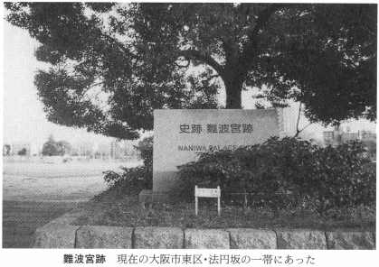
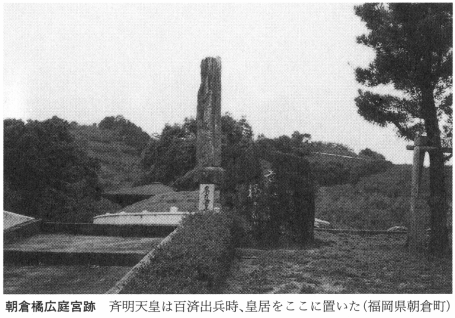
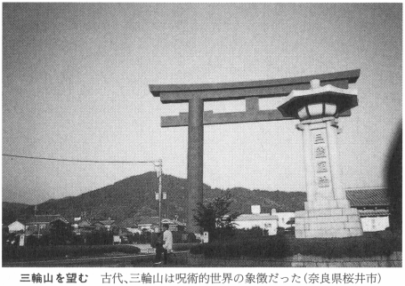
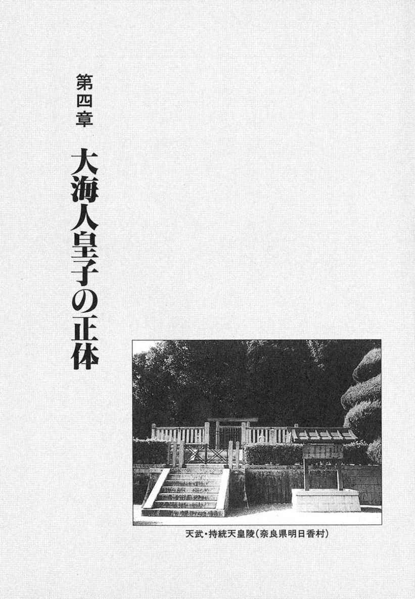
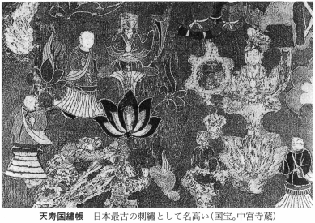

| 壬申の乱の謎 (PHP文庫) | |
| 関 裕二 | |
| (2003) | |
壬申の乱の謎
古代史最大の争乱の真相
関 裕二
はじめに
かつて、日本で大きな社会変動が起きるとき、必ずといっていいほど、「東西日本」が激突した。そして、二つの日本の対立と融合を経て、新たな潮流を産み出してきたものだ。
たとえば、十七世紀の戦国時代の乱世は、日本列島のへそ・関ヶ原の合戦でけりが付き、それから約三百年後、近代日本は、西国諸藩をバックにつけた京都の朝廷と江戸の徳川幕府の対立、という図式を産み出した。鎌倉幕府も、源氏を旗印にかついだ東国の武士団と西国の平氏の対立の果てにでき上がった。
なぜ東と西は、対立し、せめぎ合ったのだろう。
ヒントは、七世紀に起きた古代史最大の戦乱・壬申の乱に隠されている。
壬申の乱は、大海人皇子（のちの天武天皇）とその兄・天智天皇の骨肉の争いに端を発している。
西暦六七二年、出家し奈良の吉野に隠棲していた大海人皇子は、天智天皇の子・大友皇子と皇位継承権をかけて争い、ついに決起。吉野を逃れた大海人皇子は、わずかな手勢を率いて、東国をめざした。
朝廷の正規軍を抱えた近江朝の大友皇子が、裸一貫で立ち上がった大海人皇子に敗れるはずはなかった。蘇我氏や中臣氏など、大豪族も近江朝側に陣取り、中小豪族の寄せ集めとなった大海人軍との体力差は決定的であったからだ。
ところが、いざ蓋を開けてみると、信じがたい状況に陥った。東国の軍事力をフルに活用し、不破関（関ヶ原）をおさえた大海人皇子は、破竹の勢いで進撃し、一気に近江大津京の大友皇子を蹴散らしてしまったのである。
常識では考えられない逆転劇であった。しかしそれにもかかわらず、これまで、この大海人皇子の勝因については、ほとんど言及されてこなかったといっても過言ではない。
なぜかといえば、古代史研究は律令（古代の法律）がいかに成立し崩壊していったか、その過程を顕微鏡で覗く作業を中心にまわっているからであり、社会制度史からのみ壬申の乱を説明しようとするからである。それは、「科学的」で「客観的」であり、必要不可欠な作業といえよう。だがいっぽうで、「生き物」としての歴史を見落としがちであった。
「律令制度史」という「試験管」のなかで育まれてきたこれまでの「壬申の乱研究」は、生きた人間のドラマを再現することに不向きである。
本書は、謎に満ちた壬申の乱の背景を追い、『日本書紀』によって抹殺されてしまった乱の裏側、真実のドラマを、白日のもとに曝そうとするものである。
目次
●教科書から抹殺された壬申の乱
壬申の乱は、天皇家の内紛である。
『日本書紀』は天智天皇の弟・大海人皇子（のちの天武天皇）が、天智天皇の子の大友皇子を倒したのが壬申の乱であったとする。
もともとは、大海人皇子は天智天皇の即位ののち、次期皇位継承者として認められていたようだ。ところが、天智天皇はしだいに、息子の大友皇子に皇位を譲りたいという衝動に駆られるようになった。これに対し、身の危険を感じた大海人皇子は、出家して吉野に隠棲する。天智天皇崩御後、一触即発の緊張感のなか、大友皇子に不審な動きありと察知した大海人皇子が東国に逃れ、一気に近江朝を倒したわけである。
ところで、この皇子と皇子の対決が、近代にいたって、大きな波紋を投げかけることになろうとは、当の大海人皇子も知るよしもなかったにちがいない。
天皇制を前面に押し出すことで政権の安定を目論んだ明治政府は、歴史を語るうえでいくつものタブーをつくった。壬申の乱という古代最大の争乱も、歴史教科書から削除してしまうのである。
なぜ、壬申の乱を子どもに語ることが許されなかったのだろう。
きっかけは意外なところにあった。
慶応四年（一八六八）三月十四日、明治政府は五ヵ条の誓文を出し、新政府の基本方針を示した。そのなかで、神祇官を太政官の上に置くという、律令時代にもあり得なかった神道重視の姿勢を強烈にアピールしたのである。ここにいう神道重視とは、天照大神からつづく万世一系の神としての天皇を押し立てていく、という意思表示でもある。
さらに明治三年（一八七〇）七月、明治政府は、古式に則った荘厳な儀礼を執り行ない、大友皇子に「弘文」という天皇号を追諡した。『日本書紀』には、大友皇子が即位した事実は記載されていない。天智天皇の崩御後、大海人皇子が即位し、天武天皇になるまで、半年強の「空位」の時期があったとしている。それにもかかわらず、なぜ明治政府はこの段階で、大友皇子は即位していたと「正式に認めた」のであろうか。
ひとつの理由に、江戸時代に隆盛した国学の影響があった。
大友皇子を「天皇」と記した文書は、すでに十世紀の『西宮記』や十二世紀の『扶桑略記』などに存在していた。この説を取り上げたのは徳川光圀（水戸黄門とよばれた）の『大日本史』であった。さらに幕末、伴信友は『長等の山風』を記し、大友皇子即位説は優勢となった。
なぜ「尊王論」を標榜する国学が、大友皇子の即位を熱烈に唱えたのだろう。それは、「帝位に一日も空位があってはならない」という大義名分論からくるものであり、冷静な解釈とはほど遠いものだった。
それにもかかわらず、天皇を頂点に押し立てていこうとする明治政府は、幕末の国学者の鼻息荒い主張を、好意的・積極的に受け入れていったのである。
明治天皇が天武系ではなく、天智系であったことも、大友皇子即位説を推し進める原動力であったかもしれない。
ところがここで、厄介な問題が浮上してきた。
仮に大友皇子の即位を認め、弘文天皇を教科書に載せてしまうと、大海人皇子は「天皇を害し、皇位を手に入れた」ということになってしまう。これは謀反であり、日本の歴史にこのような「ハレンチ」な事態は例がない。
したがって、壬申の乱を学校教育で教えるべきではない、という考えがもち上がり、事実、明治二十五年を境に、壬申の乱の記述は歴史教科書から徐々に姿を消していくのである。
壬申の乱は歴史の「連鎖」があまりなく、教える必要がない、という強引な解釈まで飛び出す始末であった。
明治時代の壬申の乱をめぐる論争は、大友皇子が即位していたかどうかという副次的な論題に終始し、結果的に無駄な時間を割いてしまったといえよう。
●近代の正当性を証明するために利用された壬申の乱
このような明治時代の歴史学界の動向を笑うことはできない。なんとなれば、歴史解釈は、多くの場合、解釈する者の生きる時代背景を大いに反映するものだからである。「時代の要請」によって、歴史は大きく変わってしまうという事実を、われわれは肝に銘じておいたほうがいい。
たとえば、『日本書紀』は壬申の乱について、三十巻のうち一巻を特別に割いて詳述している。それにもかかわらず、いまだに多くの謎を残すのは、その時代その時代に応じた、それぞれの解釈が罷り通ったからでもある。たとえば、明治時代、古代史は明治維新と重ねて語られていたものだ。
まず、明治維新が壬申の乱に先立つ西暦六四五年に起きた大化改新と同一視された。
これはじつにわかりやすい図式だった。大化改新は、天皇家をないがしろにし、専横を繰り返していた蘇我入鹿を、中大兄皇子や中臣鎌足が誅殺し（乙巳の変）、天皇家中心の政権を樹立したものであり、明治維新も、この大化改新にそっくりだ。明治維新は、薩長を中心とした西国諸藩が天皇を担ぎ上げて三百年つづいた徳川政権を転覆し、王政復古を果たしたものである。しかも、新政府のなかには、中臣鎌足の末裔・藤原氏がいて、維新後、華族の筆頭に躍り出ることになる。まさしく、近代版大化改新だったのである。
壬申の乱も、明治・大正にかけて、「近代」を説明するのに、格好の材料となった。
すでに触れたように、大化改新同様、明治維新は「王政復古」をめざしたものであり、急進的な社会制度の改革も同時に進められた。西欧文明を積極的に導入し、自由民権運動も盛んになり、社会全体がみるみる変貌したものだ。しかし、そのいっぽうで、日本人のアイデンティティがゆらぎはじめたのも事実である。
当然、反動がやってきた。明治維新の急進的改革事業は、やがて、保守化、軍国主義化を招くことになり、悪夢のシナリオが待ちかまえていたことは、周知の事実である。
このような社会情勢のもとで、当時の史学者たちのなかには、まさに大化改新から壬申の乱の流れこそ、日本の近代とそっくりだ、と指摘しだすものが現われた。
すなわち、中大兄皇子と中臣鎌足らによる急進的改革事業・大化改新に対する反動が、壬申の乱にほかならない、とするのである。
このあたりの事情を、もう少し詳しくみてみよう。
大化改新は律令制度を取り入れようとする政治運動であり、豪族層が保持していた私有民（部曲）や私有地を没収しようとする働きかけでもあった。そのため、国民性情に合わぬ中国文化が積極的に導入されもした。
当然、豪族層の反発が予想され、よって乙巳の変の首班・中大兄皇子は、皇位を孝徳天皇や斉明天皇に譲り、陰から政局を動かしていた、と『日本書紀』には記されている。
しかし、中大兄皇子が近江遷都を断行し即位すると、しだいに天下百姓が反発するようになり、中臣鎌足の薨去（親王、あるいは三位以上のものが死ぬことをいう）、天智天皇の崩御（天皇の死を崩御という）の後、政権は一気に瓦解し、反動勢力の旗印に担ぎ上げられた大海人皇子（のちの天武天皇）によってひっくり返されたのだと史学者は考えるようになった。
天武天皇は政権を掌握すると、軍事力の強化に乗り出し、安定した社会を実現し、結果、文化の興隆を促した、とするのである。
こうした新たな解釈は、戦前の保守化した為政者たちの正当性を保証するものであったから、大いにもてはやされたのである。
●時代の要請で書き替えられる古代史観
このような時代とともに移り変わった歴史観は、戦後になってもつづいた。最初に大手を振ったのは、なんといっても唯物史観であろう。壬申の乱を階級闘争史とする見方がそれである。
たとえば北山茂夫氏は、壬申の乱を、大化改新以来引き継がれた国家的規模の奴隷制の強化が達成された事件だった、と指摘している。
このような時代相に翻弄された歴史解釈を笑うことはできない。なぜなら、現代の古代史観も、往々にして、時代の雰囲気に呑まれている場合が少なくないからだ。
たとえば、江上波夫氏（二〇〇二年十一月没。九十六歳）が唱え一世を風靡した「騎馬民族説」も、「皇国史観」に対する反動にほかならない、という指摘がある。
佐原真氏（二〇〇二年七月没。七十歳）は、『騎馬民族は来なかった』（ＮＨＫブックス）のなかで、
「戦時中には、日本神話が史実として扱われ、神武以来の万世一系の歴史が徹底的に教えこまれました。江上説には、それを打ちこわす痛快さ、斬新さがあり、解放感をまねく力がありました」
と述べている。
その通りであろう。そして、この後につづく歴史解釈にも、（当たり前のことなのだが）その史学者が生きている時代が、大きな影を落としている。
壬申の乱に関しても、このような事情は当てはまる。
戦後にいたり、壬申の乱について、ようやく科学的で客観的な論争が展開され、しかも細分化され、論議が展開されるようになった。
その結果、大海人皇子が決起したのは偶発的であったのか、それとも計画的であったのか、天武天皇はなぜ皇親政治を実現できたのか、その背景はどういうものなのか、七世紀当時の兵制はいかなるものだったのか、大海人皇子が東国に向かったのは大海人皇子の直轄領湯沐邑の兵力をあてにしたのではないか、という推理、さらには、乱の勃発には東アジアの情勢が大きく関与していたのではないか、という指摘も飛び出した。
また、大友皇子が即位していたのではなく、天智天皇の皇后・倭姫王が即位していた可能性、皇位継承を直系の者と定めた「不改常典」の問題などが、次々に浮上し、議論の対象となったのである。
そして研究が細分化したことで、最も重要な論点、壬申の乱の原因とその歴史的意義について、緻密な論理が出現するにいたるのである。
しかし、よくよく考えてみれば、「科学的」で、「客観的」という言葉のなかに、強く「現代的」な観念を読みとることができる。このような「顕微鏡」を覗き込んだような歴史論議というものにも、じつをいうと、戦後の合理主義という時代背景が横たわっていたからである。
「科学」や「合理性」に対する「信仰」に近いまでの信念が、歴史論議を支配していて、しかもこのような状況に、気づく者は少ないのである。
それは、（たとえは悪いが）「民主主義は絶対の正義」と信じて疑わないのと同じである。民主主義は合理的であるけれども、ほかにいい方法がないから方便として使っているだけで、人々が幸せになるための絶対的な条件ではない。したがって、王が支配する国と民主主義の国のどちらがいいか、という比較は間違っている。要は、その風土にあった政治体制であればいいのであって、その国民が幸せになれるのならば、「王様」の国でも差しつかえないのである。
それはともかく、話を壬申の乱に戻そう。壬申の乱をめぐる論議は精密で緻密になったけれども、なぜか謎は深まるばかりなのである。その原因は、議論が細分化され、専門化されすぎたからではないだろうか。細かい議論は多くなされている反面、大局に立って俯瞰するという作業がなおざりにされているように思えてならない。
また、歴史学は科学的な論理をめざすが、そのいっぽうで、「仮説」を軽視する、という傾向がある。科学は「仮説」と「実証」の積み重ねであるのに、歴史に限って、「仮説」はなかなか認められない。
壬申の乱の真相がなかなかつかめないのも、『日本書紀』の記述を「顕微鏡」で探求し、いかに解釈するかの堂々巡りを繰り返しているからである。しかも、『日本書紀』は、壬申の乱の勝者・天武天皇（大海人皇子）の正当性を主張するために書かれた正史であるという「動かし難い」前提を根拠に論が進められている。もしこの前提が間違っていたら、という疑問がなぜ出されないのか、不思議である。
いや、それは不思議でもなんでもない。顕微鏡をもったまま迷宮に入り込めば、だれもが抜け出せなくなるのだ。それはまるで、底なし沼の不況に陥った日本の社会現象とそっくりではないか。
「顕微鏡」をもたなければ正確な歴史を再現できないのは当然のことだ。しかし、「顕微鏡」だけを頼りに文献を読みあさっているようでは、全体像が見えなくなる、それが問題だといっているのである。
以下、謎めいた壬申の乱を、「顕微鏡」をもたずに、高台に登ってみつめ直してみたい。
コラム
二〇〇三年三月の中旬。まさに米英のイラク攻撃がはじまろうとしていたころのことだ。拙宅のおんぼろパソコンに、相次いで「チェーンメール」とやらが何通も飛び込んできた。
「これが噂のチェーンメール......」
はじめての経験に戸惑いながら、文面を読んでさらに面食らい、すべてその場で削除し、心のなかで合掌した。
「みなさんごめんなさい」
パソコンをお使いにならない方のために簡単に説明しておくと、「チェーンメール」とは、悪くいえば、かつて流行した「不幸の手紙」のようなもので、順繰りにメールが連鎖してつながっていく仕掛けになっている。またこのシステムを使えば、短時間のうちに、一つの意志が世界中を駆けめぐることもあるわけで、インターネットやメールを使い、世界中で反戦デモがくり広げられたことは、記憶に新しい。
メールというものは、アドレス（相手の宛て先）がパソコンに登録してあれば、無数の相手に手間なく一瞬で意思を伝達できるのだから、チェーンメールはみるみる増殖する仕掛けになっている。東京の片田舎で昼行灯を決め込む貧乏作家のパソコンをにぎわわせるにいたったのも、まあ当然といえば当然のことだった。
さて、そのメールの内容である。
「アメリカのイラク攻撃にメールを使って反対しよう!!」
という。そして、主旨に賛同する人は各自が署名をし、次の人に送ること。名前の先頭には順番に番号が振ってあって、それが五百人に達したら、ホワイトハウスにメールを送ってくれ、というのである。もちろん、ホワイトハウスのメールアドレスも、ご丁寧に添えられている。
「なるほど」と、妙に感心しつつも、どうにも気が重くなった。
アメリカのやっていることが正しいとは思わない。しかし、チェーンメールはいただけない。責任の所在がはっきりせず、さらには、だれが仕掛けたとも分からない運動ではないか。発信元がイラクや北朝鮮である可能性がまったくないわけでもない。アメリカも悪いが、大量破壊兵器を保持する国々も反省すべきであろう。
物事を「是か非か」で決めるのも性にあわぬ。
そういうわけで、チェーンメールは削除した。
●古代史は逆立ちしている
古代史は逆立ちしている。
古代史は何回もねじれ、逆立ちしたままなのに、これに気づかないでいるから、謎が多いのである。
歴史がねじれた発端は、西暦六四五年の乙巳の変とこれにつづく行政改革・大化改新である。そしてさらに壬申の乱によって、古代史は深い迷宮に入った。
乙巳の変、壬申の乱によって歴史は大きくねじれた。このねじれを見落としてしまったがために、結果、古代史はいつまでたっても堂々巡りを繰り返し、史学者たちは議論が逆立ちしたままであることさえ気づかずにいる。
壬申の乱の詳細は、乱勃発の四十八年後に完成した『日本書紀』のなかに克明に記されている。したがって、壬申の乱はほぼ『日本書紀』の同時代史であった。それにもかかわらず、その経過のほとんどが謎めき、侃々諤々の議論がなされてきたのである。
『日本書紀』編纂当時、乱に関わった人々が生きていた可能性は強いとされ、しかも、その編纂には乱の当事者である天武天皇の皇子・舎人親王があてがわれていた。それにもかかわらず、なぜ壬申の乱は謎めくのか。
最大の理由は、『日本書紀』に潤色がなされているから、と通説はいうかもしれない。『日本書紀』の編纂を発案したのは天武天皇であり、天武系の王朝内部で完成した。そのため、壬申の乱は『日本書紀』三十巻のうちの一巻を特別に割いて編集されている。これは、天武天皇の功績を称賛し、さらには、天武天皇にとって都合の悪いことは歴史から抹殺、あるいは潤色してしまおうという腹づもりだった、ということになる。この結果、いくつかの史実は捨てられ、書き替えられたことであろう。だから『日本書紀』の壬申紀が、多くの謎を産んでしまった、といっても過言ではない。
「いや、そうではない。頭ではそう思っていても、まだまだ天武天皇の術数にはまっていたのだ。天武天皇の都合のいい歴史書が『日本書紀』であったことを、軽視しているのだ」
と指摘したのが遠山美都男氏である。
遠山氏は、『壬申の乱』（中公新書）のなかで、次のようにいう。
これまでは知らず知らずのうちに、壬申紀を一貫する勝者の論理にのみこまれてしまっていたようです。ですから、わたくしは、勝者の声にはひとまず耳をふさぎ、できるだけ敗れ去った者たちの声に耳を傾けたいと思います。
なるほど、敗者の声に耳を傾けなければ真実の歴史は見えてこないとする遠山氏の考えはもっともである。
しかし、本当に天武天皇は歴史の勝者だったのであろうか。
たしかに天武天皇は壬申の乱を制した。しかし彼が歴史の勝者であったとは限らないのである。
じつをいうと、壬申の乱がいまだに謎めくのは、壬申の乱を克明に描いた『日本書紀』が、じっさいには天武天皇のために書かれたのではないことに、だれも気づかなかったからではないかと思える。つまり、遠山氏の言を借りるならば、われわれが留意すべき敗者の声とは、天武天皇の声であり、壬申の乱を勝利に導いた英雄たちの声ではなかったか。
この一点、『日本書紀』がだれのために書かれた文書だったのか、は非常に重要である。
●敵を礼賛した『日本書紀』の謎
壬申の乱は、天智天皇と天武天皇（大海人皇子）の兄と弟の確執が原因だった。また『日本書紀』は、壬申の乱で天智天皇の子の大友皇子を殺して皇位を簒奪した天武天皇が、乱の正当性を証明するために記させたのだと信じられてきた。
ところが、『日本書紀』が天武天皇のために書かれたという、これまでの「大前提」は、大きな矛盾をはらんでいる。
天武天皇と天智天皇は犬猿の仲であり、のちに天武天皇の末裔から王権を奪い返した天智天皇の末裔の王朝は、天武系の王家を天皇家の菩提寺・泉涌寺で祀ることを拒絶した。それほどの因縁を帯びた両者である。それなのに、「天武天皇のための『日本書紀』」のなかで、乙巳の変の中大兄皇子（天智天皇）の活躍を礼賛している。しかも、乙巳の変という天皇家にとって輝かしい事件のなかで、天智天皇の弟・天武天皇（大海人皇子）の活躍がまったく記されていない。
また『日本書紀』は、中大兄皇子の懐刀・中臣鎌足を比類なき忠臣と描いているが、中臣鎌足が大海人皇子と大友皇子の皇位継承問題勃発という緊迫した情勢のなかで、大海人皇子を排斥しようとした気配すらある。
たとえば、日本最初の漢詩集『懐風藻』には、次のような記事がある。
来日していた唐使・劉徳高は、大友皇子をさして、日本にいるのはもったいないほどの人物と評価していたという。ところが、あるとき悪い夢を見た。それは、天の門ががらりと開き、朱色の衣を着た老翁が太陽（天子の位を暗示）を捧げ、大友皇子に与えようとした。ところがそれを横取りされてしまった、というのである。
その話を聞いた中臣鎌足は、次のように語ったという。
「天は公平であり、善行を積むものを必ず助けます。大友皇子が徳を修める限り、災害や異変はなんの心配もいりません」
この一節からみて、中臣鎌足が天智天皇の息子の大友皇子の即位を願っていたことは間違いない。
このように、大海人皇子は中臣鎌足に危険視され、しかものちに触れるように、天智天皇に殺されかけているのである。それにもかかわらず、「天武天皇のために書かれた『日本書紀』」のなかで、どうした理由からか、天智天皇や中臣鎌足は礼賛されているのである。
この矛盾はどう説明すればいいのだろう。なぜ天武天皇は、宿敵を賛美する必要があったのだろう。
しかも、『日本書紀』は乙巳の変で劇的な場面をいくつも用意している。たとえば法興寺（奈良県明日香村の飛鳥寺）の「打毬」の話がもっとも有名だ。
蘇我入鹿の専横を憎んだ中臣鎌足は、蘇我本宗家打倒をめざし、よきパートナーを物色する。お眼鏡にかなったのは、中大兄皇子であった。ただ、なかなか近づけずにいた。そんなとき法興寺の打毬の会で、中大兄皇子が沓を飛ばす。すかさず中臣鎌足はそれを拾い上げ中大兄皇子に捧げた。中大兄皇子も礼をもって接し、これ以来、二人はつねに行動をともにし、思うところを述べ合い、蘇我本宗家打倒の夢に向かって突き進んだ、と『日本書紀』はいう。
だが、この有名な「打毬（蹴鞠）」の話は明らかに作り話だった。なぜなら、当時の日本にはまだ「打毬」は中国から伝わっていなかったからである。
話を創作してまで美化された中大兄皇子と中臣鎌足。いったい、『日本書紀』はなぜ天武天皇の宿敵を称賛したのだろう。
●『日本書紀』は藤原氏のために書かれた？
もっとも合理的な答えを出している人物がいる。それが、大和岩雄氏である。
ちなみに大和氏は史学者ではない。史学者ではないが、いまもっとも注目される古代史研究家であり、堂々と史学者と渡り合える大家といっていい。それどころか、これまでの常識にとらわれず、古代史解明の最先端を独走しているといっても過言ではない。
その大和氏は、『天智・天武天皇の謎』（ロッコウブックス）のなかで、天武王権が革命政権であることを前提に、興味深い指摘を行なっている。
それによれば、『日本書紀』の編纂過程で、天武王権の正当性を主張するための「原日本書紀」がまず存在したこと、さらに、首皇子（聖武天皇）の立太子の年（和銅七年［七一四］）からはじまった国史編纂事業で、首皇子の即位の正当性を証明する目的が加わったという。そのために、首皇子の母方の血統、すなわち、藤原氏の血統のよさを証明する必要に迫られたのだとする。
ただし、
藤原鎌足顕彰を全面に出すのは、国史の性格上まずいので、天武に対して天智を巨大化して、天智の巨大化イコール鎌足の巨大化という書き方をした。
というのである。
明解な説といわざるを得ない。
ちなみに、この一節は、藤原不比等が『日本書紀』の編纂に関わっていたとする大和氏の説を証明するための文章のなかに含まれている。『日本書紀』編纂に積極的に関わる動機が、藤原不比等にはあった、といっているのである。
大和氏のいうように、『日本書紀』編纂が、天武天皇のためでもなく天智天皇のためでもなく、藤原氏のための歴史書であったと考えれば、天智・天武、両者を称賛した意味がわかってくる。
ただし、藤原不比等には、もう一つ、『日本書紀』を編纂する動機があったように思われる。この「もうひとつの理由」によって、それでなくとも幾重にもねじれている古代政争史の真相は、複雑怪奇な謎に包まれ、闇に葬られてしまったとしか思えないのである。
では、藤原不比等が『日本書紀』を編纂したもうひとつの理由とは何か。
それは、乙巳の変、大化改新の本質をいかに改竄するかであり、不比等の父・中臣鎌足の出自を誤魔化すことにあった。
そして、ここが大切なことなのだが、乙巳の変、大化改新の実体、中臣鎌足の正体を闇に葬らない限り、壬申の乱の真相、天武天皇の正体を抹殺することはできず、そうなれば、八世紀の政界を牛耳る藤原氏の正当性は証明できなかったのである。
つまり、壬申の乱の謎解きは、乙巳の変の入鹿暗殺から壬申の乱を経て、藤原不比等が政権を掌握するその全過程のなかに、ヒントが秘められているのである。
たとえば、乙巳の変、大化改新、壬申の乱は、律令整備の歴史とともに語られてきた。しかし、一連の歴史の端緒となった乙巳の変にまつわる藤原不比等の歴史改竄を見逃していたために、これまで七世紀の歴史はすべて裏返しに読まれていたのである。「古代史は逆立ちしている」といったのは、まさにこのことなのであり、古代史をさかさまに読んでいたからこそ、壬申の乱の真相がつかめなかっただけの話である。
●だれがために『日本書紀』は記されたのか
それにしても、『日本書紀』の編纂を命じたのは天武天皇であり、天武天皇の子・舎人親王が編纂の責任者となったにもかかわらず、なぜ、天武天皇のためにではなく、藤原氏にとって都合のいい歴史書が誕生してしまったのだろう。
このあたりの事情は他の拙著のなかで繰り返し述べてきたので、要点だけをまとめておこう。
鍵を握るのは、天武天皇の皇后・野である。
天武天皇の崩御ののち、野が皇位を継承し、持統女帝が出現する。
持統天皇の父は天智天皇で、壬申の功臣が数多残る天武朝で即位できたのは、不可解な事態である。しかも、持統天皇は中臣鎌足の遺児・藤原不比等を大抜擢しているから、この政権は、「天智・中臣鎌足政権」の再現ということになり、どう考えても政変が起こっていたとしか考えられない。
なぜ、このようなトリックまがいの王朝転覆が可能になったかといえば、拙著『藤原氏の正体』（東京書籍）のなかで触れたように、高市皇子を次期皇位継承者にする、という妥協案を出し、諸豪族を説き伏せたからであろう。
持統天皇は暫定政権の顔で皇位にのぼりつめ、さらにそののち、邪魔になった高市皇子を抹殺したと考えられる。高市皇子の死の直後、あわただしく皇位継承問題が論議され、また紛糾したのはそのためである。おそらく、父鎌足譲りの謀略家・藤原不比等の入れ知恵にちがいない。
持統天皇は「天香山」の万葉歌を残したが、これが「政権交替」を詠ったものであることは、歴史作家・梅澤恵美子氏が指摘している。天香山に干された白い衣は天女の着る羽衣であり、羽衣を奪ったものがヤマトの政権を掌握するという伝承は、平安時代の『竹取物語』に語り継がれ、また、大嘗祭のクライマックスにおいて、天皇が天の羽衣を着ることで人間でなくなるのは、天の羽衣が即位儀礼に欠かせない呪具であったことを裏づけている。その神宝を、奪い取る絶好のチャンスだと、持統天皇は歌に残したのである。
これを裏づけるかのように、『日本書紀』は神話のなかで、天照大神という女神を中心に天孫降臨を描く。「大君は神」と歌い上げられた天武天皇であれば、むしろ、天孫降臨の祖は男神がふさわしかったはずなのに、あえて『日本書紀』が女神にこだわったのは、持統天皇が新たな王朝の始祖だったからにほかならない。女神を始祖に据えることで、「持統朝」の正統性を証明してみせたのが、『日本書紀』である。
さらにもう一点重要なことは、すでに触れたように、『日本書紀』が天智天皇（中大兄皇子）と中臣鎌足の若き日の勇姿を、乙巳の変という「物語」のなかで称賛していることである。
天智天皇は天武天皇を殺そうとさえした人物であり、中臣鎌足が大友皇子の即位を熱烈に願っていたことは、『懐風藻』の記事からはっきりとわかる。したがって、仮に『日本書紀』が天武天皇にとって都合のいいように書かれていたとすると、乙巳の変の天智・鎌足の英雄視は理解できない。
後世の文書の多くは『日本書紀』の内容と食い違い、矛盾することが多いが、唯一『日本書紀』に酷似した文書が存在する。それが、奈良時代に藤原仲麻呂が記させた『藤氏家伝』である。藤原氏のプライベートな「日記・史書」が、『日本書紀』の記事とそっくりなのは、『日本書紀』の内容が藤原氏にとって都合がいい、ということであり、そのことはつまり、『日本書紀』編纂に権力者・藤原氏の思惑が反映されている何よりの証拠である。
これは当たり前のことで、『日本書紀』が成立した当時、藤原不比等は朝堂の最高の地位にのぼりつめていた。歴史書編纂に藤原不比等の意向が反映していなかったとは考えられない。
したがって、天武天皇崩御後の政権は、天武朝の仮面をかぶった（天智系）持統政権であり、しかもそれは、壬申の乱でいったん没落した藤原氏復活のための政権であった。
『日本書紀』の編纂の責任者が舎人親王だったのはたしかにしても、それは名誉職であり、実質的に裏で動いたのは、藤原不比等であろう。
舎人親王は卑母の出で、天武朝では日陰の存在であった。このような「くすぶった天武系の皇族」を、この時代、不比等は巧みに利用している。
●『日本書紀』は壬申の乱を称賛する振りをしている
それはともかく、藤原不比等の死後、藤原氏は紆余曲折を経て、並び立つ者がいないほどの権力を手にし、平安時代を迎えた。また、奈良朝末期、藤原氏は天武王家を途絶えさせ、天智系の王家を復活させることに成功している（天智天皇の孫・光仁天皇の即位。その子が桓武天皇）。
その「平安藤原天智朝」で、『日本書紀』が焚書の憂き目に遭わず、正史として守られつづけたことを無視することはできない。欠けることのない望月（満月）と豪語した藤原氏であり、また、藤の木（藤原氏）は枯れないものだと揶揄された藤原氏である。ならば、大友皇子即位という一族の始祖・中臣鎌足の執念を断ち切った天武天皇さえも称賛した『日本書紀』を、いとも簡単に抹殺することはできたし、そうすべきであったろう。それをしなかったのは、『日本書紀』が天武天皇のために書かれたように見せかけて、その実、天武天皇の正体を抹殺するために書かれた文書だったからにほかならない。
これに関連して付け加えておくと、天武天皇の壬申の乱における行軍の足跡を神話化したものが、ヤマト朝廷初代天皇・神武の九州からの東征であったとする説がある。
その根拠は、大坂から紀伊半島を周り、熊野からのヤマト入り直前の行程の一部が重なるからとする。しかし、その重なりはほんのわずかであり、二つの事件を同一にしてしまうのは無茶である。
『日本書紀』は、けっして壬申の乱の天武天皇の活躍を称賛するつもりなどなかった。ましてや、神武天皇の東征という神話にすり替えるなどという発想をもつはずもなかった。『日本書紀』の称賛する王朝は、女神・天照大神（持統）が産み出した新たな政権であり、藤原氏の天下である。だからこそ、神話のなかで天照大神の背後に高皇産霊尊という藤原不比等そっくりな謎の神が現われたのである。
『日本書紀』が、壬申の乱の大海人皇子の活躍を称賛し、しかもわざわざ一巻を割いて詳述しているのは、壬申の乱の功臣が残る政権内で、妥協の産物として『日本書紀』が成立したからであろう。それは藤原不比等の巧みな戦術であり、後世の目を欺く結果にもなったのである。ただし、のちに述べるように、『日本書紀』は壬申の乱の本質を改竄している。一見して大海人皇子を称賛しているように見せかけておきながら、じっさいには、乱と大海人皇子の真実・正体を抹殺したのが『日本書紀』である。
このように、『日本書紀』は天武天皇の正当性を述べるために書かれたのではない。そして、そうであるならば、「『日本書紀』の壬申の乱の記述には、大きな潤色が残されている」というこれまでの論議に、大きな波紋を投げかけるのである。通説のいう「潤色」とは、要するに、天武天皇にとって都合のいい、という意味だからである。
そこであらためて、壬申の乱の真相を明らかにしていかなければならない。
●律令制度と壬申の乱の関係
壬申の乱をめぐっては、必ず「律令制度」という言葉がついてまわってくる。壬申の乱の大きな原因の一つが、律令制度の導入過程の葛藤にあった、とされているからである。
では、律令制度とはいったいなんだろう。なぜ一国の命運を左右するほどの意味をもっていたのだろう。
律令制度とは、要するに七世紀まで日本にはなかった明文法（文章に書かれた法律）によって国土を支配していく、ということなのだが、このシステムを構築するにあたっては、それまでの社会システムを根底から変革する必要があったのだ。最大の問題は、それまで黙認されていた豪族層の「私有地」と「私有民」の支配の権利を取り上げなければならなかったことにある。
そこで話は、三世紀のヤマト朝廷誕生にまで遡る。
三世紀前半、ヤマトには、それまで日本列島のどこにもなかったような巨大で政治的色合いを帯びた都市が誕生する。それが三輪山西麓の纒向遺跡で、吉備、出雲、東海、北陸から多くの土器が集まりだし、さらに、北部九州の土器が入ってくる。これと前後して、纒向遺跡の周辺に、日本で最初の前方後円墳が造営され、やはり、吉備、出雲、北部九州、ヤマトの埋葬文化が習合している。
この纒向遺跡の出現こそがヤマト朝廷の誕生を意味すると考えられているのは、各地の埋葬文化がひとつにまとめられ、しかも、この新たなヤマトの「宗教観」が、瞬く間に東北地方南部にいたる広大な地域に普及していくからである。そして、重要なのは、前方後円墳が、ヤマトの大王のあり方を象徴している、ということである。
すなわち、ヤマト朝廷誕生時のヤマトの大王は、各地の首長層の手で共立されたのであって、独裁権力をもっていたわけでもなく、また、強大な兵力をもって征服したわけではない、ということなのである。ヤマト朝廷を支えていたのは各地の豪族層であり、ヤマトの政局は、有力畿内豪族の合議によって運営されていたのである。
つまり、三世紀から六世紀にいたるまで、大王家と豪族層の間に多少の葛藤はあったにしても、広大な領地を有した豪族層を大王家が支配していたわけではけっしてなかった、ということがいえよう。
また、大王家の台所事情は豪族頼みで、大王家が支配する職掌集団の部民は、豪族たちの差し出した私有民にほかならず、よって、豪族層にそっぽを向かれれば、財政が立ちゆかなくなる、という脆弱さを兼ね備えていたわけである。
そして、六世紀にいたると、このようなシステムにほころびが生じてくる。
豪族同士が領土の拡大をめざして争い、土地と人民の収奪と搾取に奔走しだしたのである。
また、朝鮮半島では高句麗の南下が半島南部を圧迫し、日本の友好国の伽耶が滅亡する（西暦五六二年）。このような半島の戦乱に巻き込まれたヤマト朝廷は、流動化する情勢に翻弄されないためにも、強力な中央政府の確立をめざしたのである。
そこで、中国で完成された律令に注目が集まった。独裁権力をもった皇帝が広大な国土を統治するための法律が律令である。この律令を、日本風にアレンジすることで、日本に明文法を誕生させようとしたわけである。
律令はたんなる法律ではない。それまで豪族層が支配していた土地、人民の私有（豪族の私有民を民部・部曲という）を原則的に認めず、全国の土地はいったん国のものにして、それを均等に人々に分配し直し、その土地から生まれた農産物を「税」として徴収しよう、というのである。
もちろん、それ以前のヤマト朝廷は、広大な土地を支配し、その財力（軍事力も含まれる）を背景に発言力をもつ豪族層に牛耳られていたのだから、彼らが律令整備に反発するであろうことは明らかであった。
そこで豪族層にその力に見合った官位と役職を与え、俸禄を支払うことを見返りに彼らの反発を回避しようとしたわけである。
ところで、このような律令制度を日本に導入しようと最初に目論んだのが、聖徳太子であった。
『日本書紀』によれば、聖徳太子は憲法十七条、冠位十二階を制定し、律令制度導入の先鞭をつけたのである。
そして、さらに『日本書紀』の記述どおりに話を進めれば、聖徳太子の死後、当時最大の勢力を誇っていた蘇我氏が、太子の遺志を握りつぶし、天皇家をないがしろにし、律令制度発展の最大の障害になっていた、ということになる。
そこで中大兄皇子と中臣鎌足は、蘇我入鹿暗殺を目論み、西暦六四五年、蘇我蝦夷・入鹿親子を討ち滅ぼすのである。これが世に名高い乙巳の変で、こののちの行政改革を大化改新という。
大化改新という一大改革がじっさいに行なわれていたかどうかについては、議論が絶えないのだが、律令体制に向けての本格的な動きがはじまったことはたしかであろう。
もちろん、この急進的な改革を執り行なったのは、乙巳の変で蘇我本宗家を潰した中大兄皇子（天智天皇）であった。
ところが、このあたりから、律令制度をめぐる歴史は、混沌としてくる。
『日本書紀』は、どうした理由からか、中大兄皇子の施政に対する民衆の不満を記録している。これは、急進改革的な律令制度導入に対する民衆や豪族層の不満が爆発したものにほかなるまい、ということになり、これに対し、大海人皇子（のちの天武天皇）が人々の不平を吸収し、壬申の乱を勝ち抜いた、とする説が飛び出した。
壬申の乱を語るうえで、律令制度をめぐる問題が不可欠とされているのはこのためで、また、乙巳の変、大化改新と壬申の乱の間に強い因果関係が見出されるというのも、同様の意味からである。
そこで次に、乙巳の変から壬申の乱にいたる経過を概観してみよう。
●乙巳の変と壬申の乱の因果関係
『日本書紀』にしたがえば、聖徳太子が先鞭をつけた律令制度導入の流れは、蘇我馬子、蝦夷、入鹿ら蘇我本宗家の抵抗によっていったん頓挫したことになる。蘇我本宗家は、律令導入によって既得権を奪われることを嫌った、という図式だ。しかも、蘇我入鹿は政局運営の邪魔になった山背大兄王（聖徳太子の子）を斑鳩宮に急襲し、山背大兄王一族（上宮王家）を滅亡に追い込んでしまったのである。
蘇我氏の専横は目に余り、王家をないがしろにする振る舞いはエスカレートしていった。蘇我氏の威は人々を震え上がらせ、盗人も、道に転がる落とし物を拾おうともしなかったという。
このような動きに反旗を翻したのは、中大兄皇子と中臣鎌足であった。
皇極四年（六四五）六月十二日、飛鳥板蓋宮大極殿で、朝鮮半島の三つの国、高句麗、百済、新羅の三韓が調を奉るそのときを狙って、入鹿暗殺を計画したのである。
中大兄皇子と中臣鎌足は周到に準備を進め、蘇我入鹿の従兄弟に当たる蘇我倉山田石川麻呂をクーデターに引きずり込んだ。
石川麻呂が三韓の表を読み上げ、建物の門すべてを閉じ、刺客を用意した。
上表文を読み終わろうとするのになかなか刺客が飛び出さないことに動揺した石川麻呂は、わなわなと震え出す。入鹿の威に圧倒された刺客たちも、嘔吐する有り様。中大兄皇子がしびれをきらし「やあ」と気合いを入れ、ようやく入鹿は刺客の手に落ちたのである。
斬りつけられた入鹿は玉座の女帝・皇極に詰め寄る。
「まさに、皇位にあらせられるべきは天子様です。私になんの罪があるというのでしょう。どうかお教えください」
すると皇極天皇は、息子の中大兄皇子に事態の説明を求める。
中大兄皇子は、
「鞍作、天宗を尽し滅して、日位を傾けむとす。豈天孫を以て鞍作に代へむや」
つまり、蘇我入鹿（鞍作）は王族を滅ぼし（上宮王家滅亡事件）、天位を奪おうとしているのです。鞍作に天位を奪い取られていいのでしょうか、と叫んだのである。
皇極天皇は言葉を失い、その場を立ち去り、入鹿にとどめが刺された。
こののち、甘樫丘の蘇我蝦夷も自刃し、蘇我本宗家は滅亡。皇極天皇の弟・軽皇子が即位し（孝徳天皇）、また中大兄皇子が皇太子に、中臣鎌足が内臣となり、改新政府が樹立される。
元号を大化に改めた改新政府は、滞っていた律令整備を急いだ。
年が改まった大化二年（六四六）、改新之詔が公布される。その内容は、土地と人民の私有を認めず、皇族たちの子代・屯倉、豪族たちの部曲などを収公し、公地公民とする。その見返りに、皇族、貴族、豪族は、それぞれに給与を与え、また、中央と地方の行政組織を整える。さらに、班田収授法をつくり、全国の土地を調べ上げ、戸籍をつくり、公地を人々に公平に分配し、租税の統一を図る、というものであった。
だが、はたしてこのとき、『日本書紀』のいうような改革事業が一気に軌道に乗ったかというと、大きな疑問が投げかけられている。
じっさいに律令制度が整うのは大宝元年（七〇一）に施行される大宝律令からで、改新之詔には多くの文飾が加わっている、とする見方が定着している。
ただし、大化改新で何も改革が起きていなかったのかというと、そうではなく、天皇に権力を集め、強力な中央集権国家をめざすという方向性は形づくられ、こののち中大兄皇子らの手によって推し進められていった、という点では、異論がないだろう。
問題は、すでに触れたように、あまりに急進的な改革事業に対し、反動化したのは天智天皇だったのか、あるいは天武天皇だったのか、ということにある。多くの説を折衷すれば、どちらも律令制度を後退させたのではなく、二人とも律令制度の整備には心を砕いていると見ることができる。壬申の乱の大勝によって、たまたま（天智側から見れば、「皮肉にも」ということになろうか）天武天皇に権力が集中し、律令制度の整備が急ピッチで進められた、ということになろうか。
●本当に蘇我氏は律令整備の邪魔になったのか
しかし、ここから話は厄介なことになってくる。
天皇家をないがしろにして律令制度の導入を阻止しようとした蘇我氏。これに対し、、蘇我本宗家を倒すことで、皇権を強化し、律令制度を導入しようとする中大兄皇子と中臣鎌足という図式には、大きな疑問を感じざるを得ないのである。というのも、中大兄皇子と中臣鎌足は、本当に律令制度を整えるために、乙巳の変の蘇我入鹿暗殺を計画したとは思えないからである。
蘇我氏が律令制度の導入に反発していたと信じられてきたのは、蘇我本宗家の滅亡と同時に大胆な改革事業がはじめられたからである。また、私利私欲に走り、自己の保身のために奔走していた蘇我氏が、豪族から土地と私有民を奪い取る律令制度を受け入れるはずはない、という発想である。
それは蘇我本宗家に限らず、その他の蘇我氏も同様だった、とするのが通説の考えである。
たとえば、改新政府の重鎮・右大臣として強い影響力をもっていた蘇我倉山田石川麻呂は、大化五年（六四九）三月、異母弟・蘇我日向の密告を受け、謀反の疑いありとして、誅殺されてしまう。これは、中大兄皇子にとって、しだいに蘇我倉山田石川麻呂が改革事業のお荷物になったからであろうと考えられている。
このあたりの事情を、直木孝次郎氏は『日本の歴史２ 古代国家の成立』（中央公論社）のなかで、次のように語っている。
蘇我氏打倒、新政開始という大事業をはじめる時こそ石川麻呂の勢力・人望が必要であったが、新政が一段落を告げたいまとなっては、石川麻呂の存在は中大兄にとって障害となりかねない。かれが皇太子として専制権力をふるおうとすると、石川麻呂がじゃまになるのである。
そして、その証拠に、『日本書紀』の大化四年の記事には、新たに決まった「冠」を石川麻呂が拒否したこと、それが、日本最大の豪族の代表者としての石川麻呂の自負心の表われだった、とする。
さらに川崎庸之氏は、『天武天皇』（岩波新書）のなかで、やはり、蘇我倉山田石川麻呂は、乙巳の変を断行するに必要不可欠な人物であったとしたうえで、
いまはすでにその果すべき役割をおえて、後はただその伝統的な勢望が他を壓するばかりになっているのが、なお限りなく前進をつづけようとする中大兄らにとって、もはや一個の好ましからぬ存在以外のものではなくなっていたというような事情があったのではないかと思われる。
とし、蘇我倉山田石川麻呂が律令制度導入の大きな足かせとなっていた、としている。
吉田孝氏は『大系 日本の歴史３』（小学館ライブラリー）で、蘇我倉山田石川麻呂の死後の、一味の処罰対象の大きさを指摘し、それは、
新政府への反対勢力の根深さによるものだろう。
というのである。
すなわち、改新政府の急進的な律令整備に対する豪族層の不満を、蘇我倉山田石川麻呂が代表していた、というのである。
悪役・蘇我氏の面目躍如といったところか。
しかし、このような『日本書紀』の示した勧善懲悪の図式を、なぜいままで疑う者がいなかったのであろう。
少なくとも、蘇我倉山田石川麻呂の滅亡事件において、蘇我倉山田石川麻呂に謀反の意志のなかったことが、後日はっきりと分かったと『日本書紀』は記録している。
蘇我倉山田石川麻呂は、罪なくして殺されたのは明らかであり、しかも、事件を誘導したのは中大兄皇子であった可能性は高い。問題は、通説のいうように、改革事業の邪魔になったから中大兄皇子は蘇我倉山田石川麻呂を殺したのかどうか、ということになる。
もしそうでないとしたら、蘇我倉山田石川麻呂の死は、たんなる権力闘争ということになる。
●見直されてきた蘇我氏と王家の本当の関係
これまで、蘇我氏＝改革事業の邪魔者、と信じられてきたが、それは誤りではないかとする考え方が、ようやく唱えられるようになってきている。それどころか、蘇我氏こそが、律令制度導入に積極的だったのではないか、とする指摘すらある。
その理由は、六世紀から七世紀にかけての蘇我氏の活躍のなかに隠されている。
すでに触れたように、ヤマト朝廷は三世紀に豪族層の連合によって成立した。各地の首長・豪族たちは、私有民を所有し、そのなかの一部を大王家に差し出し、私有民の支配を認められた。
これに対し大王家は、六世紀にいたり、直轄領・屯倉を増やすことで、財力の増大をめざした。この「屯倉制」の延長線上に「律令制」が重なってくる。
問題は、六世紀の屯倉制の導入を積極的に推し進めていたのが、だれあろう蘇我氏であったことにある。
蘇我氏はさかんに大王家に女人を嫁がせ、その腹から生まれた御子を即位させ、権力を握っていたのである。そして屯倉制とは、このような大王家に力をつけさせようとする方便だったわけである。
このあたりの事情を、遠山美都男氏は『大化改新』（中公新書）のなかで、次のように語っている。
蘇我氏は、あくまで王権に依存・寄生する存在として生まれた、
のであって、
蘇我氏が大王家に対抗し、果てに王権を簒奪しようと企てたなどとは到底考えがたい。
とするのである。その通りであろう。
それほどまでに、六世紀から七世紀にかけての蘇我氏と大王家は緊密な関係を築いていたのである。
すでに拙著『大化改新の謎』（ＰＨＰ文庫）のなかで触れたように、蘇我氏こそが日本に律令を導入しようとした張本人であり、この改革事業を潰しにかかったのが中大兄皇子と中臣鎌足だったと考えられる。
蘇我氏の改革事業、中大兄皇子の反動という図式は、壬申の乱を読み解くための大きな指針となってくる。なぜならば、このあと詳述するように、壬申の乱で、蘇我氏は大友皇子勢力に身を寄せながら、乱勃発の前後から、大海人皇子のために働き、大友皇子を裏切っていくからである。さらに付け加えるならば、蘇我本宗家と関わりのあった人脈が、やはり大海人皇子の背後で暗躍しているのである。
とするならば、「反蘇我」の中大兄皇子（天智）と「親蘇我」の大海人皇子（天武）という図式が浮かび上がってくるのであり、この構図のなかに、新たな壬申の乱の仮説が得られるはずなのである。
●蘇我氏が律令制導入を邪魔していない証拠
では、蘇我本宗家が、『日本書紀』のいうような反動勢力ではなく、じっさいには律令制度を導入しようと動き、これを嫌った中大兄皇子と中臣鎌足が蘇我本宗家を潰しにかかったという推理を証明することはできるのであろうか。この推理の根拠を簡潔に挙げておくと、おおよそ次のようになる。ただし、詳しい内容は、他の拙著を参考にしていただけるとありがたい。
さて、第一の理由。
中大兄皇子は乙巳の変の入鹿暗殺の場面で、蘇我入鹿を殺す大義名分に、蘇我氏の王権簒奪の野望を挙げている。しかし、蘇我氏と大王家の関係は、じっさいには緊密だった。そのため中大兄皇子には、蘇我入鹿を殺すもっと別の理由があったと考えられる。それは外交政策の行き違いであり、詳しい内容は、このあと述べることにする。少なくとも、蘇我氏は律令制度導入の邪魔になったのではない。
第二の理由。
蘇我入鹿（あるいは蝦夷）は死後祟って出ている。
祟りは殺した側に非がある証拠であり、逆に、蘇我入鹿には罪のなかった何よりの証拠である。蘇我入鹿が恨んだのは、中大兄皇子と中臣鎌足の主張に正当性がなかったためと考えられる。
第三の理由。
蘇我入鹿暗殺後、改新政権が難波に遷都している。クーデター政権である改新政府が、なぜヤマトにとどまらず、難波遷都を急いだのか、理解できない。
三世紀来ヤマトが都に選ばれつづけたのは、ヤマトがヤマト朝廷の版図のほぼ中央に位置し、交通の便がよかったこと、それ以上に大きな理由は、この地が天然の要害だったことにある。背後に山をもち、しかも瀬戸内海方面に、生駒山・葛城山という「山城」が屹立する。これほど安全な場所は、他に例をみない。
これに対し、難波は脆弱だった。瀬戸内海に面し、海からの攻撃に弱く、しかも東を振り向けば、ヤマトの山塊が迫る。難波は流通の中心となり得ても、都にはふさわしくない。
ちなみに、四世紀から五世紀にかけて、応神天皇らが難波に遷都したことをもって、新王朝の誕生とする説があるが、これは間違いだ。武力によって新王朝を打ち立てたのなら、その政権はヤマトにしがみつくであろう。したがって、難波に遷都するということは、「革命、政権乗っ取り」の証ではなく、「内政の充実、安定」の証明にほかならない。内乱の危機がなくなったからこそ、水上交通の要所である難波に遷ることができたのである。内政を充実し、不満分子を取り除いた者、そのうえで経済の発展をめざそうという者だけが、難波遷都を許されたのである。古代における難波遷都は、けっして新王朝の誕生などではない。ヤマトの安定あってこその難波なのである。
ひるがえって乙巳の変ののちの難波遷都をみれば、仮に蘇我本宗家を倒したとしても、蘇我氏全体を潰したわけではなかったことを忘れてはならないであろう。残党は必ず存在したであろうし、その威に人々が震え上がるほどの勢力をもった者たちがヤマトにくすぶっていた可能性も高い。無視できない勢力であり、とするならば、難波遷都は危険きわまりない。

いっぽう、『日本書紀』には、乙巳の変の入鹿暗殺直前、ネズミが難波に向かっていて、これこそが都を難波に遷す兆しだったという記述がある。入鹿暗殺以前に難波遷都の予兆があったという『日本書紀』の記事は無視できない。
蘇我入鹿が盤石な蘇我政権のもと、都を難波に遷そうとしたそのとき、入鹿は暗殺されたのであって、入鹿の遺志を引き継いだ孝徳天皇が、すでに画定済みの難波遷都を強行した、というのが真相であろう。ところが、こののち孝徳朝は瓦解する。それは、ヤマトに居残った中大兄皇子らのゲリラ戦によって要人が次々に暗殺され、難波にいることの不利を突かれたからにほかなるまい。難波とは、ヤマトに敵がいた場合、それほど脆弱な場所なのである。
こうしてみてくれば、蘇我氏が律令制度導入の邪魔になったというこれまでの常識は、じつに心許なくなってくるのである。
それにしても、なぜ中大兄皇子は「王権強化」につながる律令制度の導入を拒み、蘇我氏を倒さねばならなかったのであろう。
ここには複雑な背景が横たわっていたようである。『日本書紀』の乙巳の変の場面に、このあたりのいきさつを解き明かすヒントがある。
乙巳の変の直後、古人大兄皇子は自宅に戻り、奇妙なことをいい出す。
「韓人、鞍作臣を殺しつ。韓政に困りて誅せらるるを謂ふ。吾が心痛し」
つまり、「韓（朝鮮半島）の人」が入鹿を殺した、というのだ。しかし、入鹿暗殺に手を染めた面々のなかに、「韓人」に該当する者は含まれていない。そこで、『日本書紀』の分注は、これを「韓の人」ではなく、「韓政」が原因だったと解説する。すなわち、外交問題のこじれが、入鹿の死を招いたことを意味している、とするのである。
こうしてもう一つ、蘇我入鹿暗殺の原因をめぐる矛盾が出現したわけだ。『日本書紀』の示した入鹿暗殺の大義名分の三つ目である。それは、外交問題であったということになる。
それでは、蘇我入鹿と中大兄皇子や中臣鎌足の間に、外交問題をめぐる軋轢が存在したのであろうか。
『日本書紀』の文面をみる限り、中大兄皇子と蘇我氏が外交をめぐって対立した、という様子を読み解くことはできない。しかし、少し広い視野をもてば、意外な情景が浮かび上がってくる。
問題は五世紀来のヤマト朝廷の友好国・朝鮮半島西南部の百済である。
乙巳の変当時、百済は滅亡の危機に瀕していた。
百済が断末魔の叫び声をあげていたとき、飛鳥を牛耳っていたのは蘇我氏である。しかし、飛鳥の朝廷に、百済を救援しようとする動きはなかった。したがって、古人大兄皇子の叫んだ「外交問題」とは、百済をめぐる政策の違いであった疑いが出てくる。
そこでこのあたりの事情をはっきりさせるために、三世紀のヤマト建国以来のヤマト朝廷の外交戦略と、激動の朝鮮半島情勢を概観しておこう。
●壬申の乱の背景にあるヤマト朝廷の外交史
三世紀のヤマト朝廷誕生以前、北部九州と朝鮮半島南部は、同一文化圏といっていいほどの緊密な関係をもっていた。
やがて三世紀半ばにヤマト朝廷が誕生し、また朝鮮半島では、北方の騎馬民族国家・高句麗を筆頭に、百済、新羅、伽耶（ただし伽耶は統一国家とはならず、いくつもの小国家の連合体を貫き通した）が成立していく。
当初、ヤマト朝廷は半島最南端の伽耶と密接につながっていた。多島海を利用した交易を盛んに行なっていた伽耶と、四方を海に囲まれ水上交通の発達した日本とは、相通じる文化があり、交流も深かったのである。また、もっと大切なことは、伽耶が鉄を産し、この鉄をめぐって、周辺諸国が集まり、もちろん、ヤマト朝廷（それ以前の倭人も）は、この鉄資源を確保するために集結した。
五世紀にいたり、高句麗が南下政策を採るようになると、ヤマト朝廷は、朝鮮半島南部の権益を守るために、出兵を繰り返し、高句麗に戦いを挑むようになる。この行動は中国にも知れ渡り、倭国王は、中国の南朝（宋）に働きかけ、より高い称号を得ようと奔走した。いわゆる倭の五王（讃・珍・済・興・武）がこれで、最後の武王が『日本書紀』にいう第二十一代雄略天皇のことと考えられている。
雄略天皇はもともと皇位継承の本命ではなかったが、有力な皇族を次々に殺し、クーデターによって王権を獲得した。
豪族層の合議制を旨としていたヤマト朝廷のなかで、異色の天皇（大王）であり、この天皇に付き従う豪族はほとんどいなかったと『日本書紀』は記録している。
このため、雄略天皇は、海の外に味方をつくるという策に出たようだ。その相手が百済で、ここからヤマトの王家と百済の密接な関係がはじまる。
百済は高句麗の南下に頭を悩ませ、隣国の新羅とときに手を組み、高句麗に反撃し、また、高句麗の南下がおさまると新羅と対立する、という複雑な環境のなかにいて、ヤマト朝廷との関係を重視したのである。
いっぽうヤマトでは、おそらく強権的な王権と豪族層の軋轢があったのだろう。雄略天皇の崩御後も、ヤマト朝廷は混乱し、第二十五代武烈天皇の御世に、王統は断絶してしまう。
そして六世紀初頭ごろ、北陸から第十五代応神天皇五世の孫、継体天皇がヤマトに連れてこられ擁立される。
このとき、王朝交替があったのではないかとする説があるが、ここは『日本書紀』の記述のまま話を進めよう。
六世紀、朝鮮半島に激震が走った。最南端の伽耶諸国が、百済と新羅に徐々に領土を掠め取られ、ついに西暦五六二年（欽明二十三年）に滅亡してしまったのである。
ヤマト朝廷も伽耶の滅亡を手をこまねいて見ていたわけではない。新羅のさかんな攻勢に対し、百済とともに対処しようとした。ところが、肝心のヤマト朝廷の出先機関・任那日本府と百済の反りが合わず、新羅に隙をつかれる格好となった。結果、新羅の伽耶侵攻を止めることはできなかった。ヤマト朝廷の外交政策の行きづまりであり、混迷の東アジア情勢に翻弄されたまま、ヤマト朝廷は東アジアのなかで、発言力を急速に落としてしまったのである。
●七世紀の蘇我系政権の選んだ道
そんな折りも折り、蘇我氏が台頭し、六世紀末には、蘇我系の女帝・推古のもとで蘇我系皇族聖徳太子が摂政となり、改革事業がスタートする。
この「飛鳥蘇我系政権」の功績のひとつに、それまで百済一辺倒であった外交方針を、全方位形外交に改めたことが挙げられる。隋に小野妹子を送り込み国交を結ぶと、さらに蘇我馬子は、新羅使を迎え入れ、友好関係を結ぶことに成功するのである。それまでの百済重視の方針では考えられないような変貌といっていい。
なぜ「蘇我政権」は、隋や新羅を選んだのだろう。
背景には、雄略天皇以来つづいてきたヤマトの王家と、豪族層の確執が横たわっていたと思われる。
五世紀の雄略天皇は、王権を手に入れる過程で、当時最大の勢力を誇っていた蘇我系の円大臣（葛城氏）を滅亡に追い込んでいる。こうしておいて、雄略天皇は伽耶を軽視し、百済を選んだ。おそらくヤマトの豪族は、このような雄略の方針を承服できなかったにちがいない。ヤマト朝廷の出先機関であるはずの任那日本府が百済と連帯するヤマト朝廷の方針に従わなかったのは、このような王家と豪族の因縁が背景にあったと考えるとわかりやすい。
あまりにおおまかな図式であるが、雄略天皇以来の「百済」を選択した大王家と、「伽耶」に固執した豪族層の反目が、六世紀初頭の継体天皇を産み出し、さらに幾たびかの混乱を経て、飛鳥蘇我系王家が誕生したのだろう。
要するに、飛鳥蘇我系王家とは、極端な「親百済外交」の呪縛から解き放たれた政権といえるのである。
ところが七世紀前半、隋が高句麗征伐の失敗で自滅し、唐に政権を奪われ、にわかに東アジア情勢は流動化する。百済の滅亡が近づいたのは、このときからである。
唐の皇帝・太宗ははじめ、東突厥（トルコ系部族）や吐谷渾、さらには、吐蕃、西突厥といった西方・西北の国々を悉く制圧していった。当然、東側の朝鮮半島には目が向かなかったから、高句麗は勢いを増し、また新羅は、ヤマト朝廷の介入はないとみて、百済を圧迫した。
このように、唐の出現によってもっとも困窮したのは百済である。
新羅は唐に急接近し、援助を求めたから、これに対抗し、高句麗と百済は、同盟関係を結ぶ。百済は新羅の伸長を恐れ、かたや高句麗にすればいつ唐が攻め込んでくるとも分からず、その保険のつもりであったろう。しかしこの同盟が、高句麗と百済の滅亡を早めることになってしまう。
前王朝・隋は高句麗を攻めきれずに息切れしたが、歴代中国王朝にとって、高句麗をはじめとする北方騎馬民族は、つねに目の上のたんこぶであった。だから唐は慎重で、西方の憂いをなくした段階にいたって、ようやく高句麗征伐に向かったのである。
西暦六四二年、高句麗では泉蓋蘇文のクーデターが起きていて、高句麗征討のチャンスであったが、唐の内政の混乱によって見送られた。
その翌年、百済と高句麗は新羅を攻撃し、新羅が唐に救援を求めたので、唐は高句麗に使者を送り、新羅との戦いの中止を求めた。しかし、泉蓋蘇文が無視したので、西暦六四四年、唐が高句麗に向けて軍を進めはじめた。
そしてその翌年、つまり、日本では乙巳の変の起きた年、唐の大軍は、遼東を攻略。いったん兵を引き揚げるが、二年後に再遠征を決行。諸城を落とし、さらにその翌年の西暦六四八年、水軍を補強して大軍を送り込もうと目論んだが、太宗の死によって頓挫した。
●中大兄皇子の無謀な百済救援
太宗の子・高宗が即位すると、唐は大胆な方針転換を行なう。西暦六六〇年（斉明六年）、新羅の要請を受けた唐は、攻める矛先を、高句麗ではなく、まず百済と定めた。
高宗は西域征討に活躍した蘇定方を大将に任命し、百済を討たせた。新羅もこれに応え百済に進軍、百済の都泗城は一気に押しつぶされた。百済の義慈王は降伏し、百済はいったんここに滅亡する。
これに対し、百済の鬼室福信は、百済復興に立ち上がる。ヤマト朝廷に人質として預けてあった豊璋（義慈王の子）を召喚し、新たな王に立てようと目論み、ヤマトに使者を送った。ヤマトでは、斉明（皇極）天皇の御世であり、中大兄皇子と中臣鎌足が実権を握っていたちょうどそのときだった。ヤマト朝廷はここに、百済救援を決断したのである。
斉明七年（六六一）、百済救援のために、斉明天皇自ら筑紫に赴くも、朝倉宮で崩御。中大兄皇子が称制を敷く。そして中大兄皇子は、阿曇比羅夫、阿倍比羅夫といった名だたる武将を百済に派遣し、また、豊璋を本国に送り返した。

翌天智元年（六六二）、豊璋は百済王となり、百済復活を目論むも、鬼室福信の人気の高さを妬み、謀反の嫌疑をかけてこれを斬り殺してしまった。猛将鬼室福信の死を聞き新羅は勢いづき、唐の軍勢とともに豊璋の陣取る錦江下流域の州柔城を包囲した。
孤立無援となった州柔城を救援すべく、ヤマトから差し向けられた大水軍が立ち向かうが、白村江で唐と新羅の連合軍に壊滅的打撃を受け、これで百済の滅亡は決定的となった。いわゆる、白村江の戦いがこれである。
百済王・豊璋は、決戦の直前、寵妃とともに城を抜け出し、ヤマトの水軍に合流し、敗戦ののち、高句麗に逃走したと『日本書紀』は伝えている。
これが、乙巳の変のころの東アジア情勢のあらましである。
興味深いのは、乙巳の変の起きた年が、朝鮮半島の大動乱の幕開けの年にあたっていることである。
この緊迫した情勢のなかでの蘇我入鹿暗殺である。古人大兄皇子の「入鹿は韓人に殺された（外交問題で殺された）」の一言がある。そして、入鹿を殺した中大兄皇子は、それまでヤマト朝廷が目を背けてきた百済救援に邁進していくのである。
この時点で百済に加担すれば、大国唐を敵に回すことに直結するのである。しかも百済は風前の灯火であり、新羅と唐の挟み撃ちにあえば、勝ち目はない。ようやくの思いで隋・唐と国交を開き、新たな文化を取り入れようとした聖徳太子の大志は、すべて水泡に帰すかもしれない。それどころか、百済とヤマト朝廷は、東アジアで孤立する危険すらあった。
そしておそらく、当時の民衆は、中大兄皇子の推し進めようとしていた百済救援を無謀と考えていたのだろう。中大兄皇子の周りでは、不審火が相次いだという。
このようなマイナス要因を抱えたうえで、中大兄皇子を百済救援へと駆り立てたものは、いったい何だったのか。なぜヤマト朝廷最大の危機をつくり出す無謀な遠征を強行したのだろう。
●中臣鎌足が歴史から消えた謎
乙巳の変の謎を解く鍵は、外交問題なのである。もちろん、壬申の乱も、白村江の敗戦以後の流動化する東アジア情勢と無縁ではなかった。そして、乙巳の変と壬申の乱の間に全方位形外交が、親百済外交へと揺り戻された事実を見逃してはならないだろう。
では、なぜヤマト朝廷の外交方策は大転換を迫られたのだろうか。
ここにひとりのキーマンが登場する。それが中大兄皇子の片腕として活躍した中臣鎌足（中臣鎌子）のことである。
中臣鎌足といえば、知らぬ者はいないほど有名な人物である。
逆臣蘇我入鹿を殺し、大化改新を実現した英雄として、歴史に名を刻んでいる。
しかし、この人物の素性は定かではない。『日本書紀』に登場するのは、蘇我入鹿が山背大兄王の一族を滅亡に追いやったのち、皇極三年のことで、このとき、無位無冠の中臣鎌足は唐突に神祇伯任命を受ける。
ちなみに神祇伯とは、神祇全般をつかさどる役所の長官で、要するに神道の最高責任者、ということになる。
そしてこののち、中臣鎌足は憂国の情に駆られ、中大兄皇子に接近する。その後の活躍は、誰もが知るとおりである。だが、古代史上最も有名なこの人物の末裔・藤原氏の周囲に、なぜか「百済」の影がつきまとっていることを知る人は少ない。
中臣鎌足の末裔・藤原氏は、どうした理由からか、白村江の戦いで敗れ亡命してきた百済人たちと、運命を共有していく。
壬申の乱において近江朝側に加勢した百済の遺民は、天武天皇の政権下でいったん干されるが、天武天皇崩御後、藤原不比等が持統天皇によって抜擢されるにおよんで復活するのである。
ちなみに天武朝においては、新羅との外交関係は修復され、親密な状態が育まれていく。ところが、天武天皇崩御後の藤原不比等の活躍する持統政権下では、百済の仇敵・新羅は冷遇されていくのである。
藤原不比等が編纂に関わった疑いの強い『日本書紀』は、終始一貫して新羅を敵視し、百済寄りの記述を行なっている。また、奈良時代、平安時代の朝堂を藤原氏は独占していくが、この間、新羅に対する冷淡な外交姿勢はとみに名高い。
どうやら、中臣鎌足以下の藤原氏と新羅の相性は、すこぶる悪かったようなのだ。
なぜ藤原氏はとことん新羅を嫌ったのだろう。すでに滅亡した百済を支持する理由がどうにも解せないのである。
興味深い事実がある。
それは、中臣鎌足が一度『日本書紀』から姿を消していることである。白村江の戦いのちょうどそのとき、どうした理由からか、どこにも姿がなくなってしまうのだ。中大兄皇子の右腕として活躍していた中臣鎌足が、なぜ中大兄皇子のピンチに、姿をくらましたのであろう。
ここで、もうひとり、不可解な人物が登場する。それが、百済の人質として来日していた豊璋である。
豊璋の来日は、舒明三年（六三一）三月のことだ。すでに触れたように、豊璋は百済の義慈王の子で、人質としてヤマト朝廷に預けられた。舒明三年は、中臣鎌足初出記事（六四四）から遡ること十三年である。
豊璋は、斉明六年（六六〇）九月、本国から召喚の要請を受け、翌年帰国する。そして『日本書紀』は、天智二年（六六三）の白村江の戦いの後、「高麗（高句麗）」に逃げたとしている。
豊璋の行方については、『三国史記』（一一四五年に編纂された朝鮮の正史）は「行方しれずになった」と記録し、『日本書紀』の見解と異なる。
『三国史記』の完成が十二世紀にあたるところから、『日本書紀』を採るべきなのであろうか。『日本書紀』の完成は八世紀であり、白村江の戦いの記憶も新しかったからである。
しかし、「近い歴史、目撃した歴史」だからこそ、真実を抹殺しなければならないこともありうる。新羅側から見た『三国史記』の「行方が分からなくなってしまった」という証言こそ、真相に近いのではあるまいか。
●百済王・豊璋＝中臣鎌足
拙著『藤原氏の正体』（東京書籍）のなかで詳述したように、豊璋が高句麗に逃げたという『日本書紀』の記述は、豊璋のアリバイ工作であった疑いが強い。もっと正確にいえば、藤原不比等が父中臣鎌足の正体を抹殺するために、豊璋がこのとき高句麗に去ってしまったことにしなければならなかったのではあるまいか。なぜなら、豊璋と中臣鎌足は同一人物であった可能性が高いからだ。
『日本書紀』のいうとおり、豊璋が高句麗に逃げたのだとすれば、それは百済再興のための執念がそうさせたと考えられる。唐と新羅の連合軍と戦うためであろう。
しかし、豊璋は白村江の大会戦の直前、城に兵を残し、寵妃を引き連れ脱出している。これは敵前逃亡である。おそらく、日本の水軍のなかに紛れ込んだほうが、生存率が高いと読んだからであろう。籠城して敗れれば、そこに待っているのは死のみである。この経過からみて、豊璋が百済再興のために高句麗に逃げ、一旗揚げようと目論んだとはとても思えない。
豊璋の日本での生活はすでに三十年を越えていた。その豊璋が、ヤマトの水軍に救われ、第二の故郷ヤマトをめざさなかったほうが不自然である。仮に百済再興に燃えていたとしても、身寄りのない高句麗に行くより、何らかの基盤をすでにもっていたであろうヤマトに戻ったほうが成就する可能性が高いのは明らかだ。
このような推理に立つとき、豊璋が百済に帰国した期間と重なるように、中臣鎌足が歴史から姿を消した意味が、重要になってくるのである。
中臣鎌足が歴史に再登場するのは、白村江の敗戦の翌年の天智三年（六六四）五月のことだ。百済を占領した唐の鎮将が郭務を日本に遣わし、中臣鎌足が郭務に物を賜わった、という記事である。
豊璋が百済に帰国してから行方知れずになるまでの間、なぜ中臣鎌足は姿をみせないのだろう。それは、両者が同一人物であったとすれば謎ではなくなる。
私見通り中臣鎌足が百済王であったとすれば、乙巳の変の見方は大きく修正されなければなるまい。
古人大兄皇子は蘇我入鹿の死を嘆き、「韓人」が入鹿を殺した、と叫んだ。『日本書紀』の分注は、それは外交問題のことを意味しているとした。
時はまさに、朝鮮半島情勢の転換期にあたっていた。唐と新羅の連合軍が百済の同盟国・高句麗を攻めようとしていたのである。このとき、蘇我入鹿の政権が「半島紛争不介入」の方針を打ち出していたとしたら、豊璋は指をくわえてみていたであろうか。
『日本書紀』を読めば分かるように、「入鹿暗殺」を積極的に仕掛けたのは中臣鎌足である。中臣鎌足が、入鹿暗殺の計画に乗ってくる人物を物色し、ようやく中大兄皇子という人物に行き着いたのである。けっして中大兄皇子が仕掛けたのではない。
なぜ通説のいうような「天皇家の危機」に、皇族が無関心で、中臣鎌足が強く反応したのか。皇室の危機に、数多存在した皇族のなかで、なぜ入鹿暗殺を目論んだ中臣鎌足に、中大兄皇子だけが賛同したのか。それは、蘇我入鹿暗殺の本当の目的が、百済救援の実現であったからにほかなるまい。そして、なぜ中臣鎌足が積極的だったのかといえば、彼が人質として来日していた百済王・豊璋その人だったからであろう。
●はっきりしてきた壬申の乱前夜の情勢
乙巳の変の本質が外交問題をめぐる方針の違いであったとなると、壬申の乱の見方も、大きく修正されなければならないだろう。
そこでいよいよ壬申の乱の真相に迫ることができるのだが、その前にはっきりさせておきたいのは、乙巳の変ののちの孝徳天皇の立場である。
すでに触れたように、蘇我入鹿暗殺ののち、孝徳天皇は難波遷都を強行した。これは、蘇我系政権で画定済みの計画であったと指摘しておいた。
孝徳天皇は、都を難波に遷すことで、中国大陸との交通の便を改善しようとしたにちがいない。孝徳天皇は短い治世の間に二度遣唐使を派遣している。唐との友好関係を重視したからであろう。
このとき、唐が高句麗と百済の連合体制を破壊しようと動き出していたのだから、孝徳天皇が親百済的発想をもっていたとは考えられず、中大兄皇子や中臣鎌足の入鹿暗殺は、蘇我本宗家に打撃を与えはしたものの、百済救援の実現という本来の目的を達成するにはいたらなかったことを雄弁に物語っている。
『日本書紀』は、孝徳朝で中大兄皇子や中臣鎌足が大きなウェイトを占めていたかのように記すが、それこそ舞文であろう。彼らは孝徳朝の要人暗殺というテロを通じて政局を動かそうとしていたにすぎまい。中臣鎌足が内臣という不確かな役職にあったというのも、『日本書紀』の粉飾であろう。
その間にも孝徳天皇は、蘇我系政権の悲願であった律令整備に奔走した。そのなかにあって、「倉＝大蔵」の名を冠する蘇我倉山田石川麻呂は、財政面の改革を断行していたにちがいない。
中大兄皇子と中臣鎌足にとって、律令が整い、蘇我系政権が盤石なものになってしまえば、「百済救援」の夢は潰える。中大兄皇子と中臣鎌足は蘇我倉山田石川麻呂を葬り去り、孝徳朝の一角を崩し、政権の弱体化を狙ったと考えられる。
このような中大兄皇子らのゲリラ戦は、ボディブローのように効いていく。孝徳天皇は晩年、優秀な人材を次々に失ってしまったことを嘆き、いますぐにでもあの世にいきたいと、弱気な心情を吐露している。
こうして徐々に孝徳朝を追いつめた中大兄皇子らは、孝徳天皇を難波にひとり取り残し、飛鳥に都を遷してしまうのである。孝徳天皇は失意のうちに憤死し、中大兄皇子は母・斉明天皇を擁立する。
孝徳朝の敗北によって、はじめて中大兄皇子は実権を握ったと考えられる。それと同時に、中大兄皇子は百済救援への下準備をはじめる。民衆の朝廷への不満が噴出し、サボタージュがはじまっていくのはこのときからである。
それにもかかわらず、百済滅亡後、中大兄皇子は民意を無視して、無謀な遠征へと突き進んだのである。
このような壬申の乱前夜の図式が得られたことによって、ようやく乱の真相が突き止められるのである。
いよいよ次章で、壬申の乱の詳細を迫ってみよう。
コラム
情報が大切なことは、今も昔も変わらない。
弥生時代に日本列島を埋め尽くした高地性集落は、防禦よりも、見張りや通信に使われていたのではないか、とする説がある。高台から下方の海上交通や敵対する勢力の動向をにらんでいた疑いがあるのだ。そして、つかんだ情報を狼煙を使って伝達していた可能性が高い。
もちろん、狼煙だけではなく、鏡の反射も利用されただろう。多島海を自由自在に往き来した海人たちは、鏡を使って島々や他の舟との交信を行なっていたのではあるまいか。
神功皇后の説話にも、船に鏡を載せ、神を祀っていたとあるが、祭祀のみならず、もっと現実的な利用法もあったはずだからである。そして、沿岸部の断崖絶壁に突き出すように神社が建立されている例が多いのは、このような海と陸の交信基地と考えると、理解しやすい。
ところで、壬申の乱でも盛んに情報戦が展開された気配がある。
十市皇女がフナの腹に密書を忍ばせ、近江朝の様子を吉野の大海人皇子に伝えたという伝承が、まことしやかに語り継がれている。
まるでスパイ映画のようなやりとりが、この時代、すでに展開されていたわけである。また、吉野に大海人皇子が逼塞したのも、ひとつの理由に、かの地が「情報」を得るために最適の場所だったからかもしれない。
吉野に隠棲した大海人皇子は、修験道の開祖・役行者の支援を受けていたという話があるが、修験者は後世の忍者の原形であり、山の民が情報をもち寄り、大海人皇子に伝えていたかもしれない。
また、吉野は近江朝に気づかれぬように東国と接触できる場でもある。
素直に東に密偵を送らなくとも、遠回りして熊野の山塊に紛れ込めば、一気に船で下り、熊野灘から伊勢湾、尾張に行くことができる。
近江の兵に攻め寄せられても、同様である。大海人皇子は多くの情報を手にし、また、いつでも逃げられるだけの体制を整えていたと考えるべきであろう。吉野の南方に広がる大森林を実際に見たものならば、大海人皇子の深謀遠慮が理解できるはずである。
時代は下って、後醍醐天皇がこの地に逃れ、南朝を打ち立てたのも、同様の理由からであろう。
近江朝が吉野を攻めることができなかった理由の一つに、吉野の立地条件というものを考えておく必要がありそうだ。
●壬申の乱をめぐって繰り広げられた論争
壬申の乱最大の謎は、丸腰で東国に逃げた大海人皇子（天武天皇）が、朝廷の正規軍を握る近江朝の大友皇子に、どうして勝つことができたのか、ということである。しかもそれは圧勝であり、一気にけりは付いた。
通説はこの謎も、「律令制度史」で解けると考えている。
すなわち、大化改新という急進的な改革事業に対する中・小豪族の反発があったからだろう、あるいは、畿内豪族と地方豪族の対立があって、その不満の蓄積が大海人皇子に大勝利をもたらした、というものなどなど、当時の社会システムへの反発が、大きな要因だったというのである。
たしかに、そのような一面もあっただろう。しかし、それだけで壬申の乱の謎が解けたかというと、不十分ではなかったか。なぜならば、壬申の乱の経過には、もっと複雑な要因が絡んでいるように思えるからである。その複雑に絡み合った糸がどのようなものなのかを述べるためには、どうしてもここで一度、これまでの壬申の乱をめぐる通説の流れを、おさえておかなければなるまい。
さて、戦前を代表する壬申の乱をめぐる論評は、哲学者和辻哲郎氏と家永三郎氏（二〇〇二年十一月没。八十九歳）によって提出されている。
和辻哲郎氏は、まず、大化改新について、次のように述べる。
すなわち、大化改新は一般にいわれるような急激な改革事業なのではなく、推古朝における聖徳太子の政治理念が豪族層に支持され、理解されていたからこそ、短時間のうちに、律令中央集権国家が完成できたとし、この前提を掲げたうえで、壬申の乱の話を進める。
律令制度の導入は大化改新によって一気に前進したが、その後、社会情勢に翻弄され、いったん頓挫する。
唐や蝦夷の脅威がヤマト朝廷に軍事力の強化を促したのだから、この間、白村江の戦いを経て、改新事業は遅々として進まなかったと和辻氏はいう。
また、私有地・私有民の廃止が一部の大氏族の反感を買い、これこそが急進的改革事業に対する反動となったとする。そのいい例が、白村江の敗戦の翌年の天智三年（六六四）に諸氏の私有民である民部（部曲）・家部を定め、私有民廃止の原理・原則をいったん放棄した施政で、改革事業の後退を雄弁に物語っている、という。
そして、律令導入の頓挫は、逆に身分の低い舎人や地方豪族の反発を買い、大化改新の理念をふたたび取り戻すために、大海人皇子が担ぎ上げられた、とする。大海人皇子は即位して天武天皇となり、天武朝から天平時代にかけて、改革事業は成就したと指摘する。
つまり、大化改新後の反動をくつがえすべく起きた争乱が壬申の乱だった、というわけである。
ちなみに、和辻氏のいう天智朝が出した民部・家部の復活の詔は、「甲子の宣」と呼ばれている。要するに、孝徳朝の大化改新において廃止されていた部民を復活させたのが、「甲子の宣」であり、だからこそ、天智天皇は反動政策を採った、ということになる。もっとも、近年にいたっては、「孝徳朝の部民廃止後も実質的に大差なくつづいてきた諸豪族の旧部民支配」を終焉させるために、「諸豪族支配下の民を民部と家部に分離・確定するとともに、その民部に対する諸豪族の支配に統制を加え」たのが「甲子の宣」であった（鎌田元一『岩波講座 日本通史 第三巻』岩波書店）とする説も出されている。それはともかく......。
これにつづき家永氏は、壬申の乱の遠因を、次のように分析する。
まず中大兄皇子は白村江の敗戦後称制を敷いたが、これは事実上の即位であって（のちに即位し天智天皇）、また弟の大海人皇子を「大皇弟」と称したのは、大海人皇子を東宮（皇太子）の地位に引き上げたことと同等の意味をもっている、とする。なぜ息子の大友皇子ではなく大海人皇子を選んだかといえば、東宮は実権を握り政局運営を委ねられるのであって、このときわずか十五歳にすぎなかった息子の大友皇子に重責を負わせることができなかったからだ、という。
ところが、大友皇子が才能豊かに育つと、天智天皇は息子の即位を願うようになり、ついに、大友皇子を太政大臣に抜擢することによって大海人皇子の職務、職権を奪うにいたり、天智と大海人皇子の間に、埋めようのない亀裂が生じたのだとする。
すなわち、壬申の乱の遠因は、まず中大兄皇子が弟の大海人皇子を「大皇弟」に引き上げたこと、さらに、皇太子摂政政治から太政大臣政治への強引な移行を図ったことにあった、というのである。
また、壬申の乱の過程をみれば、大海人皇子が保守反動勢力ではなかったことは、一目瞭然だ、という。
なぜなら、大友皇子、大海人皇子双方に加担した勢力を比較すれば、前者には蘇我氏、中臣氏、紀氏ら中央旧大豪族が、後者には地方弱小豪族が与したのであって、だからこそ、大海人皇子は即位ののち、天智朝のもとで後退・歪曲していた改新運動を復活させることができた、というのである。
そして、壬申の乱の社会史的意義とは、下層勢力による上層勢力の一掃にあった、とするのである。
●戦後の論争
戦後の史学界は、壬申の乱について、タブーなき論争を繰り広げた。そのなかにあって関晃氏は、律令制度完成までの過程において、壬申の乱は大化改新とともに重要な意味をもっている、と指摘した。
これは、大化改新ののちの政権が反動であるとか、あるいは大海人皇子自身が反動勢力であったと疑われてきた戦前の論争に対するアンチテーゼである。というのも、壬申の乱で大海人皇子に加担した弱小豪族たちは、乱ののち、高い地位に引き立てられたかというとそのようなことはなく、支配体制に大きな変化はみられなかったことをあげ、天武政権の誕生は家永三郎氏のいうような、下層勢力による突き上げが原因だったのではない、とした。
また、天智天皇を反動勢力とする説に対しては、『日本書紀』の民部・家部の復活記事の内容が乏しく不明瞭なことから、この一点をもって天智政権の動きを単純に反動と決めつけることはできない、とする。
そのうえで、旧勢力を抑圧し、皇権力の絶対化を図り、律令（法）の整備を図る、という大化改新以来の歴史の流れは、天智政権から天武政権へと、一貫してつづいている、とする。そして、壬申の乱が皇位継承問題によって勃発したとしても、乱の結果、皇権力が強化されるにいたったことにこそ、大きな意義があるとしたのである。
関晃氏の論をもう少し詳しく記しておこう。乱の結果、皇権が強化された、という一言では誤解を与えかねないからだ。これは単に天皇の権力が飛躍的に巨大化した、という意味ではなく、「畿内豪族」の支配権の拡充という裏があったとするのである。
大化改新に際して出された詔（改新之詔）のなかにみえる「畿内」を、関氏は大化改新によって新たな支配権を握った豪族たちの居住地域と考え、大化改新の本質は、この、「畿内の豪族層」による全国支配の布石であり、それまで人民の支配権を分有していた地方豪族から権力を奪い取ろうというのが、律令整備の最大の目論見だった、と考えた。つまり、律令制度の整備とは、専制君主を誕生させるためではなく、畿内豪族層の利益を優先させた作業にほかならず、壬申の乱の原因も、この事態を見据えなければ理解できない、とする。
たとえば、天智天皇は専制君主を志向し、畿内の豪族層を軽視したため、不満を抱いた豪族層が大海人皇子を支持し、壬申の乱で大海人を勝利に導いたという。こうして即位した天武天皇は、浄御原令と八色の姓を制定し、畿内豪族と地方豪族を峻別し、さらに畿内豪族に経済的特権を保証するにいたった、とするのである。
●壬申の乱と律令制度
関晃氏の畿内豪族と地方豪族の対立の図式を批判したのは、直木孝次郎氏であった。
直木氏は、壬申の乱の背景には、古くから残る「族民組織」を引きずっていた中小豪族の不満が存在する、と指摘した。そして、その「族民組織」的な中小豪族層が、大海人皇子に加担した、というのである。
この直木氏のいう「族民組織」とはいったいなんだろう。
八世紀の文献には「族」の氏姓をもつ者たちが現われる。これは五世紀に誕生していた部民制よりももっと古い段階、三～四世紀来の階級制度の名残だという。
「族」の氏姓を与えられた者は、一般のカバネを与えられた者たちとは、階級の差があって、一段低く見られていたのではないか、というのである。
天智三年に急進的改革事業に修正が加えられ、大豪族に私有民をもつことが許されたことはすでに触れたが、このとき、古い族民組織を維持してきた中小豪族に不満がたまり、大海人皇子を支持するようになったのだろう、というのである。
この直木氏の説に対しては、当然反論が出た。
「族」は八色の姓から派生した一般的なカバネのひとつにすぎず、直木氏のいうようなカバネをもった者の隷属民ではない、とするのが、史学界のおおよその反応であった。結果、直木氏も「族民組織」云々についての論及はしだいになくなり、壬申の乱をもう少し大きな視点で見据えるようになる。
たとえば、
たしかに、近江方＝大豪族、吉野方＝中・小豪族、という区分は器械的にすぎ、今日の研究段階では否定されねばならない。（『壬申の乱』塙書房）
としたうえで、
中央集権的民衆支配の強化が、乱と深い関係にあり、勝敗を決した兵力の大部分も民衆なのだが、民衆を組織し行動させたものは、地方豪族層以上の支配階級であったのである。（中略）乱は支配階級と被支配階級との階級闘争ではなく、支配階級内部の紛争であったのである。（同書）
と結論づけた。
そして直木氏は、壬申の乱と天皇制律令国家完成の因果関係を強調するようになっていったのである。
さらに、こののちの史学界の論争によって、壬申の乱は、大化改新以上に律令制度の歴史にインパクトを与えた事件として、注目されるにいたる。
いずれにせよ、壬申の乱によって天武天皇が絶大な権力を手中にし、このことが、のちの律令制度の拡充に大きな役割を果たした、という点では、意見の一致するところであろう。
どうにも通説は、律令制度から抜け出せないでいるようである。
その理由ははっきりしている。（日本の）古代史は、「律令制度」を研究する学問であって、古代史を解き明かす尺度が「律令」だからである。
何度もいうように、壬申の乱を語るうえで、律令は欠かせない要因である。だが、それがすべてではない。律令制度をめぐる思惑の違いだけで、大海人皇子大勝利の原因を語ることはできないからだ。
また、通説のいうところの律令制度の整備の過程というのは、あくまで蘇我氏を悪として捉え、蘇我を潰すことで制度の導入は前進したと規定されている。壬申の乱を語るための前提が狂っているのだから、壬申の乱を通説の「律令」で解き明かそうと思っても無理な話である。その無理を押し通そうとするから、論争は無機質なのである。
では、壬申の乱とはなんだったのか。何が大海人皇子に大勝利をもたらしたのだろう。
そこで乱勃発までのいきさつを、ここで振り返っておかなければなるまい。白村江の敗戦の直後のヤマト朝廷の混乱から、話ははじまる。
●白村江の敗戦直後の状況
天智二年（六六三）九月、白村江の戦いに敗れ、ヤマト朝廷の兵は日本に向け敗走した。
この記事のあと、天智三年に『日本書紀』の記述は飛ぶ。春二月のこと、
天皇、大皇弟に命して、冠位の階名を増し換ふること、及び氏上・民部・家部等の事を宣ふ。
とある。ここに登場する天皇とは中大兄皇子のことで、じっさいにはまだ即位していない。また、「大皇弟」とは、中大兄皇子の弟であり、大海人皇子をさしているとされている。こののち、「大皇弟」は、「東宮大皇弟」とも呼ばれるようになる。東宮とは、皇太子のことだ。
それはともかく、この宣旨によれば、中大兄皇子は冠位を新たに増やし、さらに民部・家部を復活するようにと大海人皇子に命じた、ということになる。
改新之詔で禁止した豪族層の私有民を復活させようという中大兄皇子の施政については、すでに触れた。白村江の戦いの直後にこの政策が打ち出されたのは、おそらく、多くの豪族が中大兄皇子の無謀な遠征に反発し、また、遠征に引きずり出されて経済的に困窮してたということであろうか。
そして中大兄皇子は、対馬、壱岐、筑紫の各地に、急ぎ防人を置き、烽火台を設けていく。唐と新羅の連合軍が攻めてきたときのための備えである。
この年の三月には、亡命してきた百済王家の善光王らを難波に住まわせたこと、さらに五月には、唐の武官で百済地域の鎮将（占領軍司令官）劉仁願が郭務を日本に遣わしてきた。その目的は、おそらく戦後処理の下準備、下見であったろうが、『日本書紀』は多くを語らない。
この使節団は十二月には日本を離れる。翌天智四年二月には、百済からの亡命人に官位を授けるために、百済とヤマト朝廷の官位の比較作業が進められる。また、百済の百姓の男女四百人余を近江国の神前郡に住まわせ、田地を与えた。
八月、百済からの亡命官人を長門と筑紫に遣わし、それぞれに城を造営させる。
九月、唐は劉徳高ら二百五十四人の大使節団を送り込んできた。本格的な外交使節団であろう。中大兄皇子はさかんに饗応し、なんとか十二月には、何ごともなかったように、劉徳高を帰すことができた。
天智五年正月には高句麗の使者が来日し、六月まで滞在する。唐と新羅を挟み撃ちにしようという密談でももってきたのだろうか。もちろん、高句麗の使者来日の目的を、『日本書紀』は記していない。
この年の十月には、ふたたび高句麗が使者を遣わしてきている。
天智六年三月。中大兄皇子は都を近江に遷した。このときの様子を『日本書紀』は、次のように記す。
都を近江に遷す。是の時に天下の百姓、都を遷すことを願はずして、諷へ諫く者多し。童謡亦衆し。日日夜夜、失火の処多し。
すなわち、天下の農民たちは、近江遷都に反発し、諷刺する者が多かった。童謡もはやり、また、連日連夜、あちこちで不審火が起きたというのである。
十一月には、唐の百済鎮将・劉仁願は使者を送り込み、天智四年に中大兄皇子が送り出した遣唐使を筑紫に送り届けてきた。またこの月、中大兄皇子は倭国の高安城（奈良県生駒郡）、讃岐国（香川県）山田郡の屋嶋城、対馬国の金田城（長崎県下県郡）を築いた。
ちなみに、対馬の金田城からは、海面から山頂まで張り巡らされた石垣が発見されたが、その規模の大きさに圧倒される。唐の大軍の来襲に対する恐怖心が、山のような石垣を一気に築かせたのであろう。
それはともかく、翌天智七年正月。中大兄皇子は近江の大津宮で即位する。天智天皇の誕生である。白村江の戦いから四年もの間即位できなかったのは、敗戦処理にかけずり回っていたからであろう。
この年の秋七月には高句麗から、さらに九月には新羅からと、あわただしく外交日程が進んでいく。冬十月には、とうとう高句麗が滅亡。
天智八年夏五月、天智天皇は山科野で遊猟を行なう。大皇弟、中臣鎌足（『日本書紀』には内臣とある）や群臣がこれに従った。
この年の秋、中臣鎌足の館に落雷があり、冬十月には、中臣鎌足が急死している。『日本書紀』がわざわざ中臣鎌足の館への落雷記事を取り上げたのは、「落雷」が古来、「祟り」の象徴だったからであろう。中臣鎌足が何者かの祟りに脅かされ、その直後に、おそらく祟りが原因で死んでいたこと、あるいは周囲がそう信じていたことを、一連の記事は暗示している。
十二月には近江大津宮の大蔵の役所から失火。さらにこの年の冬、斑鳩寺（創建法隆寺）で火災が発生。
中臣鎌足の死の前後から、どうしたことか天智天皇の周辺にきな臭さが漂ってくる。
この年、天智天皇は唐に使者を送り、また、百済からの亡命官人ら七百余名を近江国の蒲生郡に移す。また、唐は郭務に二千余人の供をつけて、日本に遣わしている。
外交使節団が二千人というのは、常識では考えられない。『日本書紀』は明記しないが、これは郭務が軍隊を引き連れてきたことにほかなるまい。
このとき、壬申の乱まであと四年というところまできている。この郭務の二千人の使節団と壬申の乱との関係も気になるところだ。単純な二千人の頭数の兵ではない。その背後には、「大唐帝国」がひかえているのである。
●新羅独立戦争がもたらした波紋
ところで、『日本書紀』を読むかぎりでは、壬申の乱直前の半島情勢ははっきり分からないが、この間、激しく揺れ動いていた。
このあたりの状況がはっきりしないと、天智朝で何が起きていたのか理解できないので、ここで少し、半島の戦乱の様子をみておこう。
本来なら、日本は白村江の戦いで唐と新羅の連合軍に敗れたのだから、一気に大軍の襲来を受け、滅亡してもおかしくはなかった。だからこそ天智天皇は西国の各地に必死に山城を構築していたのだった。
すべては天智の失政のつけである。だが、天智天皇は悪運が強かった。
唐の百済討伐の本当の目的は、念願の高句麗討滅にあった。まず百済をたたいてから高句麗を潰そう、というのである。対岸の敵・日本は敗戦の痛手から立ち直れないでいたから唐が叩く相手を、まず高句麗と定めたことが、結果的に日本を救うことになる。唐は安心して高句麗に矛先を向けることができた。
高句麗の宝蔵王のもとでカリスマ的存在だった権力者・泉蓋蘇文は、西暦六六〇年に亡くなっていたし、その長子・泉男生と弟たちは仲が悪く、泉男生は追い出された格好となり、唐に泣きついてきた。この好機を唐は逃さず、六六八年（天智七年、天智天皇即位の年）、唐と新羅の連合軍は、高句麗の都（平壌）を占領。高句麗は滅び去っていた。
ところが、ここから唐の思惑は大きくはずれていく。
唐は高句麗を倒した勢いで、朝鮮半島支配に乗り出す。唐は旧百済に都督府を置き百済王族を復活させ、新羅を牽制しようと目論んだ。これに対し、戦勝によって最低でも旧百済領は手にできると考えていた新羅は反発した。
六六九年から翌年にかけて、唐は新羅の内部分裂を引き起こそうと工作をはじめるが、失敗。六七〇年から、新羅はついに、唐を相手に、「独立戦争」に突入した。戦乱は六七六年までつづき、ついに新羅は唐を朝鮮半島から駆逐することに成功してしまうのである。
この新羅の「反転」が、日本の歴史に与えた影響はとてつもなく大きい。
本来なら日本は敗戦国であり、高句麗滅亡ののち、唐と新羅の連合軍に攻め滅ぼされるべき存在であった。ところが、新羅が唐に反旗を翻したために、唐は新羅を挟み撃ちにすべく、日本を味方につけようとした気配がある。この流れは、まるで太平洋戦争に敗れた日本が、東西冷戦に救われた図式とそっくりである。この唐の日本への接近は、壬申の乱に少なからず影響を及ぼしている。このあたりの事情は、ふたたび述べたいと思う。
ちなみに、中臣鎌足の死が西暦六六九年、天智天皇の死が西暦六七一年、壬申の乱が六七二年である。東アジアの激動と日本の歴史の間には深いかかわりがあったことは間違いない。
●乱勃発
このような状況が分かったところで、話を天智朝に戻そう。
さて、天智九年（六七〇）二月にはヤマトの盆地の北西部の高安城に兵糧が集められた。四月にはその東南に位置する法隆寺（斑鳩寺）が全焼してしまう。
翌天智十年、天智天皇の子・大友皇子が太政大臣に、また蘇我赤兄臣が左大臣に、中臣金連が右大臣に任命され、蘇我果安臣、巨勢人臣、紀大人臣は御史大夫となった。近江朝廷の陣容がようやくここで整った、ということになる。
ところがその年の九月、天智天皇は病の床につく。十月には新羅が調進。
いよいよここから、壬申の乱への秒読みがはじまる。『日本書紀』の記事からは天智天皇と大海人皇子が反目していたことは、まったく嗅ぎとることはできなかったが、ここから一気に両者の対立が表面化するのである。
すでに触れたように、前後の状況を察し、だいたい次のようなシナリオが一般的とされている。すなわち、いちどは弟の大海人皇子を皇太子に据えたものの、息子を即位させたいという親心が天智天皇に芽生えた。大海人皇子が邪魔になったわけである。しかも自らの寿命が短いと悟った天智天皇は、ここで一気にけりをつけようとしたのであろう。
この月、天智天皇は蘇我臣安麻呂を遣わし、大海人皇子を病床（大殿）に呼び出した。このとき安麻呂は、密かに大海人皇子に向かって、「言葉に気をつけられますように」と忠告している。大海人皇子はこの一言で、天智天皇に何か企みごとのあることを知る。
なぜ、安麻呂は大海人皇子の身を案じたのだろう。『日本書紀』は、安麻呂と大海人皇子の関係について、次のように記している。
時に安摩侶は、素より東宮の好したまふ所なり。
つまり、大海人皇子と安麻呂は、かねてから通じていた、というのである。
天智天皇は、さっそく大海人皇子に皇位を禅譲しようと申し出た。だが、大海人皇子は間髪を入れずに拒否した。
「私はあいにく病身で、激務に耐えられません。願わくは、皇位を皇后陛下（古人大兄皇子の娘・倭姫王）にお譲りください。そして大友皇子を立てて、皇太子にされればよろしいでしょう。私は今日出家して、陛下のために功徳を積もうと思います」
天智天皇は大海人の申し出を受け入れ、出家を許した。そこで大海人皇子は武器を捨て、僧形となり、吉野宮に隠遁したのである。
このとき、左大臣・蘇我赤兄臣と右大臣・中臣金連、大納言・蘇我果安臣が大海人皇子を菟道（宇治）まで送っている。
大海人皇子をみすみす吉野に逃がしてしまったことを、「虎に翼をつけて放ってしまったようなものだ」と嘆いた者もいたという。
いっぽう吉野宮に着いた大海人皇子は、付き従った舎人たちを集め、
「私は出家する。だから、ともに修行しようと思う者はとどまれ。もし、名を成そうと志すものは、ここを離れ、都に出仕しなさい」
と告げた。しかし、誰ひとり離れようとしなかった。ただし、ふたたび大海人皇子は舎人を集め念を押してみると、半分の舎人は吉野を去っていったという。
この年の十二月、天智天皇崩御。
翌年、天武元年（六七二）春三月。筑紫に滞在する唐使・郭務に、天智天皇崩御の報告がなされると、郭務は東の方角（ヤマトの方向）を遥拝した。
それから二カ月後の五月、郭務は離日している。
さて、大海人皇子の吉野入りからつづいた平穏な日々は、郭務の離日を境に激変する。
きっかけをつくったのは、近江朝のほうであったと『日本書紀』は記録している。いきさつは次のようなものだ。
大海人皇子に近侍する朴井連雄君が、たまたま美濃に赴いたとき、近江朝の使いが美濃と尾張の国司に山陵をつくる人間を集めるよう命令を出していること、それぞれに武器を取らせていることを知り、近江朝が不穏な動きをみせていることを大海人皇子に報告してきたわけである。
また別の者は、次のように大海人皇子に報告してきた。それによれば、近江の大津京から飛鳥にいたるところどころに監視の兵が配置されていること、また、菟道の橋守に命じて、皇大弟（大海人皇子）の舎人が私用の食料を運ぶのを阻止している、というのだ。
天皇（『日本書紀』では、この時点で大海人皇子を「天皇」とよんでいる）は、この噂を調べてみたところ、事実であることを知り、決意する。
「私が王位を譲り遁世したのは、ひとり病を治し、天命を全うしたかったからだ。それなのに、否応なく禍に巻き込まれようとしている。どうして黙って身を滅ぼすことができよう」
こうして大海人皇子は動き出し、壬申の乱の幕がきって落とされたのである。
六月二十二日、大海人皇子は村国連男依、和珥部臣君手、身毛君広に、
「いま聞くところによると、近江朝の人々は私を害そうとしている。だから三人は、急ぎ美濃国に行き、安八磨郡の湯沐令の多臣品治に機密を打ち明け、郡で徴兵しろ。そのうえで国司にふれを出し、兵を起こしすみやかに不破道をふさげ。私もこれから出立する」
と命令を出した。
六月二十四日、大海人皇子は東に向かおうとするが、これを諫める者がいた。
「近江の群臣は、もとより謀略に長けています。いたるところに妨害を用意し、道も通りにくくなっているでしょう。なぜひとりの兵もなく、丸腰で東国に入ることができるでしょう。事が成就するとは思えません」
大海人皇子はこの進言を受け、美濃に遣わした村国連男依らを引き戻そうと考えた。そこで、飛鳥古京の留守司・高坂王に大分君恵尺らを遣わし、駅鈴を求めさせた。もし鈴を得られなければ、ひとりは報告に戻り、またひとりは、近江に行って高市皇子、大津皇子を連れ出し、伊勢でわれわれと落ち合うように手配しろ、と命じたのである。駅鈴を得られれば、駅家に用意してある馬を乗り継ぎ、一気に東国に向かえるからである。
ところが、高坂王は駅鈴の引き渡しを拒否した。報告を受けた大海人皇子は、東国入りを決心する。
従ったのは、野皇女を筆頭に、草壁、忍壁のふたりの御子。舎人の朴井連雄君、県犬養連大伴、佐伯連大目、大伴連友国、稚桜部臣五百瀬、書首根摩呂、書直智徳、山背直小林、山背部小田、安斗連智徳、調首淡海らと、女御らである。
●大海人皇子が東国を目指した理由
ここまでが乱勃発にいたる道のりであり、この時点では、大海人皇子は、絶体絶命のピンチである。
駅鈴を得ようと高坂王に働きかけ、失敗していた。この結果、大海人皇子の不審な行動が、近江朝に知られてしまったことになる。
こうなってしまった以上、一刻も早く吉野宮を脱出しなければならなくなった。しかし、大海人皇子を守る者は、朴井連雄君ら、ごくわずかな舎人だけだったのである。正規軍を擁する近江朝に、これだけの兵力をもって立ち上がったのは、蛮勇としかいいようがない。
なぜ大海人皇子は、無謀な東国行きに賭けたのだろう。
一般に、大海人皇子が東国に逃れたのは、美濃国に大海人皇子の直轄領・湯沐邑があったからだとされている。丸腰同然の大海人皇子は、近江朝に対抗するために、直轄領の軍事力をあてにしたのだ、とする。
では、ここにある湯沐邑とはいったいなんだろう。
湯沐邑は、皇太子や皇后に与えられた経済的基盤となる領土（同様な制度に封戸がある。封戸は、律令の原則によって豪族から領地を取り上げたが、皇族や貴族たちに特権、代償として与えられた土地で、ここの収穫は税として朝廷に納めることなく、皇族や貴族の懐に入ったわけである）を指している。そして湯沐令とは、湯沐邑を管理する役人のことだ。
なぜ皇太子と皇后の直轄領を「湯沐（ゆ・とうもく）」と称したかというと、もともと湯沐は皇后に与えられたもので、皇后が斎戒し、身を清めるための入浴料として与えられたからとされている。
それはともかく、『養老令』には、皇后（中宮）には、湯沐二千戸とあり、『延喜式』によれば、皇后ばかりでなく皇太子にも二千戸の湯沐が与えられたとしている。
大海人皇子の所有していた湯沐は、かなり広大な面積を有していた。濃尾平野の西より、長良川と揖斐川に挟まれた六つの郷とその北側の池田郡の一帯で、肥沃な土地といっていい。
美濃の湯沐邑は、たしかに大海人皇子の拠点となり得たであろう。この地を基盤に、美濃国を動かし、近江朝に対抗したとする『日本書紀』の記述は理解できる。
しかし、このとき軍勢をかき集め、不破関を占拠した兵力は三千である。これに対し、のちに大海人皇子討伐に向かった近江朝の軍勢は数万とある。もちろん、この数字がどこまで正確か、はっきりとは分からない。
また、大海人皇子の軍勢もしだいに膨らみ、近江朝に向かって最終的に数万の軍勢が進軍したとある。しかし、乱勃発当初は、朝廷の正規の命令によって動く軍勢と、美濃国の戦争であった。大海人皇子に勝ち目があるとはとても思えない。
したがって、「湯沐邑」があったという、ただそれだけの理由で、大海人皇子が東国に入ったとはとても思えないのである。
謎は深まる。大海人皇子の勝利の算段はどのようなものだったのだろう。
●天智・天武の奇妙な姻戚関係
だが、ここで性急に謎解きをはじめることはできない。それほど壬申の乱は単純ではないからだ。たとえば、乱が勃発する直前に目を移せば、絡まり合った奇妙な人脈が見え隠れする。
天智天皇と天武天皇の兄弟の間に、不可解な婚姻関係が結ばれていたことは、つとに名高い。
まず、天武天皇の娶った妃をみてみよう。
すでに触れたように、天武天皇の皇后は野皇女（のちの持統天皇）で、父は天智天皇である。野皇女には姉の大田皇女がいて、やはり天武天皇に嫁ぎ、大来皇女と大津皇子を産んでいる。弓削皇子を産んだ大江皇女、舎人皇子を産んだ新田部皇女も天智天皇の娘である。
つまり、天武天皇は、実の兄の娘を四人も娶っていたことになる。しかも、藤原大臣（中臣鎌足）の娘・氷上娘も娶っているから、天智・中臣鎌足コンビとの間に、濃厚な姻戚関係を結んでいたことがはっきりと分かる。
このほかに天武天皇には、胸形君徳善の娘・尼子娘との間に高市皇子が生まれ、さらに、最初に娶った額田王との間に、十市皇女が生まれている。順番がばらばらになってしまったが、近江朝の左大臣・蘇我赤兄の娘・太娘が嫁いでいる。また、宍人臣大麻呂の娘・媛娘が、忍壁皇子や磯城皇子を産んでいる。
繰り返すが、天武天皇は、天智天皇と中臣鎌足のコンビの血脈を積極的に身内に引き入れていることが分かる。
いっぽうの天智天皇の場合はどうであろう。
天智天皇の皇后は蘇我系皇族古人大兄皇子の娘・倭姫王で、子はいなかった。四人の嬪がいて、まず孝徳朝の右大臣・蘇我倉山田石川麻呂の娘の遠智娘が大田皇女と野皇女を産んだ。また、遠智娘の妹の姪娘が、のちに元明天皇となる阿陪皇女を、孝徳朝の左大臣・阿倍倉梯麻呂の娘・橘娘が天武妃となる新田部皇女を、蘇我赤兄の娘・常陸娘が、大津皇子の妃の山辺皇女を産んだ。
そのほかに、地方豪族出身の女人が天智天皇に嫁いでいる。忍海造小龍の娘・色夫古娘が天武妃となる大江皇女と大津皇子の謀反事件に関わった川嶋皇子らを、栗隈首徳万の娘・黒媛娘が水主皇女を、越の国の道君伊羅都売が光仁天皇の父（ということは、桓武天皇の祖父）施基皇子を、伊賀采女宅子娘が伊賀皇子を産んだ。この伊賀皇子が、のちに大友皇子と名をかえる。
こうして天武天皇と天智天皇の姻戚関係を眺めてくると、ひとつの傾向が見出される。
天武天皇の場合、すでに触れたように、天智天皇や中臣鎌足の「乙巳の変コンビ」との間に関係づけを、かたや天智天皇は、蘇我氏を中心とする「孝徳朝」の重臣との間に強い姻戚関係を結んでいることである。
姻戚関係だけではない。天智天皇は晩年（天智十年春正月）、蘇我系の人物群を重臣に取り立てている。左大臣に蘇我赤兄臣、大臣を補佐する要職・御史大夫に、蘇我果安臣（のちに大納言）、巨勢人臣、紀大人臣を任命した。ちなみに、ここに蘇我氏とともに登場する巨勢氏も紀氏も、武内宿禰の末裔とされ、蘇我氏同族ということになる。
●兄弟間で女人を交換する必要はどこにあったのか
ここでひとつの疑問が浮上する。
なぜ天智天皇は、乙巳の変以来、天敵としてきた蘇我氏とその周辺氏族を重臣として取り立てたのか。しかも、后妃はやはり蘇我系で彩られているのである。
かたや、天武天皇の場合はどうかといえば、やはり対立する天智天皇・中臣鎌足コンビとの人脈構築である。
なぜ天武天皇は、実の兄・天智天皇の娘を妻に選んだのだろう。政略結婚であったのは明らかだ。しかし、なぜ、本来なら政略結婚をする必要のない「味方・身内」の実兄と、これだけの関係を結ばなければならなかったのか。
直木孝次郎氏は『日本の歴史・２』（中央公論社）のなかで、その理由を次のように述べている。
天皇・皇太子が政治を支配しているこの時代では、皇族とむすびつかない氏族だけの反乱は事実上ほとんどありえない。それゆえ中大兄としては、同母弟の大海人皇子との仲を緊密にしておけば、さしあたっての内乱・謀反のおこる心配は少ない。大海人皇子についてはちゃんと打つべき手は打ってある。
しかし、兄弟間で四人も娘をやりとりしたことは不自然である。直木氏は、二人の女人は天智天皇の崩御後に、天武天皇のもとに引き取られた疑いが強いから、異常ではないとするが、天智天皇が生きている間に、二人の天智天皇の娘が大海人皇子に嫁いだこと自体が異常なのである。
なぜこのようなことが起きてしまったのだろう。
いっぽう、天智天皇は、かねてよりの仇敵、蘇我氏をもって政権の中枢を固めたのである。蘇我氏と天智天皇が水と油であったことは、乙巳の変だけではなく、その後に起きた蘇我倉山田石川麻呂殺しの状況をみても明らかだ。
天智天皇（当時は中大兄皇子だが）は孝徳朝と敵対し、だからこそ右大臣の蘇我倉山田石川麻呂を死に追いやったのである。
これは要人暗殺であり、一般に信じられているように乙巳の変で蘇我倉山田石川麻呂は、蘇我入鹿を裏切ってはいなかったはずだ。このことは、拙著『大化改新の謎』（ＰＨＰ文庫）のなかで詳述した。とするならば、なぜ天智朝において、蘇我一族が大手を振って活躍する場が与えられたのだろう。このような絡み合った人脈を、どう解き明かせばいいのだろう。
ヒントは、ふたつある。
第一のヒントは、はじめ大海人皇子の妻であった額田王が天智天皇のもとに嫁いでいることだ。『万葉集』の歌から察するに、こののちも大海人皇子と額田王の気持ちは離れていなかったようだから、ここには人質交換という意味合いが隠されていた可能性が出てくる。とするならば、大海人皇子と天智天皇の間には、かなり早い段階で亀裂が生じていたと思われる。
そして、第二のヒントは、蘇我氏の行動のなかに隠されているように思われる。
すでに触れたように、天智天皇が病床に伏し、大海人皇子を呼び出したとき、蘇我安麻呂は大海人皇子に対し、「天智に奸計あり」と警告した。これを『日本書紀』は、二人はかねてから友誼を結んでいたから、という。
さらに、天智天皇の崩御後、壬申の乱が勃発すると、蘇我氏は奇怪な動きをみせている。これが、天智天皇と天武天皇の間に横たわる不可解な人脈の謎を解き明かす鍵となるように思えてならない。
そこでしばらく、壬申の乱のその後を追ってみよう。
●壬申の乱の勝敗を決した蘇我氏の裏切り
六七二年六月二十四日、吉野を脱出した大海人皇子の一行は、不眠不休の強行軍によって、二十五日には、萩野（三重県上野市荒木付近）で朝を迎える。さらに、積殖山口（三重県阿山郡伊賀町柘植）で、近江大津京を脱出してきた高市皇子と合流している。
大山（鈴鹿山脈・加太越）を越えて伊勢の鈴鹿郡（三重県鈴鹿郡）に入り、伊勢の国司や湯沐令らの出迎えを受けると、すばやく鈴鹿道を封鎖（のちの鈴鹿の関のあたり）する。
翌二十六日、伊勢の朝明郡の迹太川のほとりにいたり、大海人皇子は伊勢の天照大神を遥拝した。ここでやはり近江大津京を脱出してきた大津皇子が合流する。朝明の郡家（「ぐうけ」とも）に向けて進んでいると、村国男依が馬に乗ってこちらにやってきた。美濃の兵三千を起こして、不破関を塞ぐことに成功した、という報告である。さっそく大海人皇子は高市皇子を不破に派遣し、全軍の指揮を執らせた。さらに、東海や東山（信濃方面）に、兵士の動員を働きかける使者を送ったのである。大海人皇子はこうして桑名郡家にとどまった。
「大海人皇子東国入り」の情報はすぐさま近江大津京に伝わった。群臣たちは恐れおののき、都は大騒ぎになってしまった。兵士たちは東国に逃れようとし、また背後の山に隠れようとした。
さっそく軍議が開かれ、いますぐ騎馬兵を差し向け、大海人皇子追討に乗り出そうという提案がもち上がったが、大友皇子はこれを採らなかった。そのかわり、各地に使者を送り、兵を起こさせた。
二十七日、高市皇子が桑名の大海人皇子に使いを遣わし、桑名が戦場から遠すぎることを言上し、これを受けて大海人皇子は野上（不破郡関ヶ原町野上）に入った。こうして、壬申の乱は勃発した。
戦闘はまず飛鳥古京ではじまる。
病を装い近江朝を抜け出していた大伴連吹負が策をめぐらせ、飛鳥古京を守る近江朝の高坂王の陣（飛鳥寺）に、「高市皇子が不破から攻めてきた」というデマを流し、一気に飛鳥を攻め落としてしまった。
緒戦の勝利に勢いを得た吹負は、ヤマトの各地に兵を展開するも、一旦は近江朝側の反撃によって東国に逃れた。だが、大海人皇子が派遣した軍勢と合流し、ヤマトに引き返し、勝利を手にする。
いっぽう、大海人方の正面軍は、七月二日、数万の兵をもって不破を出発。近江に向かった。
これに対し、近江方は、山部王を総大将に、蘇我臣果安、巨勢臣比等らに数万の兵を授け、不破に向かわせた。双方の主力部隊が、こうして激突することになったのだ。
ところがここで、大事件が起きた。犬上川（滋賀県犬上郡と彦根市を流れ、琵琶湖に注ぐ）のほとりに両陣営が対峙し、いよいよ決戦というそのとき。近江軍の総大将・山部王が蘇我臣果安と巨勢臣比等の手で殺されてしまったのである。
このため軍は進まず、敵前で空中分解してしまった。蘇我臣果安は自刃して果て、将軍のひとり羽田公矢国は、子の大人を引き連れて、大海人軍に寝返り、越方面の将軍に任命された。
こうして大海人軍は、琵琶湖の南岸を一気に大津京に迫る本隊と、琵琶湖を北に迂回し大津京を北側から圧迫する二手に分かれ、大津京を陥落させるにいたるのである。すなわち、蘇我臣果安と巨勢臣比等の裏切りこそが、大海人軍大勝利の決定的な要因をつくったといえるだろう。少なくとも、乱の趨勢は、この時点でほぼ決まったのである。
●近江朝を裏切った蘇我氏
蘇我臣果安の裏切りは重要な鍵を握っている。
天智天皇の譲位の申し出を大海人皇子が断わり、吉野隠棲を決め込むことができたのは、「天智に奸計あり」と警告した蘇我安麻呂の功績であった。そして、正面軍同士の決戦において、蘇我臣果安は味方の大将を討ち果たし、近江方の主力部隊を戦いの直前に崩壊させてしまったのである。
こうしてみてくれば、壬申の乱の最大の功労者が、「近江朝の重臣・蘇我氏」であったことがわかる。そして問題は、なぜ蘇我氏は、近江朝を裏切り、命を捨ててまで大海人皇子の勝利を望んだのか、ということであろう。
このあたりの事情を解明するために、時間を少し遡ろう。
天智十年（六七一）十一月二十三日、大海人皇子が吉野に逃れて一カ月後、天智天皇崩御（十二月三日）の直前のことである。大友皇子は内裏の西殿の織物の仏像の前に、朝廷の主だったものを集めた。顔ぶれは、左大臣・蘇我赤兄臣、右大臣・中臣金連、それに、蘇我果安臣、巨勢人（比等）臣、紀大人臣である。
大友皇子は手に香鑪をもち、まず立ち上がって、誓約した。
「六人心を同じくして、天皇の詔を承ります。もしこの誓約を破れば、必ず天罰を受けましょう」
ついで蘇我赤兄臣が立ち上がり、手に香鑪をもち、涙を流して誓約した。
「我ら五人、殿下（大友皇子）に従い、天皇の詔を承ります。もし誓約を違えれば、四天王と天神地祗は罰を下すでしょう。須弥山にいらっしゃる三十三天よ。この誓約を破れば、まさに子孫は絶え、家門が滅びること、ご承知ください」
こうしておいて、同月二十九日には、天智天皇の御前で、大友皇子と五人の重臣たちは、誓いを立てたのである。
神仏の祟りを信じていたこのころ、「誓約」は大きな意味をもっていたにちがいない。誓約に違反すれば、本当に祟りに遭うという覚悟があったはずである。
いっぽうで、このような誓約をせざるを得なかったのは、天智天皇と大友皇子が、五人の重臣を信じていなかったことの裏返しでもある。
中臣金連はともかく、巨勢人臣や紀大人臣を含めた「蘇我」の重臣四人を、天智天皇は猜疑心をもって見つめていたのであろう。自らの死の迫ったことを知った老帝は、我が子の行く末を案じ、誓約という形で、「保険」を手に入れたかったのかもしれない。
しかし、天智天皇の不安は的中したのである。
誓約に加わった蘇我果安臣と巨勢人臣は、大友軍の主力部隊の将軍に抜擢されながら、大将の山部王を殺し、大友皇子の敗戦を決定づけたのである。
このいきさつをみれば、蘇我系氏族が乱勃発の前から、天智朝に敵意をもっていたことが推察される。問題は、その蘇我系氏族を、なぜ天智朝は重臣として取り立てたのか、また、天智天皇はなぜ蘇我系の后妃を多く取り込んだのか、ということになる。
これは、敵対勢力との妥協にほかなるまい。蘇我氏が獅子身中の虫になることはわかっていながら、彼らと手を結ばなければ天智政権が成り立たなかったことを意味している。
天智天皇の即位が、白村江の敗戦から五年後のことであったのも、「戦後の混乱」と蘇我氏の反発を想定すれば、難なく理解できる。近江大津京への遷都に対し、人々が非難し、不審火が相次いだのも、同様の理由からであろう。
●東アジア情勢と天智天皇の微妙な関係
白村江の敗戦後、中大兄皇子（天智天皇）が「九州からヤマトに帰ってきた」、というはっきりした記事が『日本書紀』にないのも気になる。
通説は、『日本書紀』に記事がないにもかかわらず、当然ヤマトに帰ってきたはず、という判断から、天智天皇は飛鳥京に戻ったと考える。『日本書紀』天智六年三月の条には、「都を近江に遷す」という記事があり、どこからどこへの遷都であったか記していない。ただ、天智五年是の冬、「京都の鼠、近江に向きて移る」とあるから、飛鳥京から近江に向けて鼠が移ったことによって、その翌年の近江遷都を暗示していることはたしかだ。
しかし、移ったのは鼠だけで、人間が移ったとはどこにも書いていない。
有名な額田王の歌に、「額田王の近江国に下りし時作る歌」がある。
味酒 三輪の山 あをによし 奈良の山の 山の際に い隠るまで 道の隈 い積るまでに つばらにも 見つつ行かむを しばしばも 見放けむ山を 情なく 雲の 隠さふべしや
［大意］三輪の山よ。奈良山の山の間に隠れてしまうまで、道の多くの曲り角ごとに、よくよく見て行こうと思う、しばしば眺めやろうと思う、その山を、無情にも雲が繰り返し繰り返し隠してよいものであろうか。（『萬葉集』日本古典文学大系 岩波書店）
ここには、『日本書紀』のいうところの「近江京遷都」に際し、ヤマトの地に未練を残す額田王の気持ちが記されているが、だからといって、「天智本人」が飛鳥から近江に移った確証にはならない。
天智天皇はヤマトに群居する敵対勢力の反発に手をやき、本当はヤマトに入れなかったのではあるまいか。そこでやむなく近江に都をつくり、額田王らをヤマトから呼び出したものと考えられる。
だからこそ額田王は、「近江に行きたくない気持ち」を、「三輪山への恋慕」という形で表現したのだろう。同様に、柿本人麻呂は、神武天皇以来の都（ヤマト）を捨て、近江遷都を強行したことに対し、「いかさまに 思ほしめせか」、つまり、何を考えているのだろうと、批判的に歌い上げている。
このように、額田王の不満は、ヤマト豪族のそれであり、また、蘇我氏の本心とも通じるであろう。
『日本書紀』天智七年（六六八）七月の条には、次のような不可解な記事がある。
時に、近江国、武を講ふ。又多に牧を置きて馬を放つ。又越国、燃土と燃水とを献る。
近江朝は、練兵をし、馬を飼い、越国（北陸ではなく越後方面と考えられる）から、燃える土と燃える水（石炭と石油であろう）を献上させた、というのである。
一般にこの記事は、唐の軍勢に対抗するためのものと考えられているが、はたしてそうだろうか。
天智八年秋八月、天智天皇は高安嶺に登り、城をつくろうとした（すでに築城済みだったので、修復作業であろう）。ところが民衆が疲弊していたので、中止したのだという。人々は天智天皇の英断を褒めちぎったと記録してある。しかし、冬にいたり、今度は高安城を修復し、兵糧をため込み、また翌年の二月にも高安城に米と塩を運び込んだという。
これも、外敵の脅威に対抗するための防衛処置とされているが、それはおかしい。
そもそも、唐の圧力があったのならば、天智天皇は近江に遷都する必要はなかった。西日本で防衛上もっとも有利なのは奈良盆地であり、白村江の敗戦の混乱と緊張のなかでここを捨て、近江に遷都したこと自体が奇怪な事態なのである。
その理由を詮索するならば、天智政権がヤマトに入れなかったからとしか考えられないのである。
二回の高安城の武装化の直後、斑鳩寺と法隆寺（要するに同じ場所なのだが）に火災が起こり、天智九年夏四月に、跡形もなく法隆寺は燃え尽きてしまったとしている。
法隆寺は蘇我系皇族・聖徳太子ゆかりの寺であり、この延焼記事は、天智天皇とヤマトの「蘇我」との対立と、その懐柔に至る図式を暗示しているのではあるまいか。
法隆寺全焼の直後、天智天皇は重臣として蘇我系氏族を抜擢しているからだ。
『日本書紀』天智九年五月の条には、ちまたに流行ったという次のような童謡がのこされている。
打橋の 集楽の遊に 出でませ子 玉手の家の 八重子の刀自 出でましの 悔はあらじぞ 出でませ子 玉手の家の 八重子の刀自
玉手の家の八重子さん、打橋（仮の橋）の遊びに出ていらっしゃいな、後悔はしないでしょうから、という歌である。
岩波書店古典文学大系『日本書紀 下』の補注は、この歌について、
後漢書には宮殿の火災が女性の怨恨などと関係があるという記事（中略）があるので、法隆寺の火災の後に、女性を誘う歌を取り上げて、それと相応じさせたものであろう。
と指摘する。しかしそうではなく、ヤマトに「盤踞」していた反天智派の蘇我系氏族らを近江に誘う歌と解釈したほうが、通りがいい。
もちろん、天智天皇の蘇我系の后妃は、白村江の戦い以前にもらい受けているのだから、かなり早い段階で蘇我氏と天智天皇の間に、妥協点を見出そうとする動きはあったのだろう。
しかし、白村江の戦いののち、流動化する情勢のなかで、ふたたび両者は袂を分かち、ヤマトの蘇我氏と近江の天智天皇、という構図ができ上がっていたのではあるまいか。そして、天智天皇は高安城に兵糧をため込んでヤマトを圧迫し、この直後、ふたたび天智天皇と蘇我氏は共存の道を選んだ、ということではなかったか。
しかも、その要因は、天智天皇の強圧的な態度が功を奏したのではなく、もっと大きな原因があったように思われてならない。
それが、唐と新羅の動向である。
すでに触れたように、高句麗を打ち倒した唐と新羅の連合軍であったが、その後新羅は唐に反旗を翻し、東アジア情勢はふたたび混沌の暗闇に迷い込んでいたからである。
そして、新羅が唐に反旗を翻したのが、六七〇年であったところに、大きな意味が隠されている。
この年四月、日本では、高安城に兵糧が集められ、法隆寺が全焼していたと『日本書紀』はいう。そしてその翌年の天智十年正月には、左大臣に蘇我赤兄臣、御史大夫に蘇我果安臣、巨勢人臣、紀大人臣が抜擢されている。
それ以前、天智天皇は左右大臣をおかず、唯一中臣鎌足が「内臣」に任命されていた。ところが、朝鮮半島の高句麗が立ち上がり、これに新羅が呼応した直後、天智天皇は「蘇我」を重用したわけである。ふたつの事件に、何かしらの因果関係を想定できないであろうか。
●唐の圧力によって妥協の道を選んだ蘇我氏
ここであらためて天智天皇の立場を考えてみよう。
天智天皇は白村江の敗戦後、唐と新羅の連合軍が日本に攻め入ってくることを恐れ、西日本の各地に山城を築いた。たとえば、白村江の敗戦の翌年の天智二年には、対馬、壱岐、筑紫に防人を配置し、烽を設けた。また、筑紫には巨大な水城を構築している。天智四年には、長門国（山口県）に城を、さらに同年、讃岐（香川県）の屋島城、対馬の金田城を築いている。
ところが、天智九年、高句麗と新羅が唐に反旗を翻してくれたおかげで、情勢は一変した。唐が日本を味方につけようと働きかけてきたからである。天智にとって、願ってもないチャンスである。唐の敵対国となり、滅亡の危機に追いつめられていたものが、ここで、唐の同盟国になれる僥倖を得たわけである。
亡国の危機から抜け出した天智天皇は、次の手に打って出たであろう。国内の不満分子との妥協であり、懐柔である。ここにいう不満分子とは、もちろん蘇我系豪族のことである。
いつまでも二つの勢力が反目したままでは、激流の東アジア情勢に翻弄されたまま、日本は滅びる。そこで両者は、妥協の道を採ったのではなかったか。
すでに、国内だけを考えていればよい、という状況ではない。そこで天智天皇は、蘇我系豪族を重臣に取り立てるという「手打ち」を行なったのではなかったか。もちろん、重臣に取り立てるだけではない。蘇我系豪族の言い分も聞こう、という形で話は進められたはずである。
蘇我氏全盛期と孝徳朝の外交政策を見れば分かる通り、彼らは隋や唐、また新羅との交流を深め、百済一極外交の弊害を取り払おうと必死だった。これに反発したのが中大兄皇子と中臣鎌足である。
白村江の戦いの直前、蘇我氏は中大兄皇子の百済救援への猪突を批判し、百済をこの段階で支援することの愚を主張していたであろう。しかし、実権を握った中大兄皇子の暴走を阻止することはできなかった。そして、新羅が唐に楯突いた時点で、蘇我氏はふたたび天智天皇の外交政策に不満をもっていたはずだ。百済も高句麗も滅んだいま、半島を唐に占拠されれば、いずれ日本も唐の属国になり果てると読んだにちがいない。つまり、蘇我系豪族の狙いは、新羅への接近であり、半島から唐を締め出すことであったはずだ。
逆に天智天皇の本音は、唐との連帯であり、百済の宿敵・新羅の追い落としである。一度は唐の敵に回り、滅亡の危機さえ味わった天智政権である。唐の同盟国になれば、宿敵新羅を倒し、「豊璋」を新たな百済の王に君臨させることも夢ではなくなる。日本をどうしても味方につけたい唐にすれば、日本側の「百済王に豊璋を」という要求を受け入れ密約をかわしていた可能性すらある。
このように、蘇我氏と天智天皇の間には、水と油ほどの政策の相違があり、この隔絶こそが、壬申の乱の最大の原因と考えていいだろう。妥協の政権は、最初から分解の危険性を秘めていたのだ。
また逆に、二つの勢力が正反対の政策を掲げていたからこそ、天智天皇は蘇我氏を無理を承知で政権内に引きずり込まざるを得なかったといえる。
タヌキの化かし合いであり、よくいえば「少数与党」の政権が、必死に舵取りをしていた、ということになろうか。
唐に接近しようとする天智天皇に蘇我氏が反発していたからこそ、何らかの形で彼らを懐柔する必要があったのである。
そして、天智天皇は蘇我氏を重用して、妥協したかのように見せかけ、その裏で、蘇我氏懐柔には唐の「外圧」を利用した気配がある。
天智天皇最晩年、十月に大海人皇子が吉野に隠棲したすぐ翌月。対馬に二千人に上る郭務率いる唐の使節団が押し寄せてきた。
たんなる外交使節に二千人はおかしい。どう考えても、これは軍隊を引き連れた砲艦外交である。
郭務の一行は、やがて筑紫に入り、不気味な滞在をはじめる。
彼らの目的は、いったい何だったのか。
二千人の唐の軍団が筑紫に駐屯し、牽制すれば、天智天皇は「唐につかざるを得まい」という大義名分を得られる。唐の側も、親唐政権の天智天皇を後押ししていただろうし、天智天皇の崩御後、天智天皇の遺志を引き継ぐ大友皇子の即位を願っていたはずだ。『懐風藻』に残された中臣鎌足と劉徳高のやりとりが、この推理を裏づけている。
おそらく、蘇我氏が折れる形で、天智政権の重臣におさまったのであろう。それでも、最低限の条件を、天智天皇に突きつけていたに違いない。それは唐に加担するとしても、遠征軍を朝鮮半島に派遣しない、というものであったと考えられる。
唐の新羅征伐を日本が静観したのは、このようないきさつがあったからと思われ、また、混沌とする天智政権の内情を熟知していたからこそ、唐は二千人に上る兵を九州に駐屯させ、蘇我氏の動きを牽制したにちがいないのだ。
●はっきりしてきた大海人皇子の立場
こうして、「反蘇我政権・近江朝」における蘇我系豪族重用の謎は解けた。
のこされた問題は、大海人皇子の立場である。
大海人皇子は壬申の乱を制したのち、新羅との間に盛んに交流をもつようになる。このことは、大海人皇子の立場を明確にしている。ついでまでにいっておくと、天武天皇崩御後の「持統・不比等政権」は、新羅を軽視し、嫌がらせに近い対応までしている。このように、新羅をめぐる態度は、それぞれの政権の性格を明らかにする。
壬申の乱において蘇我系氏族が大海人皇子に心を寄せ、近江朝を裏切っていったのは、大海人皇子の方針が、蘇我系豪族らの望む政策に近かったからではないだろうか。
『藤氏家伝』には、天智七年正月に、天智天皇が琵琶湖のほとりの楼上に群臣を集め宴を開いたとき、大皇弟（大海人皇子）が長槍を床に突き刺し、驚き怒った天智天皇が、これを殺そうとした、とある。そして中臣鎌足が天智天皇を諫めて事なきを得た、というのである。
尋常な事件ではない。天智天皇即位直後の祝宴の席での狼藉であれば、大海人皇子の首が吹き飛んでもおかしくはなかった。なぜ大海人皇子は、騒ぎを起こしたのだろう。
『藤氏家伝』に、いきさつの詳細は記されていない。だが、この一件から、大海人皇子と天智の関係が良好ではなかったことがわかる。
天智十年十二月、天智天皇崩御の直後、ちまたに次のような童謡が流行ったと『日本書紀』は記している。
み吉野の 吉野の鮎 鮎こそは 島辺も宜き あ苦しゑ 水葱の下 芹の下 吾は苦しゑ
臣の子の 八重の紐解く 一重だに いまだ解かねば 御子の紐解く
赤駒の い行き憚る 真葛原 何の伝言 ただにし宜けむ
これらの歌は、吉野に隠棲している大海人皇子の苦しさを暗示し、その大海人皇子の決起を促す内容となっている。
壬申の乱の大海人皇子の雪崩的な勝利をみれば、この歌が蘇我氏のみならず、多くの人々の願いでもあったことは確かであろう。壬申の乱は、無謀な百済遠征に対する人々の反感がつもりつもった結果、起こるべくして起きたのであり、大海人皇子の大勝利の理由もはっきりしてくるのである。
そこであらためて注目されるのは、なぜ天智天皇の弟の大海人皇子の政策が、蘇我氏らのそれに近かったのか、ということである。
ヒントは、壬申の乱で最大級の活躍をしながら、『日本書紀』がその存在を抹殺してしまった一族に隠されているように思われる。
それがだれなのか、次章でみてみよう。
コラム
東と西、南と北。
日本は多彩な文化に彩られている。
それにもかかわらず、戦後の日本は、無意味な画一化に迎合してきたといえないだろうか。
数時間電車に乗り、やっとたどり着いた地が、どこにでもある町並みであることのむなしさ。
少なくともかつては、もっと地方が多彩であり、豊かであったように思えてならない。
とある地方では、スターバックスなるコーヒーチェーン店の誘致合戦がくり広げられているという。隣の町にあって、こちらにないのは屈辱的ということであろうか。
なにしろ、スターバックスがあるかないかが、都会的であるかそうでないかのバロメーターと信じて疑わないらしいのである。
「あほらし。どこがいいの？」
と、ひねくれ作家は思うのである。
「落ち着くのは、やっぱりドトールでしょ。電車だって、東急より京王線のほうが気取っていないしね」
ぶつぶつと、偏屈者は呟く。
だいたい、スターバックスに入って、
「流行の先端走っているんだもんね」
という顔をして、そういう思いをしてまで、なぜコーヒーを飲まねばならぬのだ？
東京にあるものの真似をして、どうしようというのだろう。
東京にはない、東京にはできない新しいスタイルを、なぜ「地方」は掲げようとしないのだろう？
変革の時代は、常に「辺境」からやってくるはずなのである。ならば、早く「地方」から変わってほしい。
スターバックスがないと都会じゃないなどという発想こそ、あなた、それこそ田舎者の証明です。本当の田舎は、スターバックスよりも、よっぽどかっこいいのです。
自信をもって、地元の文化を見直されたらどうですか。多様性の喪失こそ、文明の没落にほかならないのですから。
●壬申の乱最大の功労者・尾張氏
壬申の乱が、奇怪きわまりない事件であったことを実証する一族がいる。
それが、東国に強い影響力をもった尾張氏なのである。
『続日本紀』霊亀二年（七一六）四月の条には、壬申の年の功臣の子らに田を賜わったという記事があり、村国連小依（男依）の子を筆頭に、何人かの名があがっていて、そのなかに、尾張宿禰大隅の子・稲置が入っている。
また、天平宝字元年（七五七）十二月には、村国連小依らの功田を二世に伝えさせることなど、やはり壬申の乱の年の功臣にまつわる話のなかに、尾張宿禰大隅の名が登場し、功田を三世に伝えさせたとある。これによって、八世紀の段階で尾張氏が壬申の功臣と認識されていたことが分かる。
『続日本紀』は、尾張宿禰大隅の壬申の乱における功績を、次のように記録している。
大海人皇子が吉野から逃れ、東国入りしたときのことだ。
時に大隅参り迎へて導き奉り、私の第を掃ひ清めて、遂に行宮と作し、軍資を供へ助けき。その功実に重し。
これによれば、大隅は大海人皇子を迎え出て導き、自宅を掃き清めて行宮とし、軍資を供与した。その功績はじつに重大だ、というのである。
いまだ乱の行方定まらない時期に、尾張氏が大海人皇子に加担した事実は、重大な意味をもっている。なぜならば、のちに触れるように、尾張氏の動向が、東国諸豪族に大きな影響を与えていたからである。したがって、尾張氏こそが壬申の乱の最大の功労者であったといっても過言ではない。大海人皇子は、一般に信じられているように、美濃国の湯沐邑の軍事力をあてにしたのではなく、尾張氏の協力があったからこそ、東国に入っていた疑いさえ出てくるのである。
大海人皇子が東国に逃れただけで近江朝が浮き足立ち、多くの兵士が逃げまどってしまったと『日本書紀』が記録したのは、東国の尾張氏のもとに大海人皇子が逃げ込んでしまったからと考えることで、謎は消えるのである。
ところが、ここで奇妙なことに気づく。『日本書紀』が、尾張宿禰大隅の壬申の乱における活躍をまったく記録していないのだ。また、『日本書紀』持統十年（六九六）五月の条には、尾張宿禰大隅に水田四十町を賜わったという記事があるが、それが壬申の年の功によって授けられたとはひと言も触れていない。
なぜ『日本書紀』は、尾張宿禰大隅を無視してしまったのだろう。それはおそらく、尾張氏が、大海人皇子の正体、壬申の乱の真相を解き明かすための鍵を握っていたからにちがいない。
その証拠に、尾張氏の正体を探っていくと、大海人皇子や蘇我氏といった、七世紀の歴史の「謎」と深い関わりをもった一族であったことがはっきりとしてくる。
●天武天皇と尾張氏のつながり
そこでまず注目されるのが、天武天皇と尾張氏の関係である。
朱鳥元年九月の条には、天武天皇崩御ののちの殯の宮で誄が奉られたとあり、
第一に大海宿禰蒲、壬生の事を誄る。
とある。「壬生」とは皇子の養育役をさし、したがって、大海人皇子の幼少時代のことが大海宿禰蒲によって言上された、と記されているのである。
つまり、大海人皇子の乳母は大海氏であり、大海人皇子は大海氏に養育されたからこそ、名のなかに「大海」がついたことになる。
ここで重要なことは、この大海氏が尾張氏と同族であった可能性が高いことにある。
大海氏を尾張氏同族と考えるのは、横田健一氏、上田正昭氏、それに大和岩雄氏らである。
その証拠はいくつもあげられている。
『日本書紀』崇神紀には尾張大海媛、『古事記』崇神記には意富阿麻比売（大海）が尾張連の祖とあり、『先代旧事本紀』には、尾張氏の始祖・火明命の七世の孫に大海姫命の名がある。尾張氏同族に「凡海氏」がいて、「大海」とのつながりが連想される。
尾張氏と大海氏がつながっている可能性があると考えるのは、尾張氏が「海」と密接な関係にあったからでもある。
尾張氏の地盤・尾張地方は、木曾川や長良川、揖斐川などの「大河」が流れ込み水利に長けた土地柄で、尾張氏も、「水」や「海」と深く関わっている。
京都府宮津市大垣の丹後国一の宮・籠神社を祀るのは海部氏で、海部氏の祖・天火明命から連なる国宝の「海部氏系図」が残されている。
これによると、天火明命は尾張氏の祖・火明命と同一であり、海部氏は尾張氏同族である。
海部氏を祀る籠神社には、竜宮城へ行った浦島伝説や、天の真名井で沐浴した豊受大神伝説が残される。どちらも「海」や「水」に深くかかわる。
日本を代表する海の神・住吉大神を祀る大阪の住吉大社の神官は、尾張氏同族の津守氏が勤めてきた。
このように、尾張氏が「海」とつながるため、「凡海」や「海部」、そして「大海」という枝族が生まれたと考えられる。
大和岩雄氏は『天武天皇出生の謎』（六興書房）のなかで、もっと別な視点で「大海」と尾張氏の関係を探っている。すなわち、尾張氏と大海氏双方が深く「冶金」に関わっていること、尾張氏が剣を鍛造する氏族であったことを指摘し、尾張氏と大海氏の本貫地がヤマトの葛城で共通することからも、尾張氏と大海氏を同族とみている。そのとおりであろう。
大海人皇子の「大海人」が尾張氏の「大海」からきているとすれば、壬申の乱で尾張氏が大海人皇子に真っ先に加担した意味もはっきりする。
●蘇我氏ともつながる尾張氏
大海人皇子とつながっていた尾張氏は、蘇我氏とも目に見えない糸でつながっている。
尾張氏の本貫地はすでに触れたように大和の葛城だが、蘇我氏も葛城と強い絆で結ばれている。
『日本書紀』推古三十二年十月の条には、蘇我馬子が次のように奏上する場面がある。
葛城の県は、元臣の本居なり。故其の県に因りて姓名を為す。
つまり、葛城は蘇我馬子の本貫地で、この県の地名を名前にした、という。蘇我氏の同族に葛城氏がいて、葛城のあたりに勢力圏をもっていた。また、蘇我馬子は蘇我葛城臣とも称していたらしい。
このように、葛城が蘇我氏の本貫地という言い伝えがあったようだ。皇極元年是歳条には、蘇我馬子の子の蝦夷が、葛城の高宮に祖廟をつくったと記されている。
葛城でつながる尾張氏と蘇我氏をもっと近づけるのは、次のような『日本書紀』の記事である。
宣化元年夏五月、宣化天皇は、飢饉に備えて、各地から筑紫に穀物を集め、備蓄しようと詔を出した。
そのなかで、物部大連麁鹿火は新家連を遣わし、新家屯倉（伊勢国壱志郡新家か。物部神社がある）の穀物を、阿倍臣は伊賀臣を遣わして、伊賀国の屯倉の穀物を、そして、蘇我大臣稲目は尾張連を遣わして、尾張国の屯倉の穀物を運ばせた、というのである。
物部氏、阿倍氏どちらも、使いに出された新家連、伊賀臣、それぞれが、同族関係をもっていた。そうなると、本来無関係とされてきた蘇我氏と尾張氏にも何らかの関わりがあったのではないか。事実、蘇我氏と尾張氏は、葛城に接点があり、さらに、北陸地方で緊密な関係を保っているのだ。
『先代旧事本紀』（国造本紀）によれば、成務天皇の時代、北陸の三国（越前坂井郡三国湊）の国造に、また、反正天皇の時代に、江沼国（加賀国江沼郡）の国造に蘇我系の人物がそれぞれ任命されたとし、蘇我氏と北陸地方は、強くつながっていたことが分かる。蘇我同族に高向臣がいて、この高向臣も、やはり北陸とつながっている。
「越」で思い浮かぶ人物といえば継体天皇である。この人物の周辺にも、尾張氏と蘇我氏を関連づける証拠が転がっている。
継体天皇は三国の坂中井（福井県坂井郡三国町）で生まれた。父は早くに亡くなったため、母・振媛は継体天皇をふるさとの高向（福井県坂井郡丸岡町）に連れていき、そこで養育したという。
継体天皇は、応神天皇五世の孫で、北陸出身の田舎貴族といってよかったが、ヤマトの混乱で棚からぼた餅式に王位が転がり込んできた。
継体天皇はヤマト入りする前、尾張連草香の娘・目子媛と結ばれ、ふたりの御子をもうけていた。それがのちの安閑天皇と宣化天皇で、尾張氏が北陸に強い影響力をもっていたことが分かる。そして、継体天皇が蘇我系高向氏を連想させる「高向」で養育された事実も、興味が尽きない。
蘇我氏が急速に力をつけるのは、継体天皇登場ののちの話で、とすれば、継体天皇を通じて、尾張氏と蘇我氏が近づいてくることになる。
この三角関係は、天武天皇にも当てはまる。天武天皇は東国の尾張氏の加勢を頼りに吉野を脱出した。これを援護したのが蘇我氏の陰の力だった。
このように、壬申の乱が天武天皇と蘇我氏と尾張氏の三角関係によって成し遂げられた可能性が高くなってくるのである。しかも、突発的にはじまったと記されている乱に、信濃や甲斐の国の騎馬兵が駆けつけていることから察しても、乱は計画的であり、尾張氏と天武天皇の緊密な連帯があったことはたしかであろう。
改めていうが、問題は、乱の勝敗を分けた尾張氏の活躍を、『日本書紀』が抹殺してしまったことにある。
尾張氏がいかに重要な意味をもっていたかは、こののちの朝廷が、都で何かしらの事件や天皇の崩御のたびに、東国と西国を分ける三関（不破関・愛発関・鈴鹿関）を閉ざし（三関固守）、謀反人が東国に逃れることを警戒したことからもはっきりしている。
古代の東国は、畿内の朝廷にとって、潜在的な脅威だった可能性が高い。そして、その東国の勢力に強い影響力をもっていたのが、尾張氏なのである。
いったい、尾張氏とは何者なのだろう。そして、なぜ蘇我氏と目に見えぬパイプでつながっていたのだろう。
そこで尾張氏と蘇我氏の謎を解き明かすために、話はすこし飛ぶ。
それはヤマト建国のいきさつについて、である。
●ヤマト建国と東国
ヤマト建国は、前方後円墳の成立と同時期と考えていい。
三世紀半ばから後半にかけて、かつてなかった新しい埋葬方式が誕生した。それが前方後円墳で、ヤマト、吉備、出雲、北部九州の四つの地域の埋葬文化が習合したものだ。
なぜ前方後円墳の誕生が重要かというと、それまで各地の首長がそれぞれ独自の埋葬文化を競っていたものを、ひとつにまとめてしまったからだ。政治を「まつりごと」といった古代社会において、死者の埋葬方法、いいかえれば宗教観を統一したことの意味は大きい。だからこそ、前方後円墳がヤマト朝廷のシンボルとなったわけである。
注目すべきは、三世紀半ばに畿内に誕生した前方後円墳が、あっという間に東北南部にまで広まった、ということである。
これは「征服戦争」があったからではない。むしろ、東国側が、新たな潮流を選択していった結果であろう。もちろん、ヤマト朝廷も積極的に東国に働きかけていっただろう。そして、その尖兵となったのが、尾張氏であった可能性が高いのである。
尾張氏の祖は火明命（天火明命）である。『日本書紀』はこの火明命をたんなる天孫族の末裔の一柱と記すのみだが、『先代旧事本紀』は、天火明命が饒速日命そのものとしている。饒速日命の諡号・天照国照彦天火明櫛玉饒速日尊のなかに「火明」が冠せられているし、饒速日命の末裔としての尾張氏の系譜が記されてもいる。つまり、『先代旧事本紀』を信じるならば、尾張氏は物部同族だったことになる。
では、そもそも饒速日命とはいったい何者なのだろう。
『日本書紀』にしたがえば、物部氏の始祖・饒速日命は、神武東征以前、いずこからともなくヤマトに舞い降り、ヤマトを建国していたという。
問題は、『日本書紀』が秘匿してしまった饒速日命の出身地である。他の拙著のなかで詳述しているように、それは出雲であった可能性が高い。なぜならば、出雲神・大物主神も、まるで饒速日命と同じように、神武東征以前にヤマトに移り住み、ヤマトを造成した神と称えられているからだ。そして、饒速日命の末裔・物部氏と出雲の間には、いくつもの接点が見出せる。
たとえば、神武天皇以下、三代までの天皇は、どうした理由からか、出雲神・言代主神の娘たちを正妃として娶っているが、いっぽうで『日本書紀』は、これは磯城県主の娘であったかもしれないと記録している。『日本書紀』を読むかぎり、磯城県主の正体は定かではないが、『新撰姓氏録』や『先代旧事本紀』には、饒速日命の末裔とある。
つまり磯城県主とは物部同族であり、とするならば、物部氏はヤマト建国直後の天皇家に、正妃を輩出していたにもかかわらず、『日本書紀』は「出雲神の娘」という「神話」にかこつけて、この事実を隠匿していたわけである。物部の隠れ蓑に「出雲」をもってきたのは、偶然ではあるまい。「物部」の名も、出雲神と通じるからである。
すでに他の拙著でも触れたように、太古、「モノ」には精霊が宿ると人々は信じ、また、「モノ」は「鬼」や「神」と同義語とされてきた。モノノベ氏とは、その「鬼」「神」「モノ」を司る一族であった。これに対し、ヤマトの「神」「鬼」の主は、三輪山に祀られる「大物主神＝大いなるモノ（神・鬼）の主」にほかならない。ヤマトを代表する出雲神の名が「モノ」であり、ヤマトを代表する豪族の名も「モノ」であることは、両者の関係の近さを雄弁に物語っている。
このことは、ヤマト建国のもう一つの証拠・纒向遺跡からもいえる。
三世紀に入り、出雲神・大物主神が祀られる三輪山の山麓に、かつてない規模の政治的・宗教的な都市、纒向が誕生した。纒向にははじめ、出雲、吉備、北陸、東海の土器が続々と集まり、最後に北部九州の土器が加わった。この、「最後に九州がやってきた」という図式は、初代神武天皇が九州からやってきた、という『日本書紀』の「ヤマト建国」の記述と符合する。
神武以前、すでに纒向の基礎はでき上がっており、それをだれがつくっていたかといえば、「出雲」であり、「物部（饒速日命）」であったことになる。
つまり、「ヤマト」は、「出雲」を中心とする地方首長層が終結し、最後に九州の首長を迎え入れることで成立していたのである。
「出雲」が実在したというと、いかにも胡散臭い印象をもたれるだろうが、考古学の進歩によって、弥生時代後期の出雲地方に、侮ることのできない勢力が存在したことが分かってきている。しかも彼らが北陸地方にまで強い影響力をもち、三世紀のヤマト建国に際し、重要な地位を占めていたことが明らかになってきた。
そのいっぽうで、『日本書紀』は神話の世界に「出雲」を封印してしまったわけで、実在したはずの出雲の末裔豪族の正体を抹殺してしまっている。とするならば、文献的にも考古学的にも出雲と接点をもつ物部氏が「出雲出身」であっても、なんの不思議もないのである。
●出雲と東国の不可解なつながり
そこで次の問題は、だれが東国をヤマトに引き入れたのか、ということである。
古代の東国は、なぜか、「出雲」との間に、強い結びつきをみせているのである。たとえば、蘇我氏勃興期にあたる『日本書紀』敏達天皇十年閏二月条には、蝦夷とヤマト朝廷と「出雲」にまつわる興味深い記事がある。
それによれば、蝦夷数千人とヤマト朝廷軍は辺境で対峙した。このとき、蝦夷の長、綾糟らを召して、次の詔を読み上げた。
「思い返すに、大足彦天皇（景行天皇）の御世に、殺すべきは斬り、許すべきは許すと言い交わしたはずだ。いま朕は、前例にしたがい、悪者どもを退治してくれようと思う」
すると蝦夷は敏達天皇の言葉に恐れかしこみ恭順し、ヤマトの泊瀬川のなかほどで、御諸山（三輪山）に向かって、
「これからは清き心をもって朝廷に仕えます。もし約束を破れば、蝦夷の子孫が絶えても仕方がありません」
と誓約した、という。
どうにも不可解である。
『日本書紀』は、天皇家の祖神を女神・天照大神と定め、ヤマト朝廷最高の神として、伊勢神宮に祀っている。かたや御諸山の神は、天照大神が出雲の国譲りを強要し、討ち滅ぼしたはずの出雲神・大物主神である。
なぜ蝦夷たちは、朝廷に恭順する証に、「伊勢」ではなく「御諸山」を選び、朝廷もこれに納得しているのだろう。
ヒントは意外なところにある。『古事記』に記録された、出雲の国譲りである。
出雲の国譲りが史実であったと考える者は、まずいない。しかし、この神話のなかには、これまで解明されなかった古代史の謎を解き明かすいくつものヒントが散りばめられている。
たとえば、天孫族の国譲りの強要に最後まで抵抗した出雲神・建御名方神は、信州諏訪に落ち延びている。『古事記』は、このときの逃亡ルートについて何も記さないが、原田常治氏は『古代日本正史』（同志社）のなかで、各地に残る建御名方神伝承を調べ上げ、出雲から信州に向かう日本海側に、「建御名方神の道」があることをつかんだ。
それによれば、建御名方神はまず能登半島の入口、現在の石川県羽咋市の南隣、志雄町の志乎神社に逃げ、さらに水路をとって越後の信濃川を遡り、長岡市、長野市を経て武石峠を越えて諏訪に入ったとした。
諏訪の諏訪大社は建御名方神を祀るが、『古事記』にしたがえば、経津主神、武甕槌神は、建御名方神を追って諏訪にいたり、この地で、信濃から外に出ないことを条件に、建御名方神の命を助けたという。
建御名方神神話がまったくの架空のでっち上げ話ではなく、何らかの歴史背景を背負っているのではないかと思うのは、ひとつの理由に、建御名方神の逃亡ルートと弥生時代から古墳時代にかけての文化の流れが重なってくるからなのである。
そして第二に、建御名方神の信州での活躍が、ある一族とそっくりな点である。じつは、この一族こそが、尾張氏なのだ。
そして、東国蝦夷が「出雲神」に恭順した背景には、これまで「神話」として無視されてきた「建御名方神」が大きな意味をもっていた可能性が高いのである。
そこで、建御名方神と歴史をつなぐ二つの要因について考えてみたいが、このことを理解するためには、すこし遠回りをしなければならない。それは、東西日本の文化・嗜好の相違の根源についてである。
●旧石器時代からつづく東西二つの日本
日本人が単一民族ではなく、多くの渡来人との混血によって成り立ったごちゃ混ぜの民族であることはすでに周知の事実だが、それでも、日本列島は、はっきりとした二つの文化圏に分かれている。
それは東西日本を二分する文化圏であり（南北の視点も取り入れるべきだという赤坂憲雄氏の指摘もあるが、ここでは割愛する）、しかもたしかな分水嶺が存在する。それが不破関（関ヶ原）で、たとえば、「そば、うどん」のかけ汁の色が、不破関を境に一変する。東国の濃口醤油の黒い汁が、薄口醤油を使った透明に近い汁となる。東国の鮭、角餅に対し、西国のブリ（白身魚）、丸餅など、食文化の違いは明らかだ。
さらに、東の囲炉裏、西のカマド、東の豚（馬）、西の牛という違いもある。ちなみに、西日本で牛が食され、東日本で豚や馬が食べられるのは、水田の占める割合が、東に比べ西が高く、水耕のために牛が活躍したことと関係があるらしい。反面、畑作の多い東では、牛ではなく馬や豚が飼われ、食されたのである。方言においても、東西の違いは歴然としている。
このような東西日本の地域差は、一万数千年前の旧石器時代にはすでにできあがっていたというから驚きである。
なぜ、関ヶ原を基点として、二つの文化圏が成立してしまったのだろう。その最大の原因は、「植生の差」にあった。
西日本が温暖な地域の照葉樹林帯に属するのに対し、東日本は、落葉樹林帯に含まれている。
そして、縄文時代、人口が東の落葉樹林帯に偏在していたことも、東西日本の文化の差を決定的にした。
縄文人が落葉樹林帯を選んだ理由については諸説ある。もっとも有力なのは、この樹林帯が、縄文人の採集生活に適していたから、とされている。
毎年春には新芽を吹き出し、秋になれば葉の枯れる落葉樹林帯では、昆虫が多く、この昆虫をめあてに鳥類や獣類が集まり、生命力豊かな森ができあがる。縄文人の食糧事情は世界的にみても良好なものだった。
弥生時代に入り、大量の渡来人が流入し、稲作文化が西日本に一気に広まっても、東はこれをしばらく拒絶したほどなのである。
縄文晩期、東海から北陸にかけての地域では、比良型呪術石器や土偶という非日常的な道具がさかんにつくられた。何に使ったかというと、西方から忍び寄る「稲作文化」の圧力を、呪術をもって押し返そうとしていたようなのだ。
ちなみに、縄文時代中期後半から後期中葉にかけて、気候の寒冷化が進み、東北地方に偏在していた縄文人がしだいに南下し、関東から東海、中部、北陸へと移り住んだ疑いが強い。
そして、このような、北から南へ、東から西へ、という人の流れは、縄文時代後期中葉の近畿地方にも大きな影響を与えていた。さらに縄文晩期前半には、北陸や東海の影響を受けた土器が近畿地方に現われ、人の移動も考えられている。そして、奈良盆地は、縄文から弥生の移り変わりの時代、「稲作文化」に最後まで抵抗した特殊な地域となっていくのである。
奈良盆地に残された縄文の香りは、神武東征の場面でも際立っている。神武天皇のヤマト入りを阻止したのは長髄彦で、足が長いという命名は、縄文的な古モンゴロイドの体型を象徴的に表わしているともいわれ、また、ヤマト周辺の土蜘蛛や吉野国栖といった者たちも、縄文的な山の民の末裔である。
前方後円墳が成立する以前、ヤマト周辺では方形周溝墓がさかんにつくられていたが、この墓制は、東国にも広く伝播しており、その理由は、縄文後期以来の奈良盆地と東国との交流を念頭におかなければ、理解できないのではあるまいか。
●『日本書紀』が東国を蔑視した理由
ところで、八世紀に成立した『日本書紀』は、東国を野蛮視し、仮想敵国にしていた。
たとえば、景行天皇四十年七月の条には、ヤマトタケルを東国に向かわせた理由として、東国の野蛮な風俗が、事細かに記録されている。
そこには次のようにある。
東国に盤踞する人々の性格は凶暴で、人を辱めることを平気でする。村や集落に長はなく、おのおの境界を侵しあってはものを盗む。山には邪神がいる。野には鬼がいて往来もふさがれ、多くの人々は苦しんでいる。そのなかでも蝦夷はとくに手強い。
男女親子の区別もなく、冬は穴に寝て、夏は木に棲む。毛皮を着て動物の血を飲み、兄弟同士で疑いあう。
山に登れば鳥のようであり、野原を走れば獣のようだ。恩を受けても忘れるが、恨みは必ず報いるという。矢を髪の毛のなかに隠し、刀を衣のなかに帯びている。徒党を組んでは辺境を侵し、収穫期には作物を掠める。攻めれば草のなかに隠れ、追えば山に逃げる。だから、昔から一度も王家に従ったためしがない、というのである。
そして、このような東国蝦夷の野蛮な風俗を、ヤマトの王家の「教え」で導き、従わなければ討ち取ってしまえ、というのである。
あまりに一方的なものの見方であり、記述は偏見に満ちている。少なくとも、八世紀の東国観が、これで分かる。
これまで触れてきたように、西日本と東日本は、異質の文化圏を形成していた。つまり、東国に対する潜在的な恐怖心が、このような東国観を産み出していったと思われる。少なくとも、朝鮮半島や中国大陸を基準に考えれば、東国は「夷狄」であり、野蛮人であるという先入観が頭から離れなかったのであろう。
また、八世紀のヤマト朝廷が東国を蔑視していたのには、政治的な理由も隠されていた。いわゆる「中華思想」と、もうひとつは、ちょうど時代が律令制度の整備段階にあたっていたことである。
律令制度は水田稲作が基本だった。戸籍をつくり、その頭数に応じて、均等に田を班給する。その田から生産される米のなかから一定の税を徴収することで、安定した国家財政を確保しようという原理である。
ところが東国では、縄文時代晩期、「弥生化」に抵抗したように、古墳時代に入っても、畑作の比重が高く、また縄文的な採集文化や焼畑文化も濃厚に残っていた。したがって、ヤマト朝廷が整えようとした一律的な土地制度に、すんなり移行したかどうか、じつに怪しい。
とくに、関東から北の地域においては、温暖な気候に適した水田稲作には不向きで、また、「税」という概念も浸透しなかったであろう。
要するに、八世紀の朝廷が東国を野蛮視した背景には、「律令土地制度」による統治を目論む朝廷にとって、このような東国が頭の痛い存在であったという事情が横たわっていたはずなのである。蝦夷たちを「教化」するというのは、要するに、徴税に都合のいい稲作を強制した、ということになろう。
●古墳時代の東国の変化と建御名方神のつながり
それはともかく、東海地方に話を戻すと、西を拒絶していたこの地域が、ある時を境に豹変する。拒みつづけてきた西の文化をとり入れ、今度は東や内陸部に向けて発信するようになり、東西文化を折衷した水神平文化圏が成立する。
弥生中期中葉に入ると、東国に弥生的なコロニーが発生し、縄文と弥生が共存をはじめる。近畿地方の方形周溝墓が伝播していったのも、このころのことだ。
弥生後期になると、縄文的色彩を色濃く残していた長野や山梨、関東北部に箱清水式土器が生まれ、このことから縄文的な文化を残しつつも西の文化の影響を受けるようになったことが分かる。そして、弥生時代も終わり、古墳時代に突入すると、西からさらに大量の土器の流入を受け入れている。
ここで特筆すべきは、三世紀から四世紀にかけての古墳時代の到来の時期、北陸や東海から信州と東国に、人と文化の流入があったことで、しかも、そのルートが、建御名方神の逃亡ルートをなぞるかのように内陸部に進入していることである。
長くなったが、これで、「神話」の建御名方神に注目した理由も明らかになったと思う。
建御名方神の諏訪入りは、まったくの創作ではなく、古墳時代初期の東国の歴史を反映していた可能性が出てくるのである。というのも、信州において、建御名方神は、開拓の神として数々の伝承をもっていて、だからこそ信仰を集めているからである。
たとえば、長野県松本市の北側、豊科町、穂高町一帯は、太古細長い湖であったが、この水を川に流し、干拓して水田にしてしまったのは建御名方神であったと伝えられる。まさに、東国に先進の稲作文化をもたらしたのが、建御名方神だったわけである。建御名方神のモデルとなっただれかが、東国経営に乗り出し、その活躍が建御名方神の神話になったのではなかったか。
建御名方神の逃亡ルート上に、尾張氏の祖・天香語山命を祀る弥彦神社（新潟県西蒲原郡弥彦村）がのってくることを見逃すことはできない。
神社の伝承では、尾張氏の祖・天香語山命は、神武東征に際し、神武に霊を奉り大功を立て、さらに神武天皇の即位から四年後、越後地方の開拓経営の命を受け、この地にやってきたという。そして、越後の開拓神として、長く信仰の対象になってきたというのである。これは、開拓神として崇敬を集める建御名方神とよく似ている。
ここで、建御名方神と尾張氏の接点を考えれば、建御名方神が出雲神であったこと、そして、尾張氏も出雲と深い関わりがあったことに気づかされる。
尾張氏の祖は天香語山命であり、その父は物部氏の祖・饒速日命（火明命）であった。この饒速日命は、いずこからともなくヤマトに舞い降り、ヤマトを建国していた。すでに触れたように、この饒速日命は、出雲からやってきたと考えられる。とするならば、尾張氏と建御名方神の関係は非常に近いことになる。
●二人のハツクニシラス天皇とヤマト建国の真実
出雲が東国経営に強い関わりをもっていたことは、崇神天皇四十八年正月の次のような記事からも分かる。
崇神天皇は数多いる皇子のなかから優秀な二人、豊城命と活目尊（のちの垂仁天皇）に命じ、どちらが皇太子にふさわしいか、夢占いで決めようといい出した。
兄の豊城命は御諸山（三輪山）に登り、東に向かって八回槍を突き出し、八回刀を振り回した夢。かたや弟の活目尊は、御諸山に登り、縄を四方に張って、粟を食べる雀を追い払う夢であった。
これを聞き、崇神天皇は、弟の活目尊を皇太子に、兄の豊城命に東国の治世を委ねたのである。
ここにある豊城命は、古代の北関東に君臨した、上毛野氏、下毛野氏の始祖に当たる。
もっとも、豊城命は直接東国を治めたわけではない。曾孫の御諸別王がようやく当地に向かい、善政を敷き、東国は長い平和の時代を迎えたというのである。
ここで興味深いのは、東国統治と出雲が関わりをもっていたことである。
夢占いのなかで豊城命は、出雲の神を祀る三輪山に登り東に向かって槍を突き出した。豊城命の末裔・上毛野氏は、これを出雲の神を招き出す特有の風習として伝えている。
また、上毛野氏の本拠地である群馬県の古墳からは、三輪山山麓の古墳から出土する副葬品とそっくりな代物が出ている。どうみても、ヤマト朝廷の東国経営には、「出雲」が不可欠だったらしいことが分かる。
『日本書紀』仁徳天皇五十五年の条には、蝦夷の反乱記事があって、このとき上毛野君田道が鎮圧に向かうが、逆に殺され、田道は埋葬された。このとき、田道の墓を掘ってみると、目を怒らせた大蛇が出現し、蝦夷たちを撃退したという。
上毛野君田道が蛇に化けたのは、出雲神を祀る三輪山の「蛇信仰」と深い関わりがあると考えられている。

注目すべきは、豊城命が崇神天皇から東国経営を委任されていることだ。
崇神天皇は第十代の天皇でありながら、「御肇国天皇」と称賛されている。はじめて国土を支配した天皇、という意味だ。これに対し、初代神武天皇も「始馭天下之天皇」と『日本書紀』は呼んでいる。
なぜ、ヤマト朝廷には二人の「ハツクニシラス天皇」が存在するのであろう。
神武天皇は九州日向の地から瀬戸内海を東進して、ヤマトを征伐し、王権を獲得した。だからこそ、ハツクニシラス天皇と尊称されたことになる。
これに対し、崇神天皇は、四人の将軍（四道将軍）を各地に派遣し、国土を平定したことで、ハツクニシラスと称賛された。したがって、崇神天皇も、ヤマトの基礎を築いた人物として、ハツクニシラスと称賛される理由があったのだ。
だが、ひとつの王朝に二人のハツクニシラスは矛盾している。
そこで、両者は同一人物だったのではないかと考えられるようになった。すなわち、実在のハツクニシラス天皇は、第十代崇神天皇であり、天皇家の歴史を古く見せるために、初代神武天皇のあと、八代の天皇を造作した（闕史八代）のではないかということになったのである。
実際、神武天皇以下九代までの天皇の事績はほとんど伝わっていない。さらに重要な点は、神武天皇と崇神天皇のどちらも、考古学の示す三世紀から四世紀にかけてのヤマト建国の様子と重なってくることである。
すでに触れたように、前方後円墳は、最後に九州がやってくることで完成した。したがって、ハツクニシラス天皇・神武が九州からやってきたことは、理由のないことではなかった。最後に「九州」の王を迎え入れることでヤマトが誕生したという話は、考古学の指摘するヤマト建国の過程とそっくりなのである。
そして、ヤマト建国とほぼ同時に、前方後円墳という新たな「宗教観」は、東方に向けて広がっていくのである。崇神天皇は四方に将軍を派遣した。『古事記』は、東方に向かった二人の将軍は、東北南部で落ち合ったとするが、これはちょうど四世紀の前方後円墳の波及地域とぴったりと重なる。
さらに、崇神天皇紀のなかには、三輪山山麓に「箸墓」を造成したと記されているが、箸墓は、三世紀の纒向遺跡を代表する遺物であり、ヤマト建国のシンボルである。
したがって、崇神天皇の時代にヤマト建国が成し遂げられたと考えられ、「出雲」と深い結びつきをもつ人物が東国経営にかかわった意味は大きい。
東国と出雲のつながりは、尾張と東国のつながりを暗示しているからである。
●ヤマトタケルと尾張氏のつながり
東国経営と尾張氏の関わりという点についていえば、ヤマトタケルを無視することはできない。
ヤマトタケルは、その名にあるように、ヤマト建国に功績を残した人物がモデルになっていると思われる。
ヤマトタケルは第十二代景行天皇の皇子であり、ヤマト建国ののちの人物ということになっている。しかし、神武天皇がそうであったように、実在した英雄をモデルに、ヤマトタケルという「神話」が生まれた疑いは非常に強い。
たとえば、他の拙著のなかで繰り返し述べてきたように、じつはヤマトタケルの子の仲哀天皇とその正妃の神功皇后が、ヤマト建国時の人物であった可能性が高い。その証拠に『日本書紀』は、神功皇后摂政紀のなかに、二～三世紀に実在した邪馬台国記事を載せている。
『古事記』は、純粋な神話の時代を上巻に、初代神武天皇から神功皇后の子・応神天皇までを中巻に収めている。これは、ヤマト建国のいきさつを、中巻に収めたと考えれば納得がいく。
その『古事記』にしたがえば、ヤマトタケルは九州南部の熊襲征伐をし、その帰り道、出雲に立ち寄り、出雲建をだまし討ちにしているが、これとそっくりな話が、『日本書紀』の崇神天皇のヤマト建国のいきさつのなかで語られている。
ヤマトタケルは熊襲征伐ののち、東国に遣わされるが、その行動範囲は陸奥国を含み、崇神天皇の時代の四道将軍の行軍とほぼ重なる。したがって、「ヤマトタケル」が、ヤマト建国に活躍した人物であった可能性は高い。
なぜ、ヤマト建国の周辺にこれだけこだわるかというと、ヤマトタケルが尾張氏と密接な関係にあったからである。
『日本書紀』景行天皇四十年冬十月条には、ヤマトタケルが景行天皇の命令で、東国征伐に向かったとある。まずヤマトタケルは、伊勢を遥拝し、伊勢斎宮の叔母・倭姫命から草薙剣を授かる。
この剣の霊威を得て、ヤマトタケルは東国を平定していく。陸奥から日高見、常陸、甲斐、武蔵、上野、信濃を経由し、尾張に帰ってくる。ここでヤマトタケルは尾張氏の娘・宮簀媛を娶り、この地に滞在した。
ところが、近江の五十葺山（伊吹山）に荒ぶる神のいることを知り、これを退治することとなる。ヤマトタケルは草薙剣を宮簀媛に渡し、山に入るが、神の出す毒気に当たり、こののち、ヤマトに帰還の途中で命を落とすのである。草薙剣が、尾張氏の祀る熱田神宮で祀られるのは、このようないきさつがあったからとされている。
『古事記』の話はすこし異なる。
ヤマトタケルは叔母の倭比売命（倭姫命）から草薙剣を授かると尾張にいたり、尾張国造の祖・美夜受比売（宮簀媛）とちぎりを結ぼうとするが、東征から帰還してからでも遅くはないと、約束をしただけで東国に向かった。
東征を終えたヤマトタケルは尾張に帰ってくる。そして美夜受比売と約束を果たそうとしたが、あいにく美夜受比売は「月のさわり」があって、抱くことはできなかった。やむなくヤマトタケルは草薙剣を美夜受比売に預け、伊服岐能山（伊吹山）の神を成敗に向かった。そこで、体をこわし、伊勢国鈴鹿の能煩野で絶命するのである。
以上が『日本書紀』と『古事記』に残されたヤマトタケルと尾張氏との関わりである。
ヤマトタケル伝承で気になるのは、第一に、ヤマトタケルが九州や出雲で果敢に剣を抜き敵を倒しているのに対し、東国に入ると、「言向け和平」していることである。
ヤマトタケルは決して東国を武力で圧倒したのではない。だからこそ、ヤマトタケル信仰は西日本には起こらず、征討されたはずの東国でさかんなのである。
このことは、ヤマトタケルが「武」の神ではなく、「開拓神」であった可能性を示唆する。
第二に、ヤマトタケルは「信濃と越」がヤマトのいうことをきかないと嘆いたが、この地域を支配下に入れることに心血を注ぎ、成功していることだ。
信濃と越に強い影響力を及ぼし、開拓神として祀られる、という点において、尾張氏とヤマトタケルは共通項をもっていたことになる。
そして第三に、両者が尾張を基点に東国統治の算段をつけようとしている点である。とするならば、ヤマトタケルの活躍が「尾張」抜きには考えられなかったように、ヤマト朝廷の東国経営も、尾張氏を中心に行なわれていたのではあるまいか。そして、尾張氏は物部氏同様、出雲からヤマトに移り、ヤマト朝廷の中心的存在としての地位を固めたうえで、新天地・東国に拠点を設けたのではあるまいか。
●ヤマトタケルと四道将軍の似かよい
ところですでに触れたように、ヤマトタケルは、崇神天皇の差し向けた四道将軍ともよく似ていて、じつはここに重大な秘密が隠されている。
四道将軍のなかで東国に遣わされたのは大彦命と武渟川別命で、北陸と東海にそれぞれが派遣され、『古事記』には、二人が東北南部で落ち合ったとある。そこで地名が相津（福島県会津若松市）になったという。
それはともかく、大彦命は第八代孝元天皇と物部系の鬱色謎命との間の子で、武渟川別命は『古事記』には建沼河別命とあり、大毘古命（大彦命）の子で、阿倍氏の祖であると出てくる。つまり、北陸と東海に遣わされた二人は親子だったわけである。
問題は東海から東に向かった武渟川別命である。
この武渟川別命の名のなかにある「ヌナ」が重要な意味をもってくる。というのも、「ヌナ」を通じて、武渟川別命と建御名方神がつながりをもってくるからである。
『古事記』は建御名方神の父の名を語らないが、出雲の国譲りの場面で、建御名方神をさして、大国主神が「我が子」と呼んでいる。ただし、母親の名は分からない。いっぽう『先代旧事本紀』は、大己貴神（大国主神）が「高志国（越、北陸）の沼河姫（『古事記』の沼河比売）」を娶って産んだ子が建御名方神だったとする。つまり、建御名方神は「ヌナ」の子であり、母親の沼河比売については説明が必要のようだ。
『古事記』の沼河比売伝承は、次のようなものである。
八千矛神（大国主神）が「高志国の沼河比売を婚はむとして」、沼河比売に求婚しようと家に行き、歌のやりとりをした。その翌日、二人は結ばれたという。ところが八千矛神の正妻の須勢理毘売が嫉妬したといい、話はこれで終わっている。
沼河比売の出身地北陸地方には、大国主神（八千矛神）と奴奈川姫（沼河比売）が不仲になり、姫が逃げ帰って、入水して果てたという伝承が根強く残されている。なぜ不仲になったかは明らかではない。
どうやら沼河比売は悲運を背負った女人であったらしい。そして、建御名方神の母が沼河比売であったところに、大きな意味が隠されている。そこで、もうすこし、沼河比売を追ってみよう。
島根県八束郡美保関町美保には美保神社があって、海の民の信仰を集めている。現在の美保神社の祭神は恵比須様の異名をもつ事代主命と三穂津姫命で、事代主命は大国主神の子、いっぽうの三穂津姫命は、『風土記』などにはまったく姿をみせないため、謎の神となっている。では、この神は何者なのか。
『出雲国風土記』の嶋根郡美保郷の条には、「美保」の地名の由来について、次のような説明がある。
高志の国に坐す神、意支都久辰為命のみ子、俾都久辰為命のみ子、奴奈宜波比売命にみ娶ひまして、産みましし神、御穂須須美命、是の神坐す。故、美保といふ。
これにしたがえば、高志の国（越）の神、意支都久辰為命の子が俾都久辰為命で、さらにその子が奴奈宜波比売命（沼河比売）だったという。そして、奴奈宜波比売命の産んだ子が御穂須須美命（建御名方神であろう）だったという。この御穂須須美命が、この地で祀られていたために、地名が美保になったというのである。
注目すべきは、奴奈宜波比売命の父と祖父の名のなかに「沖津」「辺津」という海との関わりを暗示する名が冠せられていることである。そして、住吉や宗像といった代表的な海の神も同様に、「沖津」「辺津」の名を持ち、しかも必ずこれに「中津」を加え、三体でひとつのセットとなっているところから、奴奈宜波比売命が「中津」にあたる、と考えられている。要するに沼河比売とは「海の女神」なのである。
奴奈宜波比売命が「海の神」であったことは、名のなかに「ヌナ」が入っていることからも明らかだ。
「ヌナ」は「瓊の」という意味で、「瓊」はヒスイである。
ヒスイは北陸地方（糸魚川周辺）で産する。川や海の水底からとれることから、ヒスイは「水・海」の神がもたらすものという信仰があった。
要するに、ヒスイ（ヌナ）の産地・北陸の女神だから奴奈川姫（奴奈宜波比売命・沼河比売）なのである。
また、沼河比売の子の建御名方神の名にも、大きな意味が隠されている。というのも、タケミナカタの「ミナカタ」は、「ムナカタ（宗像）」が音韻変化したものではないかとする説があるからだ。そのとおりであろう。
北部九州の宗像大社の祭神・田心姫神、湍津姫神、市杵島姫神は、やはり海の女神であり、しかも他の拙著のなかで触れたように、沼河比売と強くつながっている。
このように、沼河比売と建御名方神はすこぶる海の神としての色合いが濃い。
そこで、話は四道将軍に戻る。
●「ヌナ＝ヒスイ」とつながる東国の人脈
武渟川別命の名のなかに「ヌナ」が入っていることが重要だといったのは、東国に逃げ、しかも東国において開拓神として祀られる「ヒスイの女神（ヌナカワ）の子」建御名方神と武渟川別命の姿が重なってくるからである。「ヌナ」にかかわる人脈が、ことごとく東国にかかわりをもつことも興味深い。これは、ヒスイの産地が東国に限られていたことと無縁ではないかもしれない。
尾張氏も「ヌナ」とは無縁ではない。
尾張同族の海部氏は、丹後半島の付け根、京都府宮津市で丹後国一宮・籠神社を守ってきたが、ここの祭神に豊受大神がいる。
豊受大神は、伊勢外宮の祭神として知られるが、籠神社は、豊受大神が伊勢に移る前に祀られていたところから「元伊勢」と称されている。この豊受大神が、「ヌナ」と関わっている。
『丹後国風土記』逸文によれば、丹後国丹波（京都府中郡）比治の里を見下ろす比治山の山頂に井戸があって、あるとき、ここに八人の天女が舞い降り、真名井で水浴び（沐浴）をしていた。
この様子を見ていた老翁が天の羽衣を奪い取り、ひとりの天女が天に戻ることができなくなってしまった。これが豊受大神である。
では、この豊受大神のどこに「ヌナ」が隠されているかというと、「真名井」である。
「マナイ」は「マヌナイ」の転訛したもの（manunawi→mannawi→manawi）で、［瓊の井］と同義であった。真名井はヒスイの泉を意味していたのである。
同様に、丹後半島と籠神社周辺には、浦島伝説が根強く残り、豊受大神伝承とも渾融している。
豊受大神は水底から取れるヒスイの女神であり、浦島太郎が水底に潜ったのも、乙姫が海の女神＝ヒスイの女神だったからである。
『万葉集』巻十三―三二四七には、次のような歌がある。
渟名川の 底なる玉 求めて 得し玉かも 拾ひて 得し玉かも 惜しき 君が 老ゆらく惜しも
［大意］渟名川の底にある玉、私が求めてやっと手に入れた玉、ようやく見つけて拾った玉、その玉のように見事で大切なあなたが、年をとっていくのは惜しまれてならない。
この歌からも分かるように「ヌナ」には、海の神に導かれた浦島伝説が背景に横たわっている。そして、浦島伝説のお膝元にあるのが、尾張氏同族を祀る籠神社である。
このように、尾張氏の周辺には、「ヌナ」があふれていることが分かる。
さらに、ここで、「ヌナ」が尾張氏ばかりではなく、思わぬ人物にまでかかわりをもってくるから問題なのだ。
それは天武天皇である。
天武天皇の和風諡号は天渟中原瀛真人天皇で、「渟中原」の「ヌナ」は「瓊の」であり、奴奈川の「ヌナ」と同一である。さらに、「瀛」の一文字は、瀛州をさし、東海の神仙境であり、海に浮かぶ島である。天武天皇が海に関わる諡号を与えられたのは、尾張氏とのつながりがあったからであろう。
では、なぜ、東国や「海」と「ヌナ（ヒスイ）」は、このようなつながりをみせるのであろう。
●出雲と越の交流の歴史
鍵を握っているのは、「越」と「出雲」の日本海を使っての縄文以来の交流である。
縄文時代前半の気候は温暖だった。これは地球規模の話で、縄文海進と称される海水面の上昇がみられたほどである。東北北部が繁栄した理由もここにある。
ところが、縄文中期末になると、気温は下がり、縄文人は南下をはじめる。関東地方や中部地方で人口増加がはじまったのだ。
三内丸山遺跡にみられるような縄文人の巨木文化は、日本海伝いに「越」に移り、この当時、日本海沿岸にさかんに巨木を利用した建造物が出現したのである。しかも、七世紀に中国から伝わったと信じられていた渡腮仕口という、驚異的な技法が、すでに確立していた。

このように、文化が北から南に、東から西に向かっていた時代が、かつてあったのである。そして、出雲の地に巨大な出雲大社が建てられた背景にも、縄文以来引き継がれた、日本海沿岸の巨木文化が秘められていた疑いが強い。
その出雲は、古墳時代の到来する直前、日本海伝いに、今度は越に向けて強い影響力を及ぼしていった。出雲を中心に発達した四隅突出型墳丘墓が、越に伝播し、この地で独自の発展がみられるのである。
内燃機関が発達する以前は、ハイウエイの役割を果たした日本海を利用して、出雲と越の間に交流があったことは間違いない。その点、出雲神・八千矛神が沼河比売を訪ねた、という『古事記』の記事も、深い歴史に裏付けられていたことがわかる。
そして、東国に出雲の影が濃厚なのも、越の沿岸部から内陸部へ、という弥生時代後期以来の「出雲」の働きかけが発端になっていると考えられる。出雲神・建御名方神が日本海を伝って「越」「信濃」に逃れていったという神話も、決して偶然ではないことを、あらためて確認しておきたい。
「出雲」が関心をもったのは、縄文時代以来、列島人が珍重してきた「ヒスイ」であったかもしれず、そうであればヒスイの産地との交流を重視したにちがいない。じっさい、すでに弥生時代中期後半には、越の玉づくりの技術が山陰地方に伝わっていたようで、多くの工房跡が発見されている。また、有名な出雲神話のひとこま、スサノオの「八岐大蛇退治」は、高志（越）の国での出来事だ。さらに、『出雲国風土記』の神門郡の条には、日淵川（保知石谷川）に池をつくったとき、古志（越）の国の人々がやってきて手伝った、と記されている。
このように、出雲と越のつながりは古く、深い。だからこそ、出雲神の妻になったのは、「ヌナ（ヒスイ）」のヒメだったということであろう。
古代日本を制するには、制海権を獲得する必要があり、「海の神」の御加護を必要とした。その、「海の神」のシンボルが「ヒスイ」である。
そう考えれば、「海の民」の尾張氏が、丹後半島で豊受大神を祀り、この女神が「ヌナ」のヒメであった理由もはっきりしてくる。
●なぜ朝廷は東を蔑視したのか
こうしてみてくれば、「出雲」出身の尾張氏が、ヤマト建国後の東国経営に深くかかわっていた可能性は強くなるばかりである。
ヤマト朝廷の東国経営の担い手はヤマト建国以来、「出雲」が深くかかわっていたのであった。その「出雲」出身の尾張氏が東国に進出した理由も明らかであろう。そして、尾張氏の東国での影響力を証明するかのように、東国を言向け和平したヤマトタケルや東国開拓の神・建御名方神らは尾張氏と強い因果でつながっていたのである。
そしてこれから述べるように、東国がヤマト朝廷にとって特殊な位置を占めるようになっていったことが、壬申の乱における尾張氏の存在意義を大きくしていったように思えるのである。
そこで、もうすこし、古代東国の歴史に占める位置、というものについて考えておきたい。
『日本書紀』の記述だけをみれば、古代の西日本と東日本は、つねに西が東を支配していたかのような印象を受ける。
しかし、この『日本書紀』の記述とは裏腹に、実際にはもっと対等に近い関係にあったようなのだ。
たとえば、すでに触れたように、崇神天皇は、甲乙つけがたい二人の皇子に夢占いをさせ、ひとりを大王に、そしてもうひとりには東国の統治を任せた。ヤマトの統治と東国の統治の比重が同等のものであったことが、この記事から垣間見える。
東国の統治といっても漠然としているが、豊城命の末裔・上毛野氏は、東山道十五国を束ねる都督に任命されている。複数の地域を統治する、という例は他になく、しかも十五国という広大な地域である。このような扱いは上毛野氏にかぎったものであり、東国は、この点でも特殊な地域だったといえる。
「東国」は、ある時期まで、「半独立国」のように認識されていたかのようなところがある。たとえば『日本書紀』安閑天皇（継体天皇の子だから、事件は六世紀のこととなる）元年閏十二月是の月の条には、このあたりの事情を反映した、次のような事件が記してある。
武蔵国造・笠原使主なる人物が、同族の小杵なる人物と国造の地位を巡り争っていた。小杵は上毛野君小熊と結託して使主を滅ぼそうとしたため、使主は朝廷に訴えた。結果、小杵は捕らえられ処刑されるも、小熊は許されたという。ヤマト朝廷は、上毛野氏に対して、強くは出られなかったようなのだ。
それはおそらく、旧石器時代以来つづく、東西日本の文化・風習の違いが大きな意味をもっていたからであろう。ヤマト朝廷が前方後円墳という埋葬文化によって、概念上のひとつの国家を建設したとはいっても、それはうわべの話であって、東国を西国と同じように統治することはできなかったのである。
そして、その特異な地位を占める東国への橋渡し役が、東国での長い歴史を刻んできた尾張氏であったとすれば、壬申の乱における尾張氏の役割が、じつに重大な意味をもっていたことに、あらためて気づかされるのである。
●東国と蘇我氏の知られざる関係
尾張氏とつながりをもっていた蘇我氏も、東国とは目にみえぬ因縁でつながっていた。
たとえば、蘇我氏全盛期の蘇我馬子の子で、蘇我入鹿の父、その名のなかには、東国の野蛮人を意味する「蝦夷」が入っている。
なぜ、蘇我本宗家の頂点に君臨した男が「蝦夷」なのだろう。
飛鳥の蘇我政権は、かつてないほど、東国蝦夷との交流に努めた形跡がある。
『日本書紀』皇極元年九月の条には、「越の辺の蝦夷、数千内附く」とある。越の辺境に住む蝦夷が内応してきた、というのである。
そして翌月、朝廷は蝦夷を迎え入れ饗応したという。さらに、蘇我蝦夷はみずから（越の）蝦夷を自宅に招いて慰安したというのである。「征伐」することが当然だったように記す「蝦夷」に対し、時の権力者がみずから手を引くように自宅に招き入れたというのは、尋常ではない。なぜ蘇我蝦夷は、越の蝦夷を歓待したのだろう。そして越の蝦夷は、なぜこれに応えたのだろう。
ある時期、ヤマト朝廷と蝦夷は、これまで知られることのなかった緊密な関係にあったのではあるまいか。それは、建御名方神で象徴される「出雲」が、前方後円墳成立以前から「越」に進出し、新たな文化を東国にもたらす役割を果たしていたことと、無縁ではあるまい。
さらに、蘇我氏と蝦夷の関係に注目すれば、次のような記事をあげることができる。
乙巳の変の直前の皇極三年十一月のことだ。
蘇我蝦夷と入鹿の親子は、蘇我氏の飛鳥における拠点・甘樫丘に家を建てた。大臣の家を上の宮門といい、入鹿の家を谷の宮門と称し、また、子どもたちをさして王子と呼んだ（つまり、蘇我氏がみずからを王家になぞらえた、ということである）。家の周囲に城柵をつくり、門の脇には武器庫を置いた。舟一艘に水を張り、火災に備えた。つねに兵士を立て、家を守らせた。そして、蝦夷らを守る兵士たちは、「東方の従者」と呼ばれていた、というのである。

すなわち、飛鳥の中心、甘樫丘の蘇我氏を、勇猛果敢で知られた東国の兵士たちが守っていた、というのである。
権力を握った蘇我氏が、身辺を東国の兵士たちに守らせたという一節を、軽くみるべきではないだろう。双方に、強力な信頼関係がなければ、命を預けることはできなかったはずである。
この蘇我氏の東国に対する絶対の信頼はどこからきたのだろう。
どうやら、蘇我氏は「出雲出身」であったようなのだ。
一般には、蘇我氏の祖は渡来系と考えられている。蘇我氏の祖に、韓子や高麗といった、朝鮮半島を連想させる名をもった人々が存在すること、さらに、七世紀、渡来系のテクノクラートを重用して、のし上がっていたからである。
しかし、そうなると不審なのは、『日本書紀』の記述である。他の多くの有力氏属の系譜が記録されているにもかかわらず、蘇我氏の祖を『日本書紀』は無視しているからだ。
朝廷の仇敵・蘇我氏の祖を明記しなかったのはなぜだろう。蘇我氏が渡来系とすると、つじつまが合わなくなってくる。天皇家をないがしろにし、王位を奪おうとしたのが蘇我氏であるのならば、しかもかれらが渡来系であるならば、『日本書紀』は迷わず蘇我氏の系譜を掲げ、日本を乗っ取ろうとした異人と、後ろ指をさしたにちがいない。それができなかったのは、蘇我氏が正統な系譜をもっていたからである。そして、ヤマト朝廷の最も由緒正しい系譜といえば、ヤマト建国の祖・饒速日命の末裔であることであろう。
『古事記』には、蘇我氏の祖が、第八代孝元天皇と物部系の女性の間から生まれたとしている。これを信じるならば、蘇我氏の母方は出雲（物部）系であったことになる。
しかし、蘇我と出雲は、『古事記』の掲げた系譜よりも、いっそう出雲に近かったように思える。
出雲大社の真裏には、出雲神・スサノオを祀る神社があるが、その社は「素鵞社」と呼ばれている。スサノオの神社が「ソガ」なのは、スサノオの最初の宮が「須賀」で、「スガ」が音韻変化して「ソガ」になったからと考えられる。
「須賀社」をスサノオが宮に選んだのは、清々しかったからで、『古事記』はこのときのスサノオの言葉を、「須賀須賀斯」と書く。「須賀」は「宗我」とも書き、「宗我」は「ソガ」とも読む。どうやら「蘇我」は、出雲神・スサノオとかかわりがあるらしい。
六世紀から七世紀にかけて、蘇我氏はヤマト豪族のなかで唯一「方墳をつくる特権」を行使していた。そもそも方墳は、出雲地方に顕著な墳丘墓であり、事実、七世紀の蘇我氏の「専横」の時代、出雲国造家だけが、方墳をつくりつづけていた。
蘇我氏は葛城を本貫とし、尾張氏の遠い祖先も葛城とつながっていたが、この山の主は「一言主神」で、その正体が出雲神・言代主神だったのではないかと、他の拙著のなかで指摘しておいた。
要するに、尾張氏も蘇我氏も由緒正しき「出雲」の末裔であったものを、『日本書紀』が抹殺してしまったのだろう。なぜ隠匿されてしまったかといえば、蘇我氏をどこの馬の骨ともしれぬ存在に見せかけ、そのうえで「悪者」に仕立て上げる必要があったからである。
尾張氏、蘇我氏といった、壬申の乱の鍵を握る二つの氏族が、ヤマト建国の功労者の末裔という名門であり、しかも、同族であったという事実は、壬申の乱の謎解きを進めるうえで、重要な意味をもってくることはいうまでもない。
それはともかく、蘇我氏が「出雲」出身であったことが分かれば、七世紀、蘇我本宗家が身辺を「東国の兵」で固めた意味も、つかめてくる。
古代東国を開拓したのは「出雲」であり、だからこそ東国の人々は「出雲」に全幅の信頼を置いていたのであろう。ヤマトに連行された蝦夷たちが、天皇家の祖神を祀る伊勢神宮でなく、出雲神を祀る御諸山（三輪山）を遥拝し、この山の神に向かって誓約したように、東国の人々とヤマトは、「出雲」を介して結ばれていたわけである。
これで、「出雲」の末裔・蘇我氏が、東国の兵士を信頼していた意味も、すんなり理解できるのである。
さらに、壬申の乱の大海人皇子に視点を移せば、もう一つ、興味深い事実に気づかされる。乙巳の変の直前の蘇我蝦夷や入鹿が「東国の兵に命を預けた」という、この図式は、「絶体絶命のピンチを大逆転するために東国に逃れた大海人」という壬申の乱の構図にそっくりなことにも気づかされる。
はたしてこれは偶然なのか、それとも、深い意味が隠されていたのだろうか。
次章で、いよいよ、壬申の乱の真相と、天武天皇の正体に迫ってみよう。

コラム
腐れ縁の編集者にＹ君がいる。
最初の拙著の編集にたずさわっているから、かれこれ十二年近い付き合いだ。
そのＹ君がかつて職場の先輩に、出身地を聞かれ、「鹿児島です」と答えると、露骨にいやな顔をされたのだという。
「会津の人だったんですよ」
Ｙ君は、辟易した表情で呟いた。
「いまだに怨恨を引きずっているなんて、本当に信じられませんよね」
しかし、ひねくれ作家は、首を横に振った。
「薩摩は会津でひどいことしているし......」
Ｙ君は、「えっ」という顔になった。
「会津兵の死体を腐るまで野ざらしにしてしまったのはちょっとね。それに新政府軍はいろいろなところで図に乗っていたからね。罪もない小栗上野介も殺し、長岡でも薩摩はあまりいいことしていないし」
いわなけりゃいいのに、つい漏らしてしまった。
「それにしても、もう百年以上も前の話じゃないですか」
Ｙ君が憤慨するのも当然である。しかし、さらに余計なこともいってしまった。
「それに、明治維新を成功に導いた最大の功労者は、薩摩ではなく、徳川慶喜かもしれないぜ。慶喜さんが英邁であったからこそ、日本が植民地にならずにすんだんじゃないか？ 攻めるよりも、負けるほうがずーっとむずかしいものだよ。いかに負けてみせるか。慶喜さんが征夷大将軍で、日本は救われたとは思わない？」
「？」
Ｙ君は、宇宙人を見るような目で、アホ作家を見据えた。
Ｙ君は、「薩摩出身」であることに、誇りをもっている。薩摩が「日本の夜明」を招いたと信じている。この歴史認識には、多少の修正が必要だと思うのだが、薩摩出身のＹ君は、聞く耳をもたない。
Ｙ君が百年以上も前の薩摩の活躍に誇りをもち、かたや会津の人々がいまだに深い憂いのなかにあるのも、根っこは同じである。そして、むしろ、「やられたほう」が、強い念をもちつづけるのは当たり前のことだ。
歴史というものは、厄介なものである。
●逆転する天智天皇と天武天皇の兄弟関係
壬申の乱の勝敗を分けたのは「東国」であった。大海人皇子が東国に入っただけで近江朝はあわてふためき、逃げまどう者さえいたというのである。
では、なぜ東国がそれほど重要であったのかというと、これまで明解な答えは出されなかった。大海人皇子の湯沐邑が美濃にあったから、という説明では納得できるものではない。しかし、大海人皇子に尾張氏が加担し、その尾張氏とつながりをもつ蘇我氏が大海人皇子を後押ししていたこと、しかも彼らがことごとく「東国」と浅からぬ縁で結ばれていたことが分かってきたのである。
そして、ヤマト建国にもっとも貢献しながら、『日本書紀』によって神話の世界に封印されてしまった「出雲」。蘇我氏や尾張氏がその裔であったことで、弥生時代からつづく西国と東国の交流の歴史とヤマト朝廷とのかかわりまで、はっきりしてきたのだ。
したがって最後に問題となってくるのは、大海人皇子の正体である。
蘇我本宗家を滅亡に追い込んだ天智天皇の弟が、どうした理由で蘇我氏や尾張氏（出雲）とつながっていったのだろう。
そこでふたたび問題となるのが、天武天皇と天智天皇の関係である。
すでに触れたように、天智天皇がしきりに蘇我系の女人を娶っているのに対し、大海人皇子は天智の娘を后妃に据えている。じつの兄弟の間で、なぜここまで婚姻関係を結ぶ必要があったというのだろう。
周知の通り、『日本書紀』は天武天皇を天智天皇の弟とするが、これは本当なのであろうか。じつの兄弟とすれば、両者の間で不自然な「人質交換」が行なわれた理由が謎めいてくる。そのせいもあって、じっさいには天武天皇が兄で、しかも、異母兄だったのではないか、あるいは、二人は兄弟ではなかったのではないか、とする仮説が登場している。
唱えているのは、佐々克明氏（非兄弟説、天武は新羅王族であったとする）、井沢元彦氏、大和岩雄氏（異父兄弟説）らである。さらに小林惠子氏と李寧煕氏は天武天皇を高句麗からやってきた泉蓋蘇文とする。
正史『日本書紀』が天武天皇を天智天皇の弟としているのに、なぜこのような説が出現したのだろう。
もっとも大きな理由は、中世文書をひもとくと、天智天皇と天武天皇の年齢が逆転してしまうことである。
『日本書紀』には、天智天皇は舒明天皇崩御（西暦六四一）の年に十六歳だったと記録されている。そして、西暦六七一年に天智天皇が崩御しているから、天智天皇の享年は四十六、ということになる。
いっぽう、天武天皇の年齢について、『日本書紀』はひと言も触れていない。いつ生まれたのがはっきりしないのだ。ただ、没年は西暦六八六年であることは動かない。
ところが、『本朝後胤紹運録』には、天武天皇の享年が六十五（天武天皇は推古三十一年誕生、白鳳二年十二月二十六日即位、朱鳥元年丙戌九月九日に六十五歳で亡くなったとある）、となっている。仮に『本朝後胤紹運録』の説をとると、天智天皇と天武天皇の年齢が逆転してしまうのだ。舒明天皇が崩御したとき、天武天皇は二十歳、ということになり、天智天皇より四歳年上である。
ちなみに、『本朝後胤紹運録』は、十五世紀前半に編纂がはじまり、以後何度も書き加えられた皇族の系図である。
●中世文書は信頼できるのか
『日本書紀』斉明天皇即位前紀には、天智天皇と天武天皇の母親の斉明天皇（乙巳の変において皇極天皇が重祚した）の産んだ子どもについて、次のように記してある。
それによれば、斉明天皇は、舒明天皇と結ばれる以前、用明天皇の孫・高向王と結婚し、漢皇子を産んでいた、というのである。また、舒明天皇二年（六三〇）春正月の条には、舒明天皇が皇后宝（のちの斉明天皇）との間に、葛城皇子（中大兄皇子）と間人皇女、そして、大海皇子（大海人皇子・天武）を産んだこと、さらに、蘇我嶋大臣（馬子）の娘・法提郎媛を娶り、古人大兄皇子を産んだとある。
このような『日本書紀』の主張に対し、天智天皇と天武天皇の兄弟関係を疑う人々は次のように考える。
もし仮に、中世文書のいうとおり、天武天皇が天智天皇よりも年上ならば、当てはまるのは漢皇子しかいないから、天武天皇の正体は漢皇子なのではないか、というのである。さらには、漢皇子の父親が高向王で、この人物が渡来人高向史玄理その人だったのではないか、とする説もある。のちに触れるように、私見も、天智天皇と天武天皇の兄弟の順番は逆とする。
しかしいっぽうで、時代の隔たる中世文書の記事をそのまま信用し、古代に当てはめることについては、反発も多い。「人々の関心を集めるためで、真の学問ではない」とか、「非常識だ」と糾弾する学者も現われている。それはなぜかというと、八世紀に成立した『日本書紀』と十五世紀前後に編纂された文書のどちらが確実かといえば、「現場により近く、しかも朝廷の正式見解」である『日本書紀』に決まっている、ということになるからである。
このため、『本朝後胤紹運録』の天武天皇享年「六十五歳説」は、「五十六歳」の倒錯であろう、という説が有力になった。
こうなれば、天智天皇と天武天皇の年齢は逆転しないからだ。
遠山美都男氏は、天智・天武年齢逆転説について、憤懣やるかたない、というように、『壬申の乱』（中公新書）のなかで、次のように述べている。
これらは主として作家とよばれる人びとが唱えている。
だが、ちょっと待ってほしい。
『日本書紀』から大海人皇子の年齢がわからないことは別に不思議なことではない。天智の年齢が書かれていることこそ例外的であり不可解なことなのである。むしろ、これこそ徹底的に疑ってかかるべきであろう。
（中略）
中世の諸文献によれば、大海人の没年齢を六十五歳とするのが定説だったというが、それでは、それが直ちにたしかな事実だといえるのだろうか。大海人の没年齢を七十二歳、七十三歳とする中世の文献もあることを無視しないで欲しい。
としたうえで、中世の文献を書いた人々は大海人皇子の没年齢だけを詳しく知っていて、天智天皇のそれは知らなかったというアンバランスがある、と指摘する。そのため、このような「作家」の説は、「何がなんでも天智と大海人は兄弟ではない、といいたいとしか思えない」とするのである。
●天智・天武年齢逆転説をめぐる論争
やや興奮気味に遠山美都男氏が反論するのにも、わけがある。
たとえば、天智天武年齢逆転説をとる小林惠子氏は、ヤマト朝廷誕生以来、ヤマトの大王家は大陸からの渡来人の手で牛耳られていた、としている。
だから、野讃良皇女（持統天皇）の名のなかに、新羅系渡来人が多く住む河内の地名がみられるのは、野讃良皇女が、新羅系の渡来人の証拠、としている。名前と新羅系の土地がつながるというだけで野皇女＝渡来人（新羅人）と断定してしまい、これを動かし難い大前提に話が進んでいくので、推理に無理がある。さらに、もうひとり、おそらく遠山氏は名指ししないけれども、想定している相手は、井沢元彦氏であろう。
井沢氏は『逆説の日本史２・古代怨霊編』（小学館）のなかで、天智天皇の弟が天武天皇だったという『日本書紀』の記述を疑ってかかっているが、そのなかで、『日本書紀』と中世文書を比べた場合、『日本書紀』の記事をとりつづける史学界を批判し、「学者の常識を疑う」として、以下のような発言をしている。
これは、学問以前の、人間としての常識ではないだろうか。
ところが、学者先生の中には、こういう常識がわからず、あくまで「書紀」を信ずるという人が多いのである。それは「古い史料の方が、より正確である」という歴史学の基本原則（？）を、なんとかの一つ覚えのように繰り返すからだ。
このように井沢氏の著作には、「学者先生」「なんとかの一つ覚え」という挑発的な発言がみて取れる。まだある。
もし、私の推理がおかしいと言うなら、なぜ「国家事業」の「史書」なのに「主役の年齢」が確定できないのか、合理的に説明していただきたい。
さらに、井沢節はつづく。井沢氏は、現在の史学界を「権威主義」であり、そのような史学界には、「何をいっても無駄かもしれない」といい放ち、
現代の歴史学では相変わらず「後世の史料には『書紀』の記述を否定する力はない」と言っているのだから、何をか言わんやである。
まあいい、こういう人々のことは無視して話を先に進めよう。
このような、人を見下したかのような表現が随所に散りばめられているから、学者が憤慨するのも無理はない。
ここまでいわれ、しかも、著作が爆発的に売れているとなれば、非難もしたくなるだろう。
たしかに、井沢元彦氏の攻撃的な姿勢（だからこそ売れているのだろうけれども）は小気味いいが、根拠が薄く、そのまま暴走すると危険である。
このような表現で、「作家」が史学界を攻撃すれば、史学界はいよいよもって、殻に閉じこもってしまうことになる。むしろ、反論した遠山氏は「利のないこと」に、勇気をもって手を挙げた、というべきであろう。
史学界の研究の蓄積は膨大である。その先学にまず敬意を表わし、そのうえで、史学者にない推理をわれわれが掲げていくことにこそ意味がある。また、ほとんど知識のない一般読者を、まるで「扇動」するかのような表現は、差し控えるべきではなかろうか。
●天智の崩年を繰り下げた中世の知恵
ただ、遠山美都男氏の指摘にも誤りがある。
天武七十三歳説を無視しているのは不公平だ、としているが、だれもが無視しているわけではない。しっかりその弱点を補っている人はいる。
それが大和岩雄氏で、大和氏は天武七十三歳説も念頭において、天智・天武年齢逆転説を述べている。
大和岩雄氏の推理を追ってみよう。
『日本書紀』から『本朝皇胤紹運録』にいたるまでの天武・天智崩年の数字の移り変わりを、時代順に配列したのが次の表である（大和岩雄『天武天皇出生の謎』ロッコウブックス）。
この表を見て分かるとおり、まず『一代要記』が天武天皇六十五歳崩年説をまず提出している。ただし、『日本書紀』から計算すれば、天智天皇の崩年は四十六であるはずなのに、五十三にすることで、天智天皇が天武天皇の兄とする『日本書紀』の記述との矛盾を避けている。
これに対し『仁寿鏡』は、天武天皇崩年七十三歳説を提出することで、六十五歳説を否定してかかるとともに、天智天皇と天武天皇の年齢逆転の不合理をただそうとした。ところが、後の他の文書は再び六十五歳説を採り、しかも天智天皇と天武天皇の年齢差を逆転して考えるようになったものも現われていたことが分かる。
では、大和氏は、天武天皇崩年が揺れ動いた中世文書の証言について、どのように考えたのであろう。簡単にいえば、こういうことだ。
つまり、中世文書の書き手の頭のなかには、まず、「天武天皇崩年六十五歳説」が強烈に焼きついていた。そして、そうなると『日本書紀』の、「天武天皇は天智天皇の弟」という記述と矛盾するから、いかにこの矛盾を解消するかに頭を悩ませていた、というのである。
その結果、天武天皇の崩年を七十三歳にして天智天皇と天武天皇の生年を同一にし、二人を「双生児」にすることで、「じつの兄弟」という『日本書紀』の記述との整合性を試みたり（同い年でも、双子なら、年齢差がなくとも、じつの兄弟ということになる）、また一方で、天智天皇の崩年は五十代、というちぐはぐな記述が残った、というわけである。
つまり、たしかに六十五歳説以外の推論があまた出されたが、それは、「六十五歳説の否定」のための試行錯誤の末に発生したものであって、「彼らの知識のなかに、天武天皇六十五歳崩年説が強烈に焼きついていた」事実こそが問題だ、とするのである。
さらに、天武天皇崩年六十五歳説がほとんど変わらずに採用されていることに注目して、天武天皇の崩年を変えずに、
天智天皇の崩年を上げているのが、「中世の知恵」である。（『天武天皇出生の謎』六興出版）
としている。その通りであろう。
たとえば大和氏は、「中世の知恵」のひとつである天智天皇崩年五十八歳説は、後宇多天皇即位の年に、卜部兼方が関白に『日本書紀』の講義をし、この講義のなかで生まれたのではないか、とする。
舒明天皇崩御の年に天智天皇が十六歳だったとする『日本書紀』の記述ではつじつまが合わなくなるので、本来は舒明天皇の即位年に十六歳であったものを、誤って『日本書紀』が記録したのであろうと兼方は推理し、これで天智天皇の崩年は五十八歳になり、天武天皇の兄になる、というカラクリが編み出されたにちがいない、と大和氏は指摘した。
ちなみに、この講義の内容をまとめた文書が、『釈日本紀』である。
このように述べたうえで、大和氏は、
推古朝以降の歴代天皇の年齢が、すべて正確な年齢とはいえないが、推古天皇以降の天皇の年齢で、天武天皇の年齢だけが、唯一の矛盾する年齢なのである。
なぜ、推古天皇以降の歴代天皇のうち、天武天皇の年齢だけが、兄天智より年長になっているのか。他にもそのような例があればいいが、天武天皇が唯一の例である。
後代史料だから無視しろ、という意見もあるが、後代史料でも他の天皇の年齢は、このような大きな矛盾はないのだから、無視するわけにはいかない。
とする。
さらに、『日本書紀』は天武天皇の発案で記されたものだからこそ、天武天皇の年齢が『日本書紀』のなかに記されなかったのは解せない、とした。
このように、大和氏は、遠山氏のいうように、天智天皇崩年七十三歳説を無視しているわけではない。すべての材料を揃え、大胆な仮説を述べているのである。したがって、遠山氏も大和氏の説を無視することはできないだろう。
●大切なのは天武天皇の崩年ではなく生まれた年
ところで、遠山氏は、天智天皇と天武天皇の年齢が逆転してしまうとする「作家」の説に対し、次のように述べている。
天智の没年齢が中世の人による改竄の結果であるとすれば、その前提として、天智の没年齢に関しては『日本書紀』の四十六歳説以外のたしかなデータが伝えられていなかったことになる。だが、それでは、中世の文献を書いた人びとは大海人の没年齢についてだけ、非常にたしかなデータをもっていたという極めてアンバランスなことになってしまうが、どうしてそのようなことになったのか、この点を明快に説明して欲しい。
なるほど、一理ある。だが、「大海人皇子の没年齢が六十五歳であったという、非常にたしかなデータをもっていたという極めてアンバランスな事態」には、それなりの理由があってのことだ。それを、私なりに説明してみようと思う。
問題は、天武天皇と天智天皇の兄と弟の関係が逆転するかどうかではない。天武天皇の崩年六十五歳から逆算された「生まれた年」こそが重要な意味をもっていたのである。これが何を意味するのか。すこし長くなるが、説明していこう。
さて、遠山氏は中世文書の天武天皇の崩年を当てはめると、天武天皇の初生の子は、かなりおそい時期の子どもになってしまうと指摘する。だから、初生の子の誕生から天武天皇のおおよその年齢が導き出せるとする。
たとえば、天智天皇の最初の子は、蘇我倉山田石川麻呂の娘の遠智娘の産んだ大田皇女だが、彼女は西暦六四四年ぐらいの生まれとみられる。このとき天智天皇が十五から二十歳ぐらいとすると、『日本書紀』のいう年齢とほぼ矛盾しない。
しかし、天武天皇の初生の子は六五〇年ぐらいの生誕であり、とすると、中世文書にしたがえば、二十代末の初生の子、ということになる。これを逆算すれば、天武天皇の生年は六三〇～六三五になる、というのである。
したがって、天智天皇と天武天皇の年齢差はあまりないけれども、天智が兄であることに変わりはない、というのである。
なるほど、もっともなことである。しかし、天武天皇が晩婚であった可能性も残されているわけで、これをもって天武天皇の年齢を特定することはできない。
それよりも重要なのは、次の一点である。すなわち、天武天皇崩年六十五歳説には、あることを明らかにしようとするために、中世の人々が編み出した「符丁」が隠されている疑いがあるのだ。
どういうことか説明しよう。
問題は、意外な人物の没年である。それは聖徳太子だ。
『日本書紀』推古天皇二十九年春二月五日の条には、
半夜に厩戸豊聡耳皇子命、斑鳩宮に薨りましぬ。
とある。この年は西暦六二一年にあたる。
●聖徳太子の死にまつわる金石文
さて、問題はここからだ。
通説は、『日本書紀』の記した聖徳太子の死亡年を間違いとする。その翌年、推古三十年、西暦六二二年が本当だった、としている。なぜそうなのかというと、法隆寺や中宮寺に残された金石文が、こぞって聖徳太子の薨年を六二二年としているからだ。
たとえば、法隆寺金堂の三体の本尊のなかのひとつ、釈迦三尊像には、次のようにある。
法興三十一年十二月（六二一、推古二十九年）、神前大后（間人皇后・聖徳太子の母）が亡くなられた。
その明くる年の正月二十二日、上宮法皇（聖徳太子）が病の床に伏し、食事も喉を通らないほど衰弱された。
このとき、王后（聖徳太子の后・菩岐々美郎女）もまた看病疲れから、倒れてしまったのだった。
ときに王后や王子・諸臣らは、深く心配し、共に発願して、聖徳太子の等身のお釈迦様の像を造ることを決めた。この像によって転病延寿・安住世間を願った。
もしその願いが叶わなくても、亡くなられた後、はやく妙果に昇らせてもらえることを祈ったことだろう。
ところが、二月二十一日、王后がまず亡くなられ、翌日法皇も亡くなられた。その後、推古三十一年（六二三）の三月の半ばになって、釈迦三尊像は完成した。
このように、法隆寺の金石文には、『日本書紀』の証言とは裏腹に、推古三十年に聖徳太子は亡くなられた、と記されている。
いっぽう、法隆寺の東隣の中宮寺の天寿国繍帳には、繍帳がつくられたいきさつについて、次のように記されている。
推古二十九年十二月二十一日の夕暮れに、聖徳太子の母・孔部間人母王が崩じ、明くる年の二月二十二日の夜半に太子が崩じた。ときに、太子の后の多至波奈大女郎（橘大郎女）は悲しみ嘆き、祖母・推古天皇に申し出ていうには、「恐れ多いことだけれども、思いはおさえられません。我が大王（聖徳太子）は母王と約束されていたかのように共に亡くなられてしまいました。胸の痛みは類ないほどです。我が大王は『世間虚仮唯仏是真』とおっしゃいました。この言葉どおり、我が大王はおそらく亡くなられ天寿国に生まれ変わられたのでしょう。けれども、こちら側の人間にはその国の様子を目で見ることはできません。そこで、その国の有り様を図に描いて大王の行かれたところを見てみたいのです」
これを聞いた推古天皇は、哀れに思い、「我が孫の申すこと、もっとも」と述べられ、もろもろの采女らに命じて繍帳二張りをつくらせた。描いたのは、東漢末賢や高麗加西溢らであった。
このように、天寿国繍帳にも、聖徳太子の崩年は推古三十年とある。
問題は、釈迦三尊像にしても、天寿国繍帳にしても、その銘文のなかに、これらの至宝が推古天皇の時代につくられたと明記されていたことである。しかも、釈迦三尊像が推古朝（飛鳥時代）につくられたことは、ほぼ定説になっている。なぜならば、中国の北魏後半期（五世紀末ごろから六世紀にかけて）の様式を取り入れていて、これこそが飛鳥仏の特徴と考えられているからである。
したがって、西暦七二〇年に成立した『日本書紀』が聖徳太子の崩年を推古二十九年と記していたとしても、聖徳太子の同時代史料である釈迦三尊像と天寿国繍帳の「推古三十年」のほうが正しい、ということになったのである。
●法隆寺の金石文は後世の偽作？
ところが、ここからが奇怪なのだが、釈迦三尊像と天寿国繍帳の銘文には、不可解な矛盾が秘められている。
釈迦三尊像の銘文は、聖徳太子が発病し、その平癒祈願のために、聖徳太子の等身像をつくろう、というのである。まだ死んでいない聖徳太子を仏像にする、という発想は納得できない。
このことは、天寿国繍帳にもいえる。
天寿国繍帳は、文字を百匹の亀の甲羅（刺繍）に四文字ずつ羅列したもので、前半部分に欽明天皇以下聖徳太子にいたる系譜が記されている。そして、後半部分が、すでに紹介した、聖徳太子の死亡記事と、天寿国繍帳ができたいきさつを述べたものだ。

理解しがたい点は二つある。
天寿国繍帳は、聖徳太子の行かれた天寿国の様子をみてみたいという多至波奈大女郎の願いを叶えてやりたい、という推古天皇の思いを形にしたものだ。第一に、その繍帳のなかで、なぜ銘文の半分を割いて、欽明天皇から聖徳太子につづく系譜を、書き込む必要があったのだろう。蛇足とはまさにこのことである。
第二に、多至波奈大女郎は天寿国の姿をみたいのであって、天寿国繍帳のできるいきさつを後世に残したかったのではない。それにもかかわらず、繍帳の主役は天寿国の背景を覆ってしまうかのような、百匹の亀に刺繍された四百文字であった。これは明らかな自己矛盾である。
二つの銘文は、本当に推古朝につくられたものなのだろうか。
法隆寺周辺に残された金石文は「偽物」と指摘する学者が存在する。『聖徳太子の誕生』（吉川弘文館）の大山誠一氏である。
たとえば薬師如来像、釈迦三尊像の金石文は、鍍金後に刻まれた「追刻」の可能性が高いとする。というのも、銘文中の「知識」や「仏師」という言葉が、飛鳥時代のものではないこと、「天皇号」も飛鳥時代には使われていなかった疑いが強いからである。
また、和風諡号も、「記紀」編纂時に成立したもので、飛鳥時代の金石文に刻まれるはずがない、としたうえで、これらの金石文は『日本書紀』の成立した西暦七二〇年以後の知識を利用してつくられたのではないか、としたのである。
では、なぜ『日本書紀』の記述に逆らうような文面を拵えたのだろう。大山氏は次のようにいう。
『日本書紀』が編纂されて以後に、それとは違う聖徳太子像を作ろうとしたのが法隆寺系の史料であったということである。
大山氏はこう述べたうえで、今日聖者として信仰を集める聖徳太子像は架空のものであり、実像とはかけ離れている、とする。
つまり、これらの金石文が「でっち上げ」であり、聖徳太子の生涯に神秘的な尾ひれがついた、ということであろう。
大山氏が述べるように、法隆寺周辺の金石文は飛鳥時代につくられたものではあるまい。ただし、聖徳太子信仰を高めるためにこのような小細工をした、というよりも、もっと重要なカラクリが隠されているように思えてならない。
そしてこの謎を解き明かすヒントを与えてくれるのが、『上宮聖徳法王帝説』なのである。
●聖徳太子の死と天武天皇の生年の関わり
平安時代中期に成立した『上宮聖徳法王帝説』は、法隆寺や中宮寺に残された金石文を集めた聖徳太子の伝記集となっている。ところが、この文書は、どうした理由からか、聖徳太子の「死」に異常な関心を示し、聖徳太子の死が推古三十年であったことを証明することに精力を注ぎ込んだ不可解な文書である。
それだけではない。聖徳太子と山背大兄王の親子関係を否定するかのような記事すらある。
いったい、『上宮聖徳法王帝説』は何を目的に記されたのであろう。
不可解なのは、法隆寺の金石文にしろ、平安時代の『上宮聖徳法王帝説』にしろ、聖徳太子の薨年にとことんこだわった、ということである。
聖徳太子を聖者に祀りあげようというのなら、まったく必要のないことにこれだけこだわるのは、どうにも不可解である。
法隆寺の金石文も『上宮聖徳法王帝説』も、『日本書紀』の証言した聖徳太子の薨年を、いかに突き崩すかに執念をもっていたのである。
このことこそ、法隆寺や聖徳太子最大の謎といっても過言ではなかったのだ。いまでこそ、金石文の推古三十年太子死亡説が正しいと、軍配が上がったが、奈良時代から平安時代にかけて、『日本書紀』の記事が信じ込まれていたころ、これをくつがえしたいという者たちがいたということになる。
では、なぜそれほどの執念をもって、『日本書紀』の記事に反発したのだろう。
ここでひとつの事実に気づかされるのである。それは、中世文書がしきりに喧伝していた、天武天皇六十五歳崩年説である。
『本朝皇胤紹運録』は、天武天皇の誕生を推古三十一年（六二三）とし、崩年を六十五とする。推古三十一年といえば、聖徳太子の薨年の翌年であり、『日本書紀』の証言にしたがえば、太子没後二年後のことになる。中世文書は、この「一年」の差にこだわり、聖徳太子が推古二十九年に亡くなっていたという『日本書紀』の記述は間違いだと、執拗に発言してきたのである。
では、この一年の差の意味するところは何か。
それは、聖徳太子と天武天皇の関係がつながるかつながらないか、ということではなかったか。
すなわち、やや話は唐突ながら、天武天皇が聖徳太子の子であったことを『日本書紀』は抹殺し、かたや中世文書は、『日本書紀』の犯した歴史改竄を必死に訴えようとしていたのではあるまいか。
天武天皇の生誕が聖徳太子の死の二年後ならば、両者の親子関係は成立しない。しかし、一年後ならば、かろうじて可能性は残される。
遠山氏の疑問、「中世文書を書いた人々が、なぜ天武の没年齢についてだけ非常にたしかなデータをもっていたのか、そのアンバランスを、明解に説明してほしい」に対する答えがこれである。
大和氏は、天武天皇が天智天皇よりも年上ならば、当てはまるのは漢皇子、と推理した。この推論はこのあと触れるように、もっとも蓋然性が高いとみるが、『日本書紀』にしたがえば、漢皇子の父は高向王で、高向王の祖父が用明天皇であった。したがって、高向王は聖徳太子の甥に当たる。いっぽう、天武天皇六十五歳崩年説をとる『本朝皇胤紹運録』は、高向王を用明天皇の子とみなしている。
高向王が用明天皇の子とすれば、聖徳太子の兄弟、ということになり、高向王と聖徳太子は想像以上に近い存在であったことになる。
もっとも、中世文書の記事を無条件に信じていては、「それは非常識だ」と、史学界から反発されるだけの話で終わってしまう。しかし、天武天皇崩年六十五歳説を採った文書が、正史『日本書紀』の記述をくつがえすかのような「証言」をあえて書き残したところに、大きな意味が隠されているように思えてならないのである。
問題は、中世文書が奇妙な発言を繰り返す以前に、『日本書紀』が天武天皇をとりまく人脈を塗抹してしまったという事実である。中世文書云々も大切だが、こちらのほうがよっぽど大きな問題をはらんでいる。中世文書は、この「大問題」を解き明かすためのヒントにすぎないのである。
そこで、『日本書紀』が天武天皇の正体を抹殺してしまった理由を詮索するに、後世に知られてはならぬ秘密を天武天皇がもっていたからであろう。しかもそれは、よほどの事情のある秘密にほかなるまい。
『日本書紀』が抹殺してしまったのは、天武天皇が尾張氏や蘇我氏と太いパイプで結ばれていたという事実だけではないだろう。この秘密の背後に、さらに深い秘密が隠されていたはずである。
それはなにも天武天皇ひとりの問題ではあるまい。天武天皇をとりまく人脈すべてにかかわる問題なのである。
そこで、結論を急ぐ前に、あらためて天武天皇や高向王、漢皇子の周辺を、洗い直してみよう。
●大海人皇子をとりまく人脈
大和岩雄氏が指摘するように、天武天皇の兄・漢皇子の周辺には、蘇我系や尾張系の人脈が満ちている。
高向王の「高向」は、蘇我系豪族「高向臣」と通じ、漢皇子の「漢」は、蘇我氏の懐刀として活躍した渡来系氏族「東漢氏」を思い浮べる、といった具合である。
さらに、高向王の名に通じる「高向臣」は、北陸地方で尾張氏との間に密接な関係をもっていた一族である。
このような天武天皇の人脈の「偏り」については、大和氏のみならず、遠山美都男氏も指摘していることだ。
遠山氏は『壬申の乱』のなかで、天武天皇の皇子・皇女にまつわる人脈を詳細にわたって検証している。
その概略は次のようなものだ。
まず、壬申の乱以前に生まれた天武天皇の皇子・皇女は、十市、高市、大来、草壁、大津、忍壁、磯城、穂積である。このなかのほとんどの皇子女が、尾張氏や物部氏との間に人脈を築いていたと、遠山氏は指摘している。
十市皇女の「十市」は十市県主が養育にあたったためと考えられる。十市は奈良県橿原市の十市町を中心とする一帯で、十市県主は、物部氏と関連をもった一族である。
高市皇子の母は胸形君の出で、胸形君は、出雲神・スサノオの末裔・三輪君同族である。また高市皇子の「高市」は、高市県主に養育されたことに因む。その高市県主は、天津日子根命の末裔で、この神はスサノオとアマテラスの誓約によって誕生した神だった。ちなみに、胸形君とかかわりの深い「宗像神」も、このとき生まれている。
大来皇女の「大来」は、備前国邑久郡邑久郷を本拠とする大伯国造が養育にあたった可能性がある。邑久郡に尾張氏や物部氏が住んでいたが、遠山氏はこれも偶然ではないだろう、とする。
草壁皇子の「草壁」は、筑前・筑後の草壁郷を本拠とする日下部氏の養育を受けたから、とし、日下部氏は尾張国に多く居住していたこと、また、草壁皇子が住んだ嶋宮（岡宮）の経営に物部同族・阿刀連がたずさわっていたことを挙げている。
大津皇子の「大津」は、一般的には、皇子の誕生した地名（大津・現在の博多）からきているとされるが、地名の大津の正式な名は「那珂津」であり、また当時大津（那珂津）の地名は「長津」とあらためられていたので、大津皇子の「大津」は、近江大津京の大津ではないかとしている。これは、天智天皇が大津皇子を寵愛していたという伝承があることから、大津京に因んだ天智の命名ではないかとする。
忍壁皇子の「忍壁」は、物部同族の「刑部氏」が養育したからとする。
磯城皇子の「磯城」は、磯城県主が養育したためとし、磯城県主は物部同族である。
穂積皇子の「穂積」は、物部同族で大和国山辺郡に本拠地をもつ穂積氏が養育したからだろうとする。
以上、遠山氏の指摘する天武天皇の皇子・皇女をとりまく人脈を抽出してみた。ここでわかることは、天武政権は物部氏と尾張氏の強い影響下にあったことは動かし難い、ということである。
遠山氏は、このあとに、壬申の乱以後に生まれた皇子・皇女の関係氏族を挙げた上で、
全体的にいって、壬申の乱後に生まれた皇子女の養育を担当した氏族は、内乱を通じて大海人とのあいだに一定の関係が生じた氏族であったと思われ、その勢力は概して弱小であったといわねばならない。それに較べ、壬申の乱以前に生まれた皇子女の養育にあたった氏族の勢力は概して大きいものが多く、（中略）かれらが壬申の乱で大海人皇子の側について戦った豪族あるいはその同族だったことはたんなる偶然の一致とは考えられない。
とするが、遠山氏は尾張氏、物部氏、蘇我氏のトライアングルに興味を示さないから、大切なことを見落としてしまっている。
●尾張氏、物部氏、蘇我氏を結ぶトライアングル
すでに触れたように、物部氏の祖は饒速日命で、かたや尾張氏の祖は火明命である。『日本書紀』のなかで両者は別人だが、『先代旧事本紀』は、物部氏と尾張氏を饒速日命の末裔とする。
そして饒速日命は、ヤマト建国の直前、出雲からやってきた人物である。したがって、天武天皇は「出雲」の名門豪族に囲まれていたことがわかる。
問題は、天武をとりまく人脈と「隠れ出雲」の蘇我氏との関係である。
尾張氏が蘇我氏と近い関係にあったことは、すでに指摘したとおりだ。いっぽう、物部氏と蘇我氏といえば、犬猿の仲であったと信じられている。なぜならば、仏教導入を巡り、六世紀に物部守屋と蘇我馬子が対立し、蘇我馬子は朝廷軍を率い、物部守屋を討ち滅ぼしたからだ。
教科書的にいえば、このとき、物部氏の本流は滅んだのである。
しかし、これは『日本書紀』の一方的な証言であり、実態はかなり違っていたようなのだ。
蘇我系の伝承『元興寺縁起流記資財帳』には、物部氏が仏教排斥を行なったことは事実としても、決定的な衝突には至らず和解していた、と『日本書紀』とは裏腹の伝承を残している。
じっさい、物部氏はこののち仏教を容認し、みずからも信仰しているところから、『元興寺縁起流記資財帳』の記述を頭から否定する必要はない。ただし、これが「加害者・蘇我氏」側からの発言であるところが問題である。ところが、「被害者・物部氏」の伝承『先代旧事本紀』にも、似通った記述がある。
まず第一に、『先代旧事本紀』は、物部守屋を物部氏の本流ではなく、傍流と位置づける。なぜこれが重要かというと、『日本書紀』はあたかも物部氏の主流が蘇我氏によって滅ぼされたかのように記し、蘇我氏の非道を責めているが、当の物部氏が、守屋を傍流と位置づけることで、『日本書紀』の証言に一定の距離を置いていることになるからだ。
仮に物部守屋が滅ぼされていたとしても、それは巨大な物部氏族全体と蘇我氏の対決ではなく、物部のなかの一派が蘇我氏とぶつかったということでしかなくなるからである。
さらに、『先代旧事本紀』は蘇我氏と物部氏の決定的な決裂は記録せず、それどころか、蘇我入鹿が物部腹であることを、自慢気に記録しているのである。
この証言が、「被害者」側から出ていることが重要である。なぜならば、物部氏に対する蘇我氏の非道は、正史『日本書紀』が証明してくれていたわけである。
もしこれが事実であるならば、物部氏は蘇我氏をかばう必要はどこにもなく、それどころか、『日本書紀』に拍車をかけて、蘇我氏を罵倒していたにちがいないのである。
ところが、『先代旧事本紀』は、蘇我氏を責めていない。それどころか、物部守屋を傍流に位置づけ、『日本書紀』が大悪人とレッテルを貼った蘇我入鹿の母が物部氏であったことを、後世に伝えようとしている。したがって、天武天皇の人脈を、尾張氏と物部氏、蘇我氏という三つのグループが彩っていたことは、けっして不自然なことではない。
●天武天皇は「蘇我」そのものだった
このように、天武天皇の周辺には、目に見えない形で、「出雲」の系譜がからまっていたのである。
ところが、ここで奇妙なことに気づく。それは、蘇我氏が近江朝の重臣で活躍しながらも、密かに天武天皇に心を寄せていたことは明らかであるのに、天武天皇の皇子や皇女のなかに、「蘇我」とかかわる者がいないということである。星の数ほどいた天武天皇の后妃のなかでも、蘇我系の女人は、蘇我赤兄の娘・太娘ただひとりである。
これはいったいなぜだろう。
じつをいうと、この一点にこそ、天武・蘇我の間の絆の深さが隠されていたのである。
たとえばそれは、天智天皇と天武天皇それぞれの偏った人脈にみることができる。
天智天皇は蘇我系の后妃を娶り、かたや天武天皇は、天智天皇の娘を娶った。これは、敵対勢力との妥協にほかなるまい。とするならば、天武天皇にとって天智天皇が最強の敵であったように、「蘇我」は、天智の「正面の敵」という図式が成り立つ。
いっぽう、天武天皇の子どもたちを養育した氏族は、物部氏や尾張氏に連なる者たちであった。そのなかに蘇我系氏族は見出せない。
その理由を詮索するに、要するに天武天皇が「蘇我氏そのもの」だったのではないかと思いいたるのである。
天武天皇と蘇我氏の関係を裏づけているのは、むしろ『日本書紀』のほうである。
何をいわんとしているのか、以下しばらく時代を遡ってみよう。ヒントは天武天皇が歴史に姿を現わす直前、忽然とこの世から姿をくらました人々にある。
『日本書紀』にしたがえば、七世紀、跡形もなくきれいさっぱりこの世から姿を消した聖なる一族がいる。
それが聖徳太子の子の山背大兄王の一族であった。
当時飛ぶ鳥を落とす勢いであった蘇我入鹿は、蘇我系皇族のなかでも山背大兄王を煙たく思い、やはり蘇我系の古人大兄皇子の擁立を画策した。そこで、邪魔になった山背大兄王を斑鳩宮（法隆寺）に襲い、山背大兄王は一族をいざない、自決して果てるのである。ここに、聖徳太子の末裔は、根絶やしになったと『日本書紀』はいう。
どうにも不可解なのは乱のいきさつで、山背大兄王は一度は生駒山に逃れながら、自分ひとりのためにみなに迷惑をかけたくないといい、武力衝突を避け、一族を引き連れ斑鳩宮に戻り、自害してしまうのである。なぜ山背大兄王は、一族を道連れにしたのだろう。
山背大兄王が「聖者」だったからとする意見がある。しかし、山背大兄王が聖者だったというのは、たんに聖徳太子の子だったからそう思うだけで、じっさいの山背大兄王は、貪欲かつ執拗に皇位を窺い、「蘇我出身なのだから」とだだをこね、ごり押しする、たんなる凡人にすぎなかった。
ところが、古代史学界の大御所は、山背大兄王の「一族自害」という選択を、礼賛する。これに疑問をもつのは、「煩悩を絶ちきれぬ人間の凡慮」とさえいいきるのである（『聖徳太子』坂本太郎 吉川弘文館）。
だいたい、蘇我入鹿に襲われたとき、聖徳太子の末裔が全員揃っていた、という話自体現実味がないのである。仮に、急を聞きつけ生駒山にみな集まったとしても、女性や子どもを政争に巻き込むような愚かな選択を、なぜ「聖者」山背大兄王がとったのであろう。山背大兄王は皇位継承争いに敗れたのであって、その力不足の責任を一族全員に押しつけることが、はたして聖者のやることであろうか。
どうにも引っかかる。じっさいにはこの時点で、聖徳太子の一族がこの世から姿を消してくれなければ都合の悪い事情が『日本書紀』にあったのではないか、という疑いが出てくるのである。
平安時代に記された『上宮聖徳法王帝説』は、聖徳太子と山背大兄王が親子ではなかったのではないかと、のちの人々が噂していることを記録している。そして作者自身が、そのように考えるのは「けしからん」と人々をたしなめる場面がある。すなわち、噂話を否定するのではなく、正史の示した歴史観に反することを噂しあうのは不謹慎だ、というのである。ここに話の妙がある。
逆にいえば、正史が断言した事件を、人々は信じていなかったのである。とすれば、聖徳太子の末裔が一瞬でこの世から姿を消してしまったという怪談じみた話を、そうやすやすと信じるわけにはいかないではないか。
これとそっくりな事件が、その直後に起きているから、話はもっと複雑になってくる。
山背大兄王の一族（上宮王家）の滅亡が西暦六四三年、その二年後、蘇我入鹿を中大兄皇子と中臣鎌足が誅殺し、さらに、勢いに乗った中大兄皇子らは、蘇我本宗家を飛鳥の甘樫丘に包囲する。蘇我氏を支持していた勢力はみな離反し、逃げていってしまったと『日本書紀』はいう。このとき、死を悟った蘇我蝦夷は、『天皇記』や『国記』などの珍宝を焼き捨てようとした。そして、
是の日に、蘇我臣蝦夷及び鞍作が屍を、墓に葬ることを許す。
とあり、蘇我蝦夷が亡くなったと『日本書紀』はいう。
一般に、これが蘇我本宗家の滅亡であったとしている。なぜそう考えられているかというと、これ以後、蘇我蝦夷と蘇我入鹿の末裔を名乗るものが、歴史上現われていないからである。
しかし、それは本当であろうか。
不審な点は、蘇我蝦夷と入鹿のあまたいたであろう子女たちの名が、どこにも記録されていない、という点である。
もしこのとき、本当に蘇我本宗家の面々が雁首を揃えて滅亡していたのなら、『日本書紀』は、憎き仇敵どもの名を、誇らしげに記述していたはずである。それをあえてしなかったとなれば、何らかの理由があったからではあるまいか。
これまでは、まったく謎と思われてもこなかった「二つの家」の滅亡。その滅亡は、あまりにも劇的で、しかも、その消え方は、まるで「蒸発」という言葉がふさわしいほど、あっけないものであった。
引っかかるのは、「二つの家」が、「聖徳太子と蘇我入鹿」＝「聖と邪」の、強烈なまでのコントラストで表現されていたことである。これは、中大兄皇子や中臣鎌足らが滅亡に追い込んだ「蘇我」を悪役に仕立て上げ、乙巳の変の大義名分を獲得するための「工作」だった疑いが強い。
とするならば、ほぼ同時期に、歴史改竄の小道具を歴史の舞台からきれいさっぱり消してしまったという話を、そうやすやすと信じてしまっていいのだろうか。
『日本書紀』は、「二つの家」を利用し終え、無用になり、邪魔になったから、退場を願ったのではなかったか。
もしそうであるならば、問題は、実在したであろう「律令整備に奔走した本当の蘇我本宗家」のその後、である。
ここに、天武天皇をめぐる『日本書紀』の巧妙なカラクリが隠されているように思えるのである。
●壬申の乱の謎を解き明かすための仮説
ここであらためて天武天皇の母・斉明天皇の系譜が気になってくる。
『日本書紀』によれば、斉明天皇（宝皇女）は、即位する以前、蘇我系の高向王と結ばれ、漢皇子を産んでいたという。その後どういういきさつかは定かではないが、田村皇子に嫁ぎ、田村皇子は即位し舒明天皇となる。そして舒明天皇崩御後に、斉明天皇は即位する。この舒明天皇とのあいだに中大兄皇子と大海人皇子を産んだ、というのである。
問題は、斉明天皇の皇族としての地位にある。『日本書紀』は斉明天皇が敏達天皇の曾孫で、押坂彦人大兄皇子の孫、茅渟王の娘であったとしている。したがって、この女帝はむしろ、日陰の存在だったのであり、没落貴族であった疑いも十分にある。だから、彼女自身、将来皇位がめぐってくることなど、夢にも思っていなかったであろう。
ここにひとつの仮説が得られる。
もし仮に、である......。もし仮に、「専横を極めた」蘇我本宗家が、天皇の曾孫とはいえ、皇族の一員である宝皇女（皇女をつけたのは、『日本書紀』にそう書いてあるから。正確には皇女ではない）を「力ずく」で奪い、蝦夷、あるいは入鹿の妻にしていたら......。あるいは、力ずくではなく、宝皇女はすでに、「臣籍降下」した女人であり、その高貴な女人を蘇我のだれかが娶っていたとしたら......。
つまり、『日本書紀』のいうところの蘇我系用明天皇の孫・高向王の正体が、蘇我本宗家の男児であったとすれば、興味深い事実に気づかされるのである。
それは、蘇我氏全盛期、なぜ蘇我氏の血の入っていない舒明天皇と皇極天皇（斉明天皇）が誕生したのか、ということである。
繰り返すが、『日本書紀』にしたがえば、宝皇女は高向王との間に漢皇子を産んだのち、田村皇子に嫁ぎ、その田村皇子は即位し舒明天皇となったことになる。宝皇女は本来ならば、皇位とは無縁の人物である。それにもかかわらず即位できたのは、舒明天皇の正室だったからにほかならない。そして、ここでひとつの推理に結びつく。
私見どおり宝皇女の初婚の相手が蘇我本宗家の男児であったとして、その間にできた「蘇我の子」が合法的に即位できるトリック。それが、宝皇女の即位である。
たとえば通説どおり、「蘇我氏の陰謀」「蘇我＝悪」という見方からすれば、次のような図式が描けよう。
まず、「蘇我家の嫁」となった宝皇女を、いったん蘇我本宗家から外に出し（『日本書紀』のいうところの高向王と引き離す）、田村皇子にくっつける。そのうえで田村皇子を即位させ（舒明天皇）、さらに舒明天皇の崩御後、宝皇女を即位させることで（皇極天皇）、本来は蘇我本宗家の子にすぎなかった宝皇女の子が、正式な皇子に化ける、ということである。
逆に「蘇我＝悪」という色眼鏡を外せば、次のような推理も可能だ。
すなわち、一度は蘇我系の男子と結ばれた宝皇女の次の嫁ぎ先が蘇我系皇族でなかったことから察しても、いくつもの偶然が重なって、皇極天皇は即位し、「瓢箪から駒」の形で、皇極の初婚の相手の子が「皇子」になってしまったと考えられる。そして、その、「瓢箪から駒の皇子」こそが大海人皇子であったとしたら......壬申の乱をめぐる多くの謎は、吹き飛んでしまうのではあるまいか。
長々と天武天皇の人脈にこだわってきたのは、このような仮説を得るためであった。
●山背大兄王という亡霊
そこでまず、壬申の乱の謎を解く前に、聖徳太子と蘇我入鹿の謎を解いておこう。
『日本書紀』は、乙巳の変の蘇我入鹿暗殺現場で、入鹿暗殺の理由に上宮王家滅亡事件を挙げている。山背大兄王を滅ぼし、古人大兄皇子の即位を狙った、という。専横を極めた蘇我入鹿の暴走の因果がめぐってきた、ということである。
しかし、『日本書紀』の証言には、ぶれがある。蘇我入鹿暗殺の理由をひとつにしぼりきっていないところに問題がある。「山背大兄王一族を滅ぼしたから」「王権乗っ取り」、あるいは「外交問題」にある、と、証言がくるくると変わる。なぜ焦点が定まらないかというと、『日本書紀』が乙巳の変の真相を隠すことに躍起になっているからにほかなるまい。
ただし、因果関係からいって『日本書紀』が声を大にしていっているのは「山背大兄王滅亡事件」であり、蘇我入鹿の印象を悪くしているのも、この事件があったからにほかならない。
ところが、『日本書紀』の証言とは裏腹に、山背大兄王という人物は、存在感が稀薄なのである。山背大兄王は、『日本書紀』のなかの「バーチャルな存在」なのであって、現実に存在したのかどうか、じつに心許ない。
たとえば、上宮王家が滅亡した法隆寺において、平安時代まで、この一族を祀った気配がない。事件の目撃者であり、被害者でもあった法隆寺が、なぜ上宮王家を祀らなかったのであろう。これに関係するが、上宮王家の墓がどこにも見当たらないのは、どう考えても不自然である。
上宮王家の滅亡に関しては、後世、尾ひれがつき、数々の伝承が生まれたが、そのいっぽうで、この一族が祟って出た、という話がないのも不可解である。古代において、悲劇的な死者は、必ず祟って出ると恐れられたものだからである。
さらに付け加えるならば、『日本書紀』はなぜか山背大兄王が聖徳太子の子であったと、はっきり証言していないことである。あたかもそうであったかのように記しているだけなのである。
ひょっとして、山背大兄王の一族が自決して蒸発するかのように消えてなくなったのは、もともとこの世に存在しなかったからではあるまいか。こう考えてくると、山背大兄王が架空の存在であった疑いが強くなってくる。
『日本書紀』には、「山背大兄王」をでっち上げるしっかりとした動機があったと思う。
『日本書紀』編纂の目的のひとつは、乙巳の変で入鹿を殺した正当性を証明することであった。そのためには蘇我入鹿が大悪人でなくては困るのである。
蘇我入鹿は山背大兄王を殺した、と『日本書紀』はいう。そして、その山背大兄王が、「聖者・聖徳太子の子」であるところがミソである。
聖徳太子に対する過剰ともいえる礼賛記事は、要するに、蘇我入鹿を悪人に仕立て上げるための伏線であったことに思いいたる。すなわち、聖徳太子が聖者であったことによって、その一族を滅ぼした蘇我入鹿は「悪魔」となるわけである。
そして、ここまでして蘇我入鹿暗殺の大義名分を捏造しなければならなかったということは、裏返せば、乙巳の変を起こした中大兄皇子や中臣鎌足らの側に、非があった、ということであろう。
蘇我入鹿が祟って出たという伝承が多く伝わるが、それは、蘇我入鹿が罪なくして殺された何よりの証拠でもある。
●聖徳太子の死が推古三十年であったことの重大な意味
それでは、『日本書紀』の構築した巧妙なこれらの図式を引きはがしたとき、どのような歴史が残されるというのであろう。
こういうことではあるまいか。
すなわち、六世紀のヤマト朝廷の疲弊と混乱を建て直し、律令制度導入という新たな潮流を引き起こしたのは蘇我氏であった。
蘇我氏は、それまでの「親百済」というヤマト朝廷の基本外交路線を踏襲せず、中国大陸の隋や唐、さらには新羅、高句麗とも交渉をもつという、全方位形外交をめざした。
これに対し中大兄皇子や中臣鎌足は、衰弱した百済を復旧し、さらには、蘇我氏の興隆によって没落しつつあった「非蘇我皇族＝親百済系皇族」の利益を代弁すべく、蘇我入鹿暗殺に踏み切った。ただし、これは要人暗殺に終わり、蘇我本宗家の遺志を引き継いだ孝徳天皇が即位。こののち、中大兄皇子らは執拗な要人暗殺（たとえば蘇我倉山田石川麻呂の滅亡事件など）を繰り返し、また、急進的な改革に対する豪族層の反発を味方につけ、孝徳天皇を窮地に追い込み、その後、実権を握ることに成功する。
すなわち、聖徳太子と蘇我入鹿という「蘇我内部」に対極的な存在をでっち上げることによって、蘇我氏がめざした律令国家への歩みを、すべて中大兄皇子や中臣鎌足の手柄にすり替えてしまったことになる。これが『日本書紀』のトリックである。
ここで思い出されるのが、天武天皇の生年をめぐる問題である。
『日本書紀』は推古二十九年に、聖徳太子が亡くなったという。ところが、法隆寺周辺に残された金石文のことごとくが、それを推古三十年のことだったと声を張り上げていた。
なぜこのようなことが起きたのか、通説ははっきりと答えを出していない。しかし、天武天皇の生年が、中世文書のいうように、推古三十一年であったとすれば、謎が解ける。
『日本書紀』は、天武天皇の生年が、推古三十一年であったからこそ、聖徳太子の薨年を推古二十九年にしたのだろう。天武天皇が、「蘇我の聖者の子」であったことを、なんとしても隠匿したかったからである。
父と子であるためには、父の死と子の誕生の間隔が一年以内でなくてはおかしいからである。金石文が必死になって「聖徳太子の死は『日本書紀』の記述の一年後」と叫び、また、中世文書が「天武天皇の生年は推古三十一年」といいつづけたのは、聖徳太子と天武天皇の親子関係を立証したかったからであろう。
もちろん、ここにいう聖徳太子は、『日本書紀』の捏造した架空の人物であり、じっさいには、蘇我本宗家そのものを意味していたはずである。つまり後世、多くの者が『日本書紀』の記述に不信感を抱き、「蘇我」と「天武」の関係を結びつけようと、文書に謎かけを残したのであろう。
●壬申の乱のカラクリ
天武天皇と蘇我氏が結びつくことによって、多くの謎が解けてくる。
壬申の乱において天武天皇が、蘇我氏、物部氏、尾張氏の加勢を得たのは、天武天皇が蘇我本宗家出身だったからにほかなるまい。
天智天皇（中大兄皇子）が躍起になって蘇我系の女人を取り込んでいったのは、敵対する天武天皇（大海人皇子）を懐柔するためであった。これに対し、天武天皇には、天智天皇の皇女が差し出されたが、これは、人質交換の意味合いがある。
もっとも、天智天皇は天武天皇に与えた皇女たちを、逆の人質として利用したようだ。
白村江の戦いにおいて、大海人皇子に嫁いだ大田皇女は九州の大伯で大来皇女を産んだとある。ところが、このとき、夫・大海人皇子がいったいどこにいたのか、『日本書紀』は明記していない。おそらく、大海人皇子は無謀な百済遠征に反発し、九州に同行しなかったのではなかったか。とするならば、中大兄皇子の留守中に大海人皇子が不穏な動きをしないために、大海人皇子の妻たちを遠征軍にひきずりこんだのであろう。そうでなければ、筑紫に多くの女人が同行したという無意味な行為が説明できない。
しかし、中大兄皇子の思惑ははずれ、反中大兄皇子勢力は奈良の盆地を占拠していた可能性は高い。白村江の敗戦後、中大兄皇子が飛鳥に戻った形跡はないからである（少なくとも、『日本書紀』には、飛鳥帰還の事実は明記されていない）。
そして、白村江でヤマト朝廷軍が決定的な敗北を喫すると、中大兄皇子と大海人皇子の間の溝はさらに深まったにちがいないのだ。しかし、ヤマト朝廷はこのとき、前代未聞の危機に瀕していた。
ここで内輪もめしていれば、唐の大軍に押しつぶされることは必定。数年間の反目と緊張の末、反中大兄皇子派は中大兄皇子の即位を容認し、その見返りとして、蘇我系豪族の重用という妥協案を取り付けたのではあるまいか。
しかし、大海人皇子の即位を目論む蘇我系豪族と、大友皇子即位を目論む天智天皇の水面下の暗闘はつづいたであろう。
天智天皇は病の床に伏し、ついに大海人皇子に譲位を申し出る。もし大海人皇子が首を縦に振れば、その場で「謀反の疑いあり」として、首をはねていたにちがいない。だが、大海人皇子は蘇我安麻呂から忠告を受けていたから、その場で出家し、吉野に逃れた。
大海人皇子の背後には蘇我氏、物部氏といったヤマトを代表する豪族層や、尾張氏といった東国に多大な影響力をもった豪族たちがひしめいていた。
譲位の申し出を断わり出家した大海人皇子に手をかけられなかったのは、よほどの大義名分がない限り、大海人皇子を殺すことはできなかったからであろう。仮に大海人皇子ひとりを殺しても、蘇我氏らが黙って見過ごすはずがなかったからである。
絶体絶命のはずの大海人皇子であったが、いっぽう、天智天皇にしても、取り巻きのほとんどが大海人皇子を支持していたのだから、生きた心地はしていなかったはずである。
天智天皇の崩御後、大友皇子はどのような手を打ったのか、『日本書紀』の記事だけでははっきりとつかむことはできない。
おそらく、大友皇子は九州の郭務率いる二千人に上る唐の「進駐軍」が後ろ盾となっていたのだろう。しかし、郭務は、大海人皇子に動きなしとみて、朝鮮半島に引き返していった。
すでに半島では新羅との戦闘がはじまっており、長居することは許されなかったのであろう。
郭務の離日を待っていたかのように大海人皇子は吉野を離れ、東国に向かう......。
●天武天皇の本当の目論み
壬申の乱は、このような状況のもとにはじめられた......。
多くの豪族層の支持を取りつけた大海人皇子の勝利は、ただ東国に入るだけで約束されていたのだ。だからこそ、その報告を受けた近江朝は震え上がり浮き足立ったのであった。
乱の終結後、大海人皇子は即位し、天武天皇が誕生する。この帝は、左右大臣を置かないという極端な政治体制を固めたが（皇親政治）、それはなぜかといえば、この人物が「蘇我本宗家」出身と考えれば謎ではなくなる。
蘇我入鹿の死後、王権は孝徳天皇に渡り、多くの豪族層が参加し、ヤマト朝廷の伝統・合議制のもとで、豪族の支配する土地を一旦は朝廷のものとし、それを人々に再分配し、さらに、豪族たちには、官位と俸禄を与えるという急進的な改革事業に取り組んだ。しかし、「大手術」は、失敗に終わったのである。
それは、中大兄皇子らの執拗な要人暗殺も禍したであろうが、根本的問題は、大鉈を振るうべき改革事業には、ヤマトの伝統「合議制」は不向きで、うまく機能しなかったということだろう。豪族それぞれの利害が対立し、意見を述べ合えば、必ず亀裂が生じる。おそらく、中大兄皇子らは、その隙をついて、孝徳政権を突き崩していったにちがいないのだ。
この様子を間近で見ていた大海人皇子は、同じ轍を踏まないためにも、政権獲得後、「偉大な調停者」としての独裁権力を手に入れることによって、蘇我氏の悲願であった律令制度導入に突き進んだと考えられる。
もちろん、このような強い権力を有した親政は、便宜上のものであり、暫定的な処置と考えていたはずだ。
ところが、天武天皇崩御後、新政権は一気に瓦解する。
天武天皇の皇后・野皇女が、我が子・草壁皇子を即位させたいという私利私欲のために、天武帝存命中ならば日の目をみなかったであろう中臣鎌足の子・藤原不比等を抱き込み、息子のライバル・大津皇子を陰謀によって葬り去った。
しかも、病弱な草壁皇子が、皇太子でありながら、即位することなく薨去すると、あろうことか、野みずからが皇位につくのである。これが持統天皇だ。
持統天皇は天智天皇の娘だったから、本来ならば、即位できる立場ではなかった。それができたのは、何かしらの裏工作があったから、と考えられる。そしてもちろん、体面上は、天武天皇の遺志を引き継ぐことを標榜した政権であった。だが、実態はまったく逆である。
このあたりの事情は、拙著『藤原氏の正体』（東京書籍）のなかで述べたので、詳述は避ける。ここで述べておきたいのは、持統天皇が即位することで、天武朝は実質的に天智朝にすり替わってしまった、ということである。知られざる政変劇であり、無血クーデター（大津皇子は殺されたが）といっても過言ではない。
●解き明かされた壬申の乱の真実
天武天皇の崩御が西暦六八六年、その三十四年後の西暦七二〇年に、『日本書紀』が編纂されている。
この日本最初の正史のなかで、女神・天照大神が、天皇家の祖神と位置づけられた。もし『日本書紀』が天武天皇のために書かれていたのであれば、女神が祖神になることはなかっただろう。男が女に入れ替わったのは、持統天皇が「新王朝」の始祖となったからである。
神話のなかで天照大神は、子の正哉吾勝勝速日天忍穂耳尊を地上界に君臨させようと目論んだ。ところが、当の正哉吾勝勝速日天忍穂耳尊に天津彦彦火瓊瓊杵尊が生まれたので、子ではなく孫を降臨させることにしたのだ。そこで地上を見下ろすと、「邪しき神」たちがうごめいていたので、使いを出し、国を譲るよう強要する。「邪しき神」とは、出雲神のことである。
出雲神は恭順し、天津彦彦火瓊瓊杵尊は降臨する。
これが神話のテーマであり、ヤマト建国の第一歩であった。
問題は、じっさいのヤマト建国には、実在の「出雲」が中心的役割を果たしていたのに、なぜ神話のなかで、「出雲」が敗者として描かれていたのか、ということになる。
答えは簡単なことで、神話は天武政権から持統政権への「国譲り」を物語にしていたのである。
天照大神（持統天皇）は、はじめ子の正哉吾勝勝速日天忍穂耳尊（草壁皇子）を降臨（即位）させようと思っていたが、孫の天津彦彦火瓊瓊杵尊（軽皇子、のちの文武天皇）の降臨（即位）を画策した。そして、地上界を見下ろすと、「邪しき神＝出雲」（蘇我氏、物部氏、尾張氏、そして彼らが開いた東国もこれに含まれよう）がうごめいていたので、彼らを陰謀によってねじ伏せ、政権を獲得したのである。
藤原不比等は、このような政変劇を、神話のなかで書き上げることで、ひとつの謎を『日本書紀』のなかに用意していたといえよう。
なぜ、このような複雑な図式ができ上がってしまったかといえば、藤原不比等が中臣鎌足の正体を覆い隠し、しかも中臣鎌足の業績を礼賛することで、藤原氏の正当性・正統性を捏造する必要があったからである。だから藤原不比等は、天智天皇のため、天武天皇のために『日本書紀』を記したのではない。あくまでも主題は、「藤原氏の正しさ」を後世に残すことである。だから、中臣鎌足を礼賛するために天智天皇を英雄とし、さらに、大海人皇子（天武天皇）の正体を抹殺した。そのうえで、大海人皇子の正体を抹殺したことを気づかれないように、あたかもこの文書が天武天皇のために書かれたかのように装い、壬申の乱に一巻を割いたのであろう。
壬申の乱によって歴史が大きくねじれたといったのは、まさに、藤原不比等の記した『日本書紀』のなかに、「仕掛け」があったからで、この事実が覆い隠されたまま、古代史は迷宮入りしたから、深い闇に閉ざされてしまったのである。
だが、天武天皇が蘇我氏出身の御子と考えることで、いま、ようやくすべての謎が解き明かされるのである。
おわりに
古代史は壬申の乱を境に、大きな変貌を遂げた。
現実の政治形態にも大変革をもたらしたが、問題は、『日本書紀』の編纂によって、壬申の乱の真相が逆転してしまったことである。
史学界は、『日本書紀』のカラクリにまんまと騙されつづけ、『日本書紀』は天武天皇の都合のよいように書かれたものだといいつづけている。しかし、それではいつまでたっても古代史の謎を解き明かすことはできないだろう。
歴史を学ぶということは、先人の足跡をたどり、未来の道しるべを得ることにつながる。そしていっぽうで、「無念」の思いを抱いたままこの世を去っていった者たちの、「訴え」に耳を傾けることでもある。
歴史の敗者は、えてして悪者に仕立て上げられるものだ。蘇我入鹿がそのいい例だろう。しかし、一度貼られたレッテルは、そう簡単に剥がせるものではない。たとえば、幕末の新撰組にしても同様のことがいえる。
徳川幕府という法治国家を武力で倒そうとした者たちがいて、この危険分子を警察権力をもって排除したのが新撰組なのであって、あの時点においては、正当性は新撰組にあった。テロリストたちは薩長側なのである。そのテロリストたちが新撰組に「悪」のレッテルを貼ることができたのは、テロリストたちが政権を倒したからにほかならない。一歩間違えれば、立場はまったく逆になっていたのだ。
そういう意味で、歴史とは「坊主めくり」のようなもので、そのきわどい裏表のカラクリを、われわれは目をこらして観察しなければならないのである。
なお、今回の執筆に当たっては、ＰＨＰ研究所文庫出版部の平賀哲史氏、ホソヤプランニングの細谷敏雄氏、歴史作家の梅澤恵美子氏にお世話になりました。改めてお礼申し上げます。
二〇〇三年五月
合掌
関 裕二
参考文献
『古事記祝詞』 日本古典文学大系 （岩波書店）
『日本書紀』 日本古典文学大系 （岩波書店）
『風土記』 日本古典文学大系 （岩波書店）
『萬葉集』 日本古典文学大系 （岩波書店）
『続日本紀』 新日本古典文学大系 （岩波書店）
『魏志倭人伝』 石原道博編訳 （岩波書店）
『旧唐書倭国日本伝』 石原道博編訳 （岩波書店）
『三国史記倭人伝』 佐伯有清編訳 （岩波書店）
『先代舊事本紀』 大野七三 （新人物往来社）
『日本の神々』 谷川健一編 （白水社）
『神道大系 神社編』 （財・神道大系編纂会）
『壬申の乱』 北山茂夫 （岩波新書）
『騎馬民族は来なかった』 佐原真 （ＮＨＫブックス）
『壬申の乱』 遠山美都男 （中公新書）
『天智・天武天皇の謎』 大和岩雄 （ロッコウブックス）
『日本の歴史２ 古代国家の成立』 直木孝次郎 （中央公論）
『天武天皇』 川崎庸之 （岩波新書）
『大系日本の歴史３』 吉田孝 （小学館ライブラリー）
『大化改新』 遠山美都男 （中公新書）
『岩波講座日本通史３』 鎌田元 （岩波書店）
『壬申の乱〔増補版〕』 直木孝次郎（塙書房）
『天武天皇出生の謎』 大和岩雄 （六興書房）
『逆説の日本史２ 古代怨霊編』 井沢元彦 （小学館）
『〈聖徳太子〉の誕生』 大山誠一 （吉川弘文館）
『聖徳太子』 坂本太郎 （吉川弘文館）
『壬申の乱』 森浩一・門脇禎二編 （大巧社）
『藤原鎌足とその時代』 青木和夫・田辺昭三編 （吉川弘文館）
『「悲」の巫女 額田王の謎』 梅澤恵美子 （学習研究社）
『研究史 壬申の乱〔増補版〕』 星野良作 （吉川弘文館）
『古代日本正史』 原田常治 （同志社）
本書は、書き下ろし作品です。
［写真協力］唐松神社・談山神社・中宮寺・津田秀行・唐招提寺
（敬称略・五十音順）
編集協力／㈲ホソヤプランニング
著者略歴
関 裕二（せき ゆうじ）
１９５９年、千葉県柏市生まれ。歴史作家。仏教美術に魅せられて足繁く奈良に通い、日本古代史を研究。古代をテーマにした書籍を意欲的に執筆している。
著書に『藤原氏の正体』（東京書籍）、『謎とき古代日本列島』（講談社）、『天武天皇 隠された正体』『封印された日本創世の真実』『検証 邪馬台国論争』（以上、ＫＫベストセラーズ）、『古代史の秘密を握る人たち』『消された王権・物部氏の謎』『大化改新の謎』（以上、ＰＨＰ文庫）などがある。
壬申の乱の謎
古代史最大の争乱の真相
著 者：関 裕二
© Yuji Seki
この電子書籍は『壬申の乱の謎 古代史最大の争乱の真相』二〇〇三年六月十八日第一版第一刷発行を底本としています。
電子書籍版
本書の無断複写（コピー）は著作権法上での例外を除き、禁じられています。